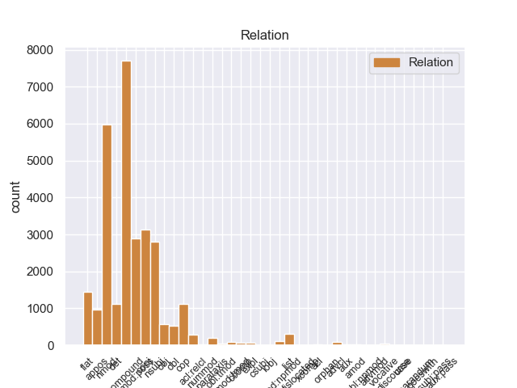
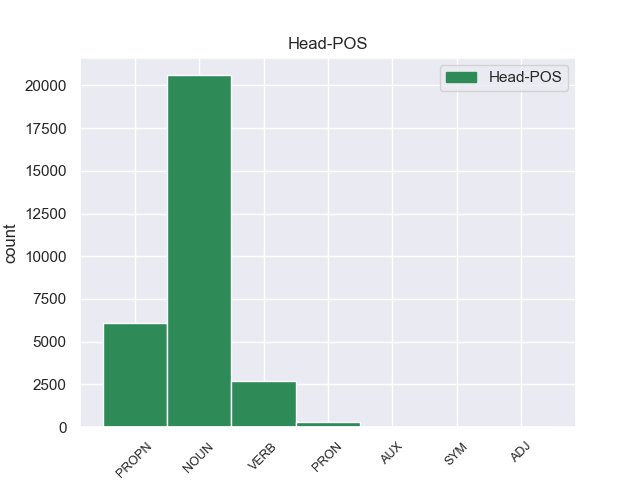
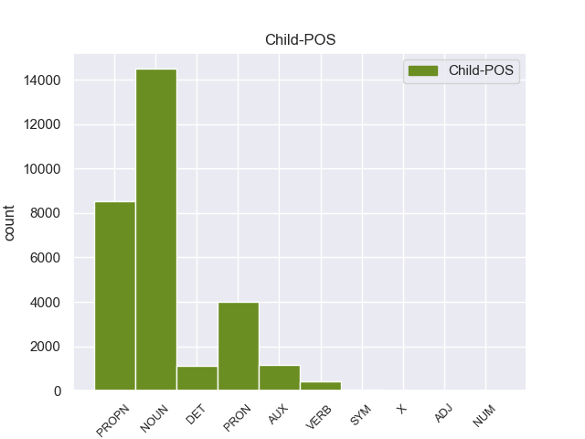

Distribution of features within this leaf



Agreement Rules sorted by frequency.
- When the dependent token is the compound(compound) of the head token, and the head token is NOUN and the dependent token is NOUN.
1 On _ _ _ _ 0 _ _ _
2 Monday _ _ _ _ 0 _ _ _
3 I _ _ _ _ 0 _ _ _
4 called _ _ _ _ 0 _ _ _
5 and _ _ _ _ 0 _ _ _
6 again _ _ _ _ 0 _ _ _
7 it _ _ _ _ 0 _ _ _
8 was _ _ _ _ 0 _ _ _
9 a _ _ _ _ 0 _ _ _
10 big _ _ _ _ 0 _ _ _
11 to to NOUN NN Number=Sing 13 compound 13:compound SpaceAfter=No
12 - _ _ _ _ 0 _ _ _
13 do do NOUN NN Number=Sing 0 _ _ _
14 to _ _ _ _ 0 _ _ _
15 find _ _ _ _ 0 _ _ _
16 anyone _ _ _ _ 0 _ _ _
17 who _ _ _ _ 0 _ _ _
18 knew _ _ _ _ 0 _ _ _
19 anything _ _ _ _ 0 _ _ _
20 about _ _ _ _ 0 _ _ _
21 it _ _ _ _ 0 _ _ _
22 . _ _ _ _ 0 _ _ _
1 I _ _ _ _ 0 _ _ _
2 will _ _ _ _ 0 _ _ _
3 never _ _ _ _ 0 _ _ _
4 return _ _ _ _ 0 _ _ _
5 there _ _ _ _ 0 _ _ _
6 again _ _ _ _ 0 _ _ _
7 ( _ _ _ _ 0 _ _ _
8 and _ _ _ _ 0 _ _ _
9 now _ _ _ _ 0 _ _ _
10 have _ _ _ _ 0 _ _ _
11 some _ _ _ _ 0 _ _ _
12 serious _ _ _ _ 0 _ _ _
13 doubts _ _ _ _ 0 _ _ _
14 about _ _ _ _ 0 _ _ _
15 the _ _ _ _ 0 _ _ _
16 quality quality NOUN NN Number=Sing 0 _ _ _
17 of _ _ _ _ 0 _ _ _
18 work work NOUN NN Number=Sing 16 nmod 16:nmod:of _
19 they _ _ _ _ 0 _ _ _
20 actually _ _ _ _ 0 _ _ _
21 performed _ _ _ _ 0 _ _ _
22 on _ _ _ _ 0 _ _ _
23 my _ _ _ _ 0 _ _ _
24 car _ _ _ _ 0 _ _ _
25 ) _ _ _ _ 0 _ _ _
26 . _ _ _ _ 0 _ _ _
1 After _ _ _ _ 0 _ _ _
2 happily _ _ _ _ 0 _ _ _
3 visiting _ _ _ _ 0 _ _ _
4 Sear's Sears PROPN NNP Number=Sing|Typo=Yes 5 compound 5:compound _
5 Automotives Automotives PROPN NNP Number=Sing 0 _ _ _
6 in _ _ _ _ 0 _ _ _
7 the _ _ _ _ 0 _ _ _
8 past _ _ _ _ 0 _ _ _
9 , _ _ _ _ 0 _ _ _
10 I _ _ _ _ 0 _ _ _
11 was _ _ _ _ 0 _ _ _
12 shocked _ _ _ _ 0 _ _ _
13 at _ _ _ _ 0 _ _ _
14 the _ _ _ _ 0 _ _ _
15 horrible _ _ _ _ 0 _ _ _
16 service _ _ _ _ 0 _ _ _
17 received _ _ _ _ 0 _ _ _
18 at _ _ _ _ 0 _ _ _
19 their _ _ _ _ 0 _ _ _
20 Greensboro _ _ _ _ 0 _ _ _
21 location _ _ _ _ 0 _ _ _
22 . _ _ _ _ 0 _ _ _
1 However _ _ _ _ 0 _ _ _
2 , _ _ _ _ 0 _ _ _
3 when _ _ _ _ 0 _ _ _
4 he _ _ _ _ 0 _ _ _
5 printed _ _ _ _ 0 _ _ _
6 out _ _ _ _ 0 _ _ _
7 the _ _ _ _ 0 _ _ _
8 service _ _ _ _ 0 _ _ _
9 quote _ _ _ _ 0 _ _ _
10 , _ _ _ _ 0 _ _ _
11 I _ _ _ _ 0 _ _ _
12 could _ _ _ _ 0 _ _ _
13 see _ _ _ _ 0 _ _ _
14 that _ _ _ _ 0 _ _ _
15 it _ _ _ _ 0 _ _ _
16 was _ _ _ _ 0 _ _ _
17 NOT _ _ _ _ 0 _ _ _
18 the _ _ _ _ 0 _ _ _
19 correct _ _ _ _ 0 _ _ _
20 tire tire NOUN NN Number=Sing 0 _ _ _
21 , _ _ _ _ 0 _ _ _
22 and _ _ _ _ 0 _ _ _
23 was _ _ _ _ 0 _ _ _
24 not _ _ _ _ 0 _ _ _
25 even _ _ _ _ 0 _ _ _
26 an _ _ _ _ 0 _ _ _
27 appropriate _ _ _ _ 0 _ _ _
28 tire tire NOUN NN Number=Sing 20 conj 13:ccomp|20:conj:and _
29 for _ _ _ _ 0 _ _ _
30 my _ _ _ _ 0 _ _ _
31 car _ _ _ _ 0 _ _ _
32 model _ _ _ _ 0 _ _ _
33 . _ _ _ _ 0 _ _ _
1 I _ _ _ _ 0 _ _ _
2 will _ _ _ _ 0 _ _ _
3 never _ _ _ _ 0 _ _ _
4 return _ _ _ _ 0 _ _ _
5 there _ _ _ _ 0 _ _ _
6 again _ _ _ _ 0 _ _ _
7 ( _ _ _ _ 0 _ _ _
8 and _ _ _ _ 0 _ _ _
9 now _ _ _ _ 0 _ _ _
10 have _ _ _ _ 0 _ _ _
11 some _ _ _ _ 0 _ _ _
12 serious _ _ _ _ 0 _ _ _
13 doubts _ _ _ _ 0 _ _ _
14 about _ _ _ _ 0 _ _ _
15 the _ _ _ _ 0 _ _ _
16 quality _ _ _ _ 0 _ _ _
17 of _ _ _ _ 0 _ _ _
18 work _ _ _ _ 0 _ _ _
19 they _ _ _ _ 0 _ _ _
20 actually _ _ _ _ 0 _ _ _
21 performed _ _ _ _ 0 _ _ _
22 on _ _ _ _ 0 _ _ _
23 my my PRON PRP$ Number=Sing|Person=1|Poss=Yes|PronType=Prs 24 nmod:poss 24:nmod:poss _
24 car car NOUN NN Number=Sing 0 _ _ _
25 ) _ _ _ _ 0 _ _ _
26 . _ _ _ _ 0 _ _ _
1 I _ _ _ _ 0 _ _ _
2 am _ _ _ _ 0 _ _ _
3 not _ _ _ _ 0 _ _ _
4 sure _ _ _ _ 0 _ _ _
5 about _ _ _ _ 0 _ _ _
6 the _ _ _ _ 0 _ _ _
7 quality _ _ _ _ 0 _ _ _
8 of _ _ _ _ 0 _ _ _
9 the _ _ _ _ 0 _ _ _
10 other _ _ _ _ 0 _ _ _
11 doctors _ _ _ _ 0 _ _ _
12 there _ _ _ _ 0 _ _ _
13 , _ _ _ _ 0 _ _ _
14 but _ _ _ _ 0 _ _ _
15 i _ _ _ _ 0 _ _ _
16 do _ _ _ _ 0 _ _ _
17 know _ _ _ _ 0 _ _ _
18 from _ _ _ _ 0 _ _ _
19 personal _ _ _ _ 0 _ _ _
20 experience _ _ _ _ 0 _ _ _
21 that _ _ _ _ 0 _ _ _
22 Dr. Dr. PROPN NNP Number=Sing 0 _ _ _
23 Christopher _ _ _ _ 0 _ _ _
24 T. _ _ _ _ 0 _ _ _
25 Strzalka Strzalka PROPN NNP Number=Sing 22 flat 22:flat _
26 is _ _ _ _ 0 _ _ _
27 not _ _ _ _ 0 _ _ _
28 a _ _ _ _ 0 _ _ _
29 man _ _ _ _ 0 _ _ _
30 of _ _ _ _ 0 _ _ _
31 his _ _ _ _ 0 _ _ _
32 word _ _ _ _ 0 _ _ _
33 , _ _ _ _ 0 _ _ _
34 and _ _ _ _ 0 _ _ _
35 is _ _ _ _ 0 _ _ _
36 also _ _ _ _ 0 _ _ _
37 very _ _ _ _ 0 _ _ _
38 CRUEL _ _ _ _ 0 _ _ _
39 AND _ _ _ _ 0 _ _ _
40 UNCARING _ _ _ _ 0 _ _ _
41 !! _ _ _ _ 0 _ _ _
1 Supposedly _ _ _ _ 0 _ _ _
2 they _ _ _ _ 0 _ _ _
3 will _ _ _ _ 0 _ _ _
4 be _ _ _ _ 0 _ _ _
5 holding _ _ _ _ 0 _ _ _
6 it _ _ _ _ 0 _ _ _
7 for _ _ _ _ 0 _ _ _
8 me _ _ _ _ 0 _ _ _
9 this this DET DT Number=Sing|PronType=Dem 10 det 10:det _
10 evening evening NOUN NN Number=Sing 0 _ _ _
11 , _ _ _ _ 0 _ _ _
12 but _ _ _ _ 0 _ _ _
13 I _ _ _ _ 0 _ _ _
14 'm _ _ _ _ 0 _ _ _
15 sure _ _ _ _ 0 _ _ _
16 that _ _ _ _ 0 _ _ _
17 will _ _ _ _ 0 _ _ _
18 also _ _ _ _ 0 _ _ _
19 be _ _ _ _ 0 _ _ _
20 a _ _ _ _ 0 _ _ _
21 huge _ _ _ _ 0 _ _ _
22 ordeal _ _ _ _ 0 _ _ _
23 . _ _ _ _ 0 _ _ _
1 On _ _ _ _ 0 _ _ _
2 Monday _ _ _ _ 0 _ _ _
3 I _ _ _ _ 0 _ _ _
4 called _ _ _ _ 0 _ _ _
5 and _ _ _ _ 0 _ _ _
6 again _ _ _ _ 0 _ _ _
7 it _ _ _ _ 0 _ _ _
8 was be AUX VBD Mood=Ind|Number=Sing|Person=3|Tense=Past|VerbForm=Fin 13 cop 13:cop _
9 a _ _ _ _ 0 _ _ _
10 big _ _ _ _ 0 _ _ _
11 to _ _ _ _ 0 _ _ _
12 - _ _ _ _ 0 _ _ _
13 do do NOUN NN Number=Sing 0 _ _ _
14 to _ _ _ _ 0 _ _ _
15 find _ _ _ _ 0 _ _ _
16 anyone _ _ _ _ 0 _ _ _
17 who _ _ _ _ 0 _ _ _
18 knew _ _ _ _ 0 _ _ _
19 anything _ _ _ _ 0 _ _ _
20 about _ _ _ _ 0 _ _ _
21 it _ _ _ _ 0 _ _ _
22 . _ _ _ _ 0 _ _ _
1 The _ _ _ _ 0 _ _ _
2 worst _ _ _ _ 0 _ _ _
3 thing _ _ _ _ 0 _ _ _
4 that _ _ _ _ 0 _ _ _
5 can _ _ _ _ 0 _ _ _
6 happen _ _ _ _ 0 _ _ _
7 for _ _ _ _ 0 _ _ _
8 any _ _ _ _ 0 _ _ _
9 restaurant restaurant NOUN NN Number=Sing 0 _ _ _
10 like _ _ _ _ 0 _ _ _
11 Zahav Zahav PROPN NNP Number=Sing 9 nmod 9:nmod:like _
12 is _ _ _ _ 0 _ _ _
13 to _ _ _ _ 0 _ _ _
14 have _ _ _ _ 0 _ _ _
15 too _ _ _ _ 0 _ _ _
16 many _ _ _ _ 0 _ _ _
17 people _ _ _ _ 0 _ _ _
18 write _ _ _ _ 0 _ _ _
19 hyperbolic _ _ _ _ 0 _ _ _
20 reviews _ _ _ _ 0 _ _ _
21 making _ _ _ _ 0 _ _ _
22 claims _ _ _ _ 0 _ _ _
23 that _ _ _ _ 0 _ _ _
24 " _ _ _ _ 0 _ _ _
25 everyone _ _ _ _ 0 _ _ _
26 " _ _ _ _ 0 _ _ _
27 is _ _ _ _ 0 _ _ _
28 going _ _ _ _ 0 _ _ _
29 to _ _ _ _ 0 _ _ _
30 " _ _ _ _ 0 _ _ _
31 love _ _ _ _ 0 _ _ _
32 " _ _ _ _ 0 _ _ _
33 the _ _ _ _ 0 _ _ _
34 food _ _ _ _ 0 _ _ _
35 , _ _ _ _ 0 _ _ _
36 decor _ _ _ _ 0 _ _ _
37 and _ _ _ _ 0 _ _ _
38 service _ _ _ _ 0 _ _ _
39 . _ _ _ _ 0 _ _ _
1 After _ _ _ _ 0 _ _ _
2 happily _ _ _ _ 0 _ _ _
3 visiting _ _ _ _ 0 _ _ _
4 Sear's _ _ _ _ 0 _ _ _
5 Automotives _ _ _ _ 0 _ _ _
6 in _ _ _ _ 0 _ _ _
7 the _ _ _ _ 0 _ _ _
8 past _ _ _ _ 0 _ _ _
9 , _ _ _ _ 0 _ _ _
10 I _ _ _ _ 0 _ _ _
11 was _ _ _ _ 0 _ _ _
12 shocked _ _ _ _ 0 _ _ _
13 at _ _ _ _ 0 _ _ _
14 the _ _ _ _ 0 _ _ _
15 horrible _ _ _ _ 0 _ _ _
16 service _ _ _ _ 0 _ _ _
17 received _ _ _ _ 0 _ _ _
18 at _ _ _ _ 0 _ _ _
19 their _ _ _ _ 0 _ _ _
20 Greensboro Greensboro PROPN NNP Number=Sing 21 compound 21:compound _
21 location location NOUN NN Number=Sing 0 _ _ _
22 . _ _ _ _ 0 _ _ _
1 17th _ _ _ _ 0 _ _ _
2 , _ _ _ _ 0 _ _ _
3 like _ _ _ _ 0 _ _ _
4 over _ _ _ _ 0 _ _ _
5 by _ _ _ _ 0 _ _ _
6 16th 16th PROPN NNP Number=Sing 0 _ _ _
7 and _ _ _ _ 0 _ _ _
8 15th 15th PROPN NNP Number=Sing 6 conj 4:obl:by|6:conj:and _
9 YES _ _ _ _ 0 _ _ _
10 , _ _ _ _ 0 _ _ _
11 I _ _ _ _ 0 _ _ _
12 say _ _ _ _ 0 _ _ _
13 , _ _ _ _ 0 _ _ _
14 one _ _ _ _ 0 _ _ _
15 mile _ _ _ _ 0 _ _ _
16 west _ _ _ _ 0 _ _ _
17 of _ _ _ _ 0 _ _ _
18 you _ _ _ _ 0 _ _ _
19 . _ _ _ _ 0 _ _ _
1 Perhaps _ _ _ _ 0 _ _ _
2 had _ _ _ _ 0 _ _ _
3 we _ _ _ _ 0 _ _ _
4 not _ _ _ _ 0 _ _ _
5 gone _ _ _ _ 0 _ _ _
6 into _ _ _ _ 0 _ _ _
7 this _ _ _ _ 0 _ _ _
8 restaurant _ _ _ _ 0 _ _ _
9 believing _ _ _ _ 0 _ _ _
10 Zahav _ _ _ _ 0 _ _ _
11 was _ _ _ _ 0 _ _ _
12 going _ _ _ _ 0 _ _ _
13 to _ _ _ _ 0 _ _ _
14 be _ _ _ _ 0 _ _ _
15 golden _ _ _ _ 0 _ _ _
16 as _ _ _ _ 0 _ _ _
17 its _ _ _ _ 0 _ _ _
18 name name NOUN NN Number=Sing 19 nsubj 19:nsubj _
19 suggests suggest VERB VBZ Mood=Ind|Number=Sing|Person=3|Tense=Pres|VerbForm=Fin 0 _ _ _
20 ( _ _ _ _ 0 _ _ _
21 and _ _ _ _ 0 _ _ _
22 as _ _ _ _ 0 _ _ _
23 the _ _ _ _ 0 _ _ _
24 many _ _ _ _ 0 _ _ _
25 golden _ _ _ _ 0 _ _ _
26 reviews _ _ _ _ 0 _ _ _
27 seem _ _ _ _ 0 _ _ _
28 to _ _ _ _ 0 _ _ _
29 attest _ _ _ _ 0 _ _ _
30 ) _ _ _ _ 0 _ _ _
31 , _ _ _ _ 0 _ _ _
32 we _ _ _ _ 0 _ _ _
33 would _ _ _ _ 0 _ _ _
34 have _ _ _ _ 0 _ _ _
35 enjoyed _ _ _ _ 0 _ _ _
36 a _ _ _ _ 0 _ _ _
37 decent _ _ _ _ 0 _ _ _
38 little _ _ _ _ 0 _ _ _
39 expensive _ _ _ _ 0 _ _ _
40 experience _ _ _ _ 0 _ _ _
41 . _ _ _ _ 0 _ _ _
1 Supposedly _ _ _ _ 0 _ _ _
2 they _ _ _ _ 0 _ _ _
3 will _ _ _ _ 0 _ _ _
4 be _ _ _ _ 0 _ _ _
5 holding _ _ _ _ 0 _ _ _
6 it _ _ _ _ 0 _ _ _
7 for _ _ _ _ 0 _ _ _
8 me _ _ _ _ 0 _ _ _
9 this _ _ _ _ 0 _ _ _
10 evening _ _ _ _ 0 _ _ _
11 , _ _ _ _ 0 _ _ _
12 but _ _ _ _ 0 _ _ _
13 I _ _ _ _ 0 _ _ _
14 'm _ _ _ _ 0 _ _ _
15 sure _ _ _ _ 0 _ _ _
16 that that PRON DT Number=Sing|PronType=Dem 22 nsubj 22:nsubj _
17 will _ _ _ _ 0 _ _ _
18 also _ _ _ _ 0 _ _ _
19 be _ _ _ _ 0 _ _ _
20 a _ _ _ _ 0 _ _ _
21 huge _ _ _ _ 0 _ _ _
22 ordeal ordeal NOUN NN Number=Sing 0 _ _ _
23 . _ _ _ _ 0 _ _ _
1 Unless _ _ _ _ 0 _ _ _
2 you _ _ _ _ 0 _ _ _
3 want _ _ _ _ 0 _ _ _
4 to _ _ _ _ 0 _ _ _
5 take _ _ _ _ 0 _ _ _
6 the _ _ _ _ 0 _ _ _
7 " _ _ _ _ 0 _ _ _
8 tell _ _ _ _ 0 _ _ _
9 the _ _ _ _ 0 _ _ _
10 customer _ _ _ _ 0 _ _ _
11 how _ _ _ _ 0 _ _ _
12 wrong _ _ _ _ 0 _ _ _
13 she she PRON PRP Case=Nom|Gender=Fem|Number=Sing|Person=3|PronType=Prs 14 nsubj 14:nsubj _
14 is be VERB VBZ Mood=Ind|Number=Sing|Person=3|Tense=Pres|VerbForm=Fin 0 _ _ _
15 and _ _ _ _ 0 _ _ _
16 try _ _ _ _ 0 _ _ _
17 and _ _ _ _ 0 _ _ _
18 force _ _ _ _ 0 _ _ _
19 her _ _ _ _ 0 _ _ _
20 into _ _ _ _ 0 _ _ _
21 a _ _ _ _ 0 _ _ _
22 dress _ _ _ _ 0 _ _ _
23 she _ _ _ _ 0 _ _ _
24 's _ _ _ _ 0 _ _ _
25 obviously _ _ _ _ 0 _ _ _
26 not _ _ _ _ 0 _ _ _
27 loving _ _ _ _ 0 _ _ _
28 " _ _ _ _ 0 _ _ _
29 approach _ _ _ _ 0 _ _ _
30 which _ _ _ _ 0 _ _ _
31 will _ _ _ _ 0 _ _ _
32 likely _ _ _ _ 0 _ _ _
33 get _ _ _ _ 0 _ _ _
34 you _ _ _ _ 0 _ _ _
35 ... _ _ _ _ 0 _ _ _
36 uh _ _ _ _ 0 _ _ _
37 ... _ _ _ _ 0 _ _ _
38 nowhere _ _ _ _ 0 _ _ _
39 . _ _ _ _ 0 _ _ _
1 I _ _ _ _ 0 _ _ _
2 guess _ _ _ _ 0 _ _ _
3 that _ _ _ _ 0 _ _ _
4 tells tell VERB VBZ Mood=Ind|Number=Sing|Person=3|Tense=Pres|VerbForm=Fin 0 _ _ _
5 you _ _ _ _ 0 _ _ _
6 a _ _ _ _ 0 _ _ _
7 lot lot NOUN NN Number=Sing 4 obj 4:obj SpaceAfter=No
8 . _ _ _ _ 0 _ _ _
1 The _ _ _ _ 0 _ _ _
2 duck duck NOUN NN Number=Sing 7 nsubj 7:nsubj _
3 was _ _ _ _ 0 _ _ _
4 a _ _ _ _ 0 _ _ _
5 65 _ _ _ _ 0 _ _ _
6 % _ _ _ _ 0 _ _ _
7 glob glob NOUN NN Number=Sing 0 _ _ _
8 of _ _ _ _ 0 _ _ _
9 chewy _ _ _ _ 0 _ _ _
10 fat _ _ _ _ 0 _ _ _
11 with _ _ _ _ 0 _ _ _
12 no _ _ _ _ 0 _ _ _
13 resemblance _ _ _ _ 0 _ _ _
14 to _ _ _ _ 0 _ _ _
15 the _ _ _ _ 0 _ _ _
16 juicy _ _ _ _ 0 _ _ _
17 , _ _ _ _ 0 _ _ _
18 crispy _ _ _ _ 0 _ _ _
19 delicacy _ _ _ _ 0 _ _ _
20 it _ _ _ _ 0 _ _ _
21 usually _ _ _ _ 0 _ _ _
22 represents _ _ _ _ 0 _ _ _
23 at _ _ _ _ 0 _ _ _
24 other _ _ _ _ 0 _ _ _
25 establishments _ _ _ _ 0 _ _ _
26 . _ _ _ _ 0 _ _ _
1 My _ _ _ _ 0 _ _ _
2 heart _ _ _ _ 0 _ _ _
3 pounded _ _ _ _ 0 _ _ _
4 as _ _ _ _ 0 _ _ _
5 I _ _ _ _ 0 _ _ _
6 walked _ _ _ _ 0 _ _ _
7 down _ _ _ _ 0 _ _ _
8 and _ _ _ _ 0 _ _ _
9 pounded _ _ _ _ 0 _ _ _
10 even _ _ _ _ 0 _ _ _
11 faster _ _ _ _ 0 _ _ _
12 upon _ _ _ _ 0 _ _ _
13 seeing _ _ _ _ 0 _ _ _
14 Gerry _ _ _ _ 0 _ _ _
15 in _ _ _ _ 0 _ _ _
16 an _ _ _ _ 0 _ _ _
17 SUV SUV PROPN NNP Number=Sing 0 _ _ _
18 - _ _ _ _ 0 _ _ _
19 Lexus Lexus PROPN NNP Number=Sing 17 appos 17:appos SpaceAfter=No
20 ! _ _ _ _ 0 _ _ _
1 Now _ _ _ _ 0 _ _ _
2 , _ _ _ _ 0 _ _ _
3 the _ _ _ _ 0 _ _ _
4 best _ _ _ _ 0 _ _ _
5 of _ _ _ _ 0 _ _ _
6 that _ _ _ _ 0 _ _ _
7 unique _ _ _ _ 0 _ _ _
8 food _ _ _ _ 0 _ _ _
9 comes come VERB VBZ Mood=Ind|Number=Sing|Person=3|Tense=Pres|VerbForm=Fin 0 _ _ _
10 at _ _ _ _ 0 _ _ _
11 the _ _ _ _ 0 _ _ _
12 very _ _ _ _ 0 _ _ _
13 beginning beginning NOUN NN Number=Sing 9 obl 9:obl:at _
14 of _ _ _ _ 0 _ _ _
15 the _ _ _ _ 0 _ _ _
16 meal _ _ _ _ 0 _ _ _
17 . _ _ _ _ 0 _ _ _
1 January _ _ _ _ 0 _ _ _
2 15th _ _ _ _ 0 _ _ _
3 -- _ _ _ _ 0 _ _ _
4 We _ _ _ _ 0 _ _ _
5 were _ _ _ _ 0 _ _ _
6 signed _ _ _ _ 0 _ _ _
7 up _ _ _ _ 0 _ _ _
8 for _ _ _ _ 0 _ _ _
9 Saturday Saturday PROPN NNP Number=Sing 13 nmod:poss 13:nmod:poss SpaceAfter=No
10 's _ _ _ _ 0 _ _ _
11 2 _ _ _ _ 0 _ _ _
12 PM _ _ _ _ 0 _ _ _
13 class class NOUN NN Number=Sing 0 _ _ _
14 " _ _ _ _ 0 _ _ _
15 Beginning _ _ _ _ 0 _ _ _
16 Yoga _ _ _ _ 0 _ _ _
17 with _ _ _ _ 0 _ _ _
18 Brittany _ _ _ _ 0 _ _ _
19 . _ _ _ _ 0 _ _ _
20 " _ _ _ _ 0 _ _ _
1 Well _ _ _ _ 0 _ _ _
2 , _ _ _ _ 0 _ _ _
3 again _ _ _ _ 0 _ _ _
4 , _ _ _ _ 0 _ _ _
5 I _ _ _ _ 0 _ _ _
6 am _ _ _ _ 0 _ _ _
7 now _ _ _ _ 0 _ _ _
8 faced _ _ _ _ 0 _ _ _
9 with _ _ _ _ 0 _ _ _
10 a _ _ _ _ 0 _ _ _
11 tax _ _ _ _ 0 _ _ _
12 bill _ _ _ _ 0 _ _ _
13 of _ _ _ _ 0 _ _ _
14 $ _ _ _ _ 0 _ _ _
15 6,000 _ _ _ _ 0 _ _ _
16 + _ _ _ _ 0 _ _ _
17 , _ _ _ _ 0 _ _ _
18 all _ _ _ _ 0 _ _ _
19 due _ _ _ _ 0 _ _ _
20 on _ _ _ _ 0 _ _ _
21 April _ _ _ _ 0 _ _ _
22 15 _ _ _ _ 0 _ _ _
23 , _ _ _ _ 0 _ _ _
24 2010 _ _ _ _ 0 _ _ _
25 and _ _ _ _ 0 _ _ _
26 all _ _ _ _ 0 _ _ _
27 that _ _ _ _ 0 _ _ _
28 Rod Rod PROPN NNP Number=Sing 29 nsubj 29:nsubj|31:nsubj:xsubj _
29 has have VERB VBZ Mood=Ind|Number=Sing|Person=3|Tense=Pres|VerbForm=Fin 0 _ _ _
30 to _ _ _ _ 0 _ _ _
31 say _ _ _ _ 0 _ _ _
32 to _ _ _ _ 0 _ _ _
33 the _ _ _ _ 0 _ _ _
34 matter _ _ _ _ 0 _ _ _
35 is _ _ _ _ 0 _ _ _
36 ' _ _ _ _ 0 _ _ _
37 well _ _ _ _ 0 _ _ _
38 , _ _ _ _ 0 _ _ _
39 you _ _ _ _ 0 _ _ _
40 wo _ _ _ _ 0 _ _ _
41 n't _ _ _ _ 0 _ _ _
42 have _ _ _ _ 0 _ _ _
43 to _ _ _ _ 0 _ _ _
44 pay _ _ _ _ 0 _ _ _
45 a _ _ _ _ 0 _ _ _
46 penalty _ _ _ _ 0 _ _ _
47 . _ _ _ _ 0 _ _ _
48 ' _ _ _ _ 0 _ _ _
1 She _ _ _ _ 0 _ _ _
2 says _ _ _ _ 0 _ _ _
3 , _ _ _ _ 0 _ _ _
4 Is _ _ _ _ 0 _ _ _
5 that _ _ _ _ 0 _ _ _
6 17th 17th PROPN NNP Number=Sing 0 _ _ _
7 like _ _ _ _ 0 _ _ _
8 over _ _ _ _ 0 _ _ _
9 past _ _ _ _ 0 _ _ _
10 broad broad PROPN NNP Number=Sing 6 nmod 6:nmod:past SpaceAfter=No
11 . _ _ _ _ 0 _ _ _
1 The _ _ _ _ 0 _ _ _
2 staff staff NOUN NN Number=Sing 0 _ _ _
3 was _ _ _ _ 0 _ _ _
4 friendly _ _ _ _ 0 _ _ _
5 , _ _ _ _ 0 _ _ _
6 especially _ _ _ _ 0 _ _ _
7 the _ _ _ _ 0 _ _ _
8 front _ _ _ _ 0 _ _ _
9 desk _ _ _ _ 0 _ _ _
10 female _ _ _ _ 0 _ _ _
11 supervisor supervisor NOUN NN Number=Sing 2 appos 2:appos SpaceAfter=No
12 , _ _ _ _ 0 _ _ _
13 and _ _ _ _ 0 _ _ _
14 seemed _ _ _ _ 0 _ _ _
15 to _ _ _ _ 0 _ _ _
16 want _ _ _ _ 0 _ _ _
17 to _ _ _ _ 0 _ _ _
18 help _ _ _ _ 0 _ _ _
19 , _ _ _ _ 0 _ _ _
20 but _ _ _ _ 0 _ _ _
21 too _ _ _ _ 0 _ _ _
22 many _ _ _ _ 0 _ _ _
23 unusual _ _ _ _ 0 _ _ _
24 things _ _ _ _ 0 _ _ _
25 happened _ _ _ _ 0 _ _ _
26 to _ _ _ _ 0 _ _ _
27 make _ _ _ _ 0 _ _ _
28 us _ _ _ _ 0 _ _ _
29 want _ _ _ _ 0 _ _ _
30 to _ _ _ _ 0 _ _ _
31 stay _ _ _ _ 0 _ _ _
32 there _ _ _ _ 0 _ _ _
33 again _ _ _ _ 0 _ _ _
34 . _ _ _ _ 0 _ _ _
1 The _ _ _ _ 0 _ _ _
2 guy guy NOUN NN Number=Sing 0 _ _ _
3 who _ _ _ _ 0 _ _ _
4 was _ _ _ _ 0 _ _ _
5 cutting _ _ _ _ 0 _ _ _
6 me _ _ _ _ 0 _ _ _
7 the _ _ _ _ 0 _ _ _
8 deals _ _ _ _ 0 _ _ _
9 and _ _ _ _ 0 _ _ _
10 getting _ _ _ _ 0 _ _ _
11 me _ _ _ _ 0 _ _ _
12 the _ _ _ _ 0 _ _ _
13 furniture _ _ _ _ 0 _ _ _
14 quickly _ _ _ _ 0 _ _ _
15 , _ _ _ _ 0 _ _ _
16 Ahmed Ahmed PROPN NNP Number=Sing 2 appos 2:appos SpaceAfter=No
17 , _ _ _ _ 0 _ _ _
18 was _ _ _ _ 0 _ _ _
19 nice _ _ _ _ 0 _ _ _
20 and _ _ _ _ 0 _ _ _
21 mostly _ _ _ _ 0 _ _ _
22 professional _ _ _ _ 0 _ _ _
23 , _ _ _ _ 0 _ _ _
24 except _ _ _ _ 0 _ _ _
25 the _ _ _ _ 0 _ _ _
26 semi-sketchiness _ _ _ _ 0 _ _ _
27 . _ _ _ _ 0 _ _ _
1 Of _ _ _ _ 0 _ _ _
2 course _ _ _ _ 0 _ _ _
3 , _ _ _ _ 0 _ _ _
4 they _ _ _ _ 0 _ _ _
5 could _ _ _ _ 0 _ _ _
6 n't _ _ _ _ 0 _ _ _
7 call _ _ _ _ 0 _ _ _
8 him _ _ _ _ 0 _ _ _
9 either _ _ _ _ 0 _ _ _
10 to _ _ _ _ 0 _ _ _
11 ask _ _ _ _ 0 _ _ _
12 about _ _ _ _ 0 _ _ _
13 it _ _ _ _ 0 _ _ _
14 because _ _ _ _ 0 _ _ _
15 apparently _ _ _ _ 0 _ _ _
16 they _ _ _ _ 0 _ _ _
17 do _ _ _ _ 0 _ _ _
18 n't _ _ _ _ 0 _ _ _
19 keep _ _ _ _ 0 _ _ _
20 their _ _ _ _ 0 _ _ _
21 employees employee NOUN NNS Number=Plur 24 nmod:poss 24:nmod:poss SpaceAfter=No
22 ' _ _ _ _ 0 _ _ _
23 phone _ _ _ _ 0 _ _ _
24 numbers number NOUN NNS Number=Plur 0 _ _ _
25 ( _ _ _ _ 0 _ _ _
26 riiight _ _ _ _ 0 _ _ _
27 ) _ _ _ _ 0 _ _ _
28 , _ _ _ _ 0 _ _ _
29 so _ _ _ _ 0 _ _ _
30 I _ _ _ _ 0 _ _ _
31 would _ _ _ _ 0 _ _ _
32 have _ _ _ _ 0 _ _ _
33 to _ _ _ _ 0 _ _ _
34 return _ _ _ _ 0 _ _ _
35 on _ _ _ _ 0 _ _ _
36 Monday _ _ _ _ 0 _ _ _
37 ( _ _ _ _ 0 _ _ _
38 driving _ _ _ _ 0 _ _ _
39 for _ _ _ _ 0 _ _ _
40 3 _ _ _ _ 0 _ _ _
41 days _ _ _ _ 0 _ _ _
42 now _ _ _ _ 0 _ _ _
43 with _ _ _ _ 0 _ _ _
44 no _ _ _ _ 0 _ _ _
45 wheel _ _ _ _ 0 _ _ _
46 lock _ _ _ _ 0 _ _ _
47 should _ _ _ _ 0 _ _ _
48 I _ _ _ _ 0 _ _ _
49 get _ _ _ _ 0 _ _ _
50 a _ _ _ _ 0 _ _ _
51 flat _ _ _ _ 0 _ _ _
52 ) _ _ _ _ 0 _ _ _
53 . _ _ _ _ 0 _ _ _
1 By _ _ _ _ 0 _ _ _
2 the _ _ _ _ 0 _ _ _
3 way _ _ _ _ 0 _ _ _
4 , _ _ _ _ 0 _ _ _
5 Salmagundi Salmagundi PROPN NNP Number=Sing 0 _ _ _
6 ( _ _ _ _ 0 _ _ _
7 the _ _ _ _ 0 _ _ _
8 store _ _ _ _ 0 _ _ _
9 name name NOUN NN Number=Sing 5 appos 5:appos SpaceAfter=No
10 ) _ _ _ _ 0 _ _ _
11 means _ _ _ _ 0 _ _ _
12 something _ _ _ _ 0 _ _ _
13 like _ _ _ _ 0 _ _ _
14 smorgasbord _ _ _ _ 0 _ _ _
15 ; _ _ _ _ 0 _ _ _
16 potpourri _ _ _ _ 0 _ _ _
17 ; _ _ _ _ 0 _ _ _
18 motley _ _ _ _ 0 _ _ _
19 ; _ _ _ _ 0 _ _ _
20 variety _ _ _ _ 0 _ _ _
21 ; _ _ _ _ 0 _ _ _
22 mixed _ _ _ _ 0 _ _ _
23 bag _ _ _ _ 0 _ _ _
24 ; _ _ _ _ 0 _ _ _
25 miscellaneous _ _ _ _ 0 _ _ _
26 assortment _ _ _ _ 0 _ _ _
27 ; _ _ _ _ 0 _ _ _
28 mixture _ _ _ _ 0 _ _ _
29 , _ _ _ _ 0 _ _ _
30 a _ _ _ _ 0 _ _ _
31 variety _ _ _ _ 0 _ _ _
32 of _ _ _ _ 0 _ _ _
33 many _ _ _ _ 0 _ _ _
34 kinds _ _ _ _ 0 _ _ _
35 of _ _ _ _ 0 _ _ _
36 things _ _ _ _ 0 _ _ _
37 . _ _ _ _ 0 _ _ _
1 The _ _ _ _ 0 _ _ _
2 duck _ _ _ _ 0 _ _ _
3 was _ _ _ _ 0 _ _ _
4 a _ _ _ _ 0 _ _ _
5 65 _ _ _ _ 0 _ _ _
6 % _ _ _ _ 0 _ _ _
7 glob _ _ _ _ 0 _ _ _
8 of _ _ _ _ 0 _ _ _
9 chewy _ _ _ _ 0 _ _ _
10 fat _ _ _ _ 0 _ _ _
11 with _ _ _ _ 0 _ _ _
12 no _ _ _ _ 0 _ _ _
13 resemblance _ _ _ _ 0 _ _ _
14 to _ _ _ _ 0 _ _ _
15 the _ _ _ _ 0 _ _ _
16 juicy _ _ _ _ 0 _ _ _
17 , _ _ _ _ 0 _ _ _
18 crispy _ _ _ _ 0 _ _ _
19 delicacy delicacy NOUN NN Number=Sing 0 _ _ _
20 it _ _ _ _ 0 _ _ _
21 usually _ _ _ _ 0 _ _ _
22 represents represent VERB VBZ Mood=Ind|Number=Sing|Person=3|Tense=Pres|VerbForm=Fin 19 acl:relcl 19:acl:relcl _
23 at _ _ _ _ 0 _ _ _
24 other _ _ _ _ 0 _ _ _
25 establishments _ _ _ _ 0 _ _ _
26 . _ _ _ _ 0 _ _ _
1 and _ _ _ _ 0 _ _ _
2 I _ _ _ _ 0 _ _ _
3 said _ _ _ _ 0 _ _ _
4 , _ _ _ _ 0 _ _ _
5 YES _ _ _ _ 0 _ _ _
6 , _ _ _ _ 0 _ _ _
7 CENTER _ _ _ _ 0 _ _ _
8 CITY _ _ _ _ 0 _ _ _
9 PHILLY _ _ _ _ 0 _ _ _
10 , _ _ _ _ 0 _ _ _
11 and _ _ _ _ 0 _ _ _
12 he _ _ _ _ 0 _ _ _
13 says _ _ _ _ 0 _ _ _
14 , _ _ _ _ 0 _ _ _
15 NO _ _ _ _ 0 _ _ _
16 , _ _ _ _ 0 _ _ _
17 Warwick Warwick PROPN NNP Number=Sing 20 nsubj 20:nsubj _
18 is _ _ _ _ 0 _ _ _
19 a _ _ _ _ 0 _ _ _
20 township township NOUN NN Number=Sing 0 _ _ _
21 , _ _ _ _ 0 _ _ _
22 If _ _ _ _ 0 _ _ _
23 you _ _ _ _ 0 _ _ _
24 're _ _ _ _ 0 _ _ _
25 at _ _ _ _ 0 _ _ _
26 a _ _ _ _ 0 _ _ _
27 Radison _ _ _ _ 0 _ _ _
28 in _ _ _ _ 0 _ _ _
29 Warwick _ _ _ _ 0 _ _ _
30 that _ _ _ _ 0 _ _ _
31 s _ _ _ _ 0 _ _ _
32 too _ _ _ _ 0 _ _ _
33 far _ _ _ _ 0 _ _ _
34 , _ _ _ _ 0 _ _ _
35 try _ _ _ _ 0 _ _ _
36 dominos _ _ _ _ 0 _ _ _
37 in _ _ _ _ 0 _ _ _
38 Pottstown _ _ _ _ 0 _ _ _
39 . _ _ _ _ 0 _ _ _
1 Shakespeare _ _ _ _ 0 _ _ _
2 Electronic _ _ _ _ 0 _ _ _
3 Conference Conference PROPN NNP Number=Sing 0 _ _ _
4 , _ _ _ _ 0 _ _ _
5 Vol. vol. NOUN NN Number=Sing 3 list 3:list _
6 6 _ _ _ _ 0 _ _ _
7 , _ _ _ _ 0 _ _ _
8 No. _ _ _ _ 0 _ _ _
9 0832 _ _ _ _ 0 _ _ _
10 . _ _ _ _ 0 _ _ _
11 Monday _ _ _ _ 0 _ _ _
12 , _ _ _ _ 0 _ _ _
13 23 _ _ _ _ 0 _ _ _
14 October _ _ _ _ 0 _ _ _
15 1995 _ _ _ _ 0 _ _ _
16 . _ _ _ _ 0 _ _ _
1 We _ _ _ _ 0 _ _ _
2 were _ _ _ _ 0 _ _ _
3 introduced _ _ _ _ 0 _ _ _
4 to _ _ _ _ 0 _ _ _
5 Bistro _ _ _ _ 0 _ _ _
6 Tallulah _ _ _ _ 0 _ _ _
7 by _ _ _ _ 0 _ _ _
8 traveler _ _ _ _ 0 _ _ _
9 - _ _ _ _ 0 _ _ _
10 professional _ _ _ _ 0 _ _ _
11 diner _ _ _ _ 0 _ _ _
12 who _ _ _ _ 0 _ _ _
13 happens _ _ _ _ 0 _ _ _
14 to _ _ _ _ 0 _ _ _
15 own _ _ _ _ 0 _ _ _
16 the _ _ _ _ 0 _ _ _
17 Adelphi _ _ _ _ 0 _ _ _
18 Hotel _ _ _ _ 0 _ _ _
19 and _ _ _ _ 0 _ _ _
20 travels _ _ _ _ 0 _ _ _
21 the _ _ _ _ 0 _ _ _
22 world _ _ _ _ 0 _ _ _
23 -- _ _ _ _ 0 _ _ _
24 and _ _ _ _ 0 _ _ _
25 residing _ _ _ _ 0 _ _ _
26 in _ _ _ _ 0 _ _ _
27 Paris Paris PROPN NNP Number=Sing 0 _ _ _
28 , _ _ _ _ 0 _ _ _
29 London _ _ _ _ 0 _ _ _
30 , _ _ _ _ 0 _ _ _
31 New _ _ _ _ 0 _ _ _
32 York York PROPN NNP Number=Sing 27 list 27:list _
33 the _ _ _ _ 0 _ _ _
34 rest _ _ _ _ 0 _ _ _
35 of _ _ _ _ 0 _ _ _
36 the _ _ _ _ 0 _ _ _
37 year _ _ _ _ 0 _ _ _
38 . _ _ _ _ 0 _ _ _
1 Review _ _ _ _ 0 _ _ _
2 on _ _ _ _ 0 _ _ _
3 House house NOUN NN Number=Sing 7 compound 7:compound _
4 of _ _ _ _ 0 _ _ _
5 Joy _ _ _ _ 0 _ _ _
6 Chinese _ _ _ _ 0 _ _ _
7 Restaurant Restaurant PROPN NNP Number=Sing 0 _ _ _
1 The _ _ _ _ 0 _ _ _
2 salatim _ _ _ _ 0 _ _ _
3 salads _ _ _ _ 0 _ _ _
4 are _ _ _ _ 0 _ _ _
5 the _ _ _ _ 0 _ _ _
6 smallest _ _ _ _ 0 _ _ _
7 plates _ _ _ _ 0 _ _ _
8 I _ _ _ _ 0 _ _ _
9 've _ _ _ _ 0 _ _ _
10 ever _ _ _ _ 0 _ _ _
11 seen _ _ _ _ 0 _ _ _
12 placed _ _ _ _ 0 _ _ _
13 in _ _ _ _ 0 _ _ _
14 front front NOUN NN Number=Sing 0 _ _ _
15 of _ _ _ _ 0 _ _ _
16 me I PRON PRP Case=Acc|Number=Sing|Person=1|PronType=Prs 14 nmod 14:nmod:of _
17 ( _ _ _ _ 0 _ _ _
18 you _ _ _ _ 0 _ _ _
19 would _ _ _ _ 0 _ _ _
20 most _ _ _ _ 0 _ _ _
21 likely _ _ _ _ 0 _ _ _
22 think _ _ _ _ 0 _ _ _
23 they _ _ _ _ 0 _ _ _
24 were _ _ _ _ 0 _ _ _
25 condiments _ _ _ _ 0 _ _ _
26 if _ _ _ _ 0 _ _ _
27 it _ _ _ _ 0 _ _ _
28 were _ _ _ _ 0 _ _ _
29 n't _ _ _ _ 0 _ _ _
30 explained _ _ _ _ 0 _ _ _
31 to _ _ _ _ 0 _ _ _
32 you _ _ _ _ 0 _ _ _
33 ) _ _ _ _ 0 _ _ _
34 . _ _ _ _ 0 _ _ _
1 I _ _ _ _ 0 _ _ _
2 recently _ _ _ _ 0 _ _ _
3 took _ _ _ _ 0 _ _ _
4 a _ _ _ _ 0 _ _ _
5 rescue _ _ _ _ 0 _ _ _
6 puppy _ _ _ _ 0 _ _ _
7 to _ _ _ _ 0 _ _ _
8 this _ _ _ _ 0 _ _ _
9 Clinic _ _ _ _ 0 _ _ _
10 and _ _ _ _ 0 _ _ _
11 I _ _ _ _ 0 _ _ _
12 was _ _ _ _ 0 _ _ _
13 SHOCKED _ _ _ _ 0 _ _ _
14 at _ _ _ _ 0 _ _ _
15 how _ _ _ _ 0 _ _ _
16 well _ _ _ _ 0 _ _ _
17 Romeo Romeo PROPN NNP Number=Sing 0 _ _ _
18 and _ _ _ _ 0 _ _ _
19 My _ _ _ _ 0 _ _ _
20 family family NOUN NN Number=Sing 17 conj 17:conj:and|22:nsubj:pass _
21 was _ _ _ _ 0 _ _ _
22 treated _ _ _ _ 0 _ _ _
23 . _ _ _ _ 0 _ _ _
1 Broad _ _ _ _ 0 _ _ _
2 , _ _ _ _ 0 _ _ _
3 I _ _ _ _ 0 _ _ _
4 say _ _ _ _ 0 _ _ _
5 , _ _ _ _ 0 _ _ _
6 is be AUX VBZ Mood=Ind|Number=Sing|Person=3|Tense=Pres|VerbForm=Fin 8 cop 8:cop _
7 14th _ _ _ _ 0 _ _ _
8 street street PROPN NNP Number=Sing 0 _ _ _
9 and _ _ _ _ 0 _ _ _
10 I _ _ _ _ 0 _ _ _
11 am _ _ _ _ 0 _ _ _
12 3 _ _ _ _ 0 _ _ _
13 blocks _ _ _ _ 0 _ _ _
14 west _ _ _ _ 0 _ _ _
15 of _ _ _ _ 0 _ _ _
16 broad _ _ _ _ 0 _ _ _
17 and _ _ _ _ 0 _ _ _
18 one _ _ _ _ 0 _ _ _
19 south _ _ _ _ 0 _ _ _
20 of _ _ _ _ 0 _ _ _
21 walnut _ _ _ _ 0 _ _ _
22 . _ _ _ _ 0 _ _ _
1 If _ _ _ _ 0 _ _ _
2 you _ _ _ _ 0 _ _ _
3 want _ _ _ _ 0 _ _ _
4 a _ _ _ _ 0 _ _ _
5 doctor _ _ _ _ 0 _ _ _
6 who _ _ _ _ 0 _ _ _
7 will _ _ _ _ 0 _ _ _
8 lie _ _ _ _ 0 _ _ _
9 to _ _ _ _ 0 _ _ _
10 you _ _ _ _ 0 _ _ _
11 and _ _ _ _ 0 _ _ _
12 say _ _ _ _ 0 _ _ _
13 he _ _ _ _ 0 _ _ _
14 will _ _ _ _ 0 _ _ _
15 operate _ _ _ _ 0 _ _ _
16 and _ _ _ _ 0 _ _ _
17 then _ _ _ _ 0 _ _ _
18 change _ _ _ _ 0 _ _ _
19 his _ _ _ _ 0 _ _ _
20 mind _ _ _ _ 0 _ _ _
21 , _ _ _ _ 0 _ _ _
22 and _ _ _ _ 0 _ _ _
23 not _ _ _ _ 0 _ _ _
24 know _ _ _ _ 0 _ _ _
25 what _ _ _ _ 0 _ _ _
26 he _ _ _ _ 0 _ _ _
27 is _ _ _ _ 0 _ _ _
28 talking _ _ _ _ 0 _ _ _
29 about _ _ _ _ 0 _ _ _
30 when _ _ _ _ 0 _ _ _
31 he _ _ _ _ 0 _ _ _
32 recommends recommend VERB VBZ Mood=Ind|Number=Sing|Person=3|Tense=Pres|VerbForm=Fin 0 _ _ _
33 procedures _ _ _ _ 0 _ _ _
34 at _ _ _ _ 0 _ _ _
35 other _ _ _ _ 0 _ _ _
36 hospitals _ _ _ _ 0 _ _ _
37 and _ _ _ _ 0 _ _ _
38 says say VERB VBZ Mood=Ind|Number=Sing|Person=3|Tense=Pres|VerbForm=Fin 32 conj 28:advcl:when|32:conj:and _
39 they _ _ _ _ 0 _ _ _
40 are _ _ _ _ 0 _ _ _
41 what _ _ _ _ 0 _ _ _
42 you _ _ _ _ 0 _ _ _
43 need _ _ _ _ 0 _ _ _
44 , _ _ _ _ 0 _ _ _
45 when _ _ _ _ 0 _ _ _
46 they _ _ _ _ 0 _ _ _
47 will _ _ _ _ 0 _ _ _
48 not _ _ _ _ 0 _ _ _
49 work _ _ _ _ 0 _ _ _
50 for _ _ _ _ 0 _ _ _
51 you _ _ _ _ 0 _ _ _
52 , _ _ _ _ 0 _ _ _
53 go _ _ _ _ 0 _ _ _
54 to _ _ _ _ 0 _ _ _
55 this _ _ _ _ 0 _ _ _
56 doctor _ _ _ _ 0 _ _ _
57 ... _ _ _ _ 0 _ _ _
58 he _ _ _ _ 0 _ _ _
59 is _ _ _ _ 0 _ _ _
60 the _ _ _ _ 0 _ _ _
61 one _ _ _ _ 0 _ _ _
62 for _ _ _ _ 0 _ _ _
63 you _ _ _ _ 0 _ _ _
64 . _ _ _ _ 0 _ _ _
1 # _ _ _ _ 0 _ _ _
2 ) _ _ _ _ 0 _ _ _
3 If _ _ _ _ 0 _ _ _
4 you _ _ _ _ 0 _ _ _
5 want _ _ _ _ 0 _ _ _
6 a _ _ _ _ 0 _ _ _
7 late _ _ _ _ 0 _ _ _
8 checkout _ _ _ _ 0 _ _ _
9 , _ _ _ _ 0 _ _ _
10 ( _ _ _ _ 0 _ _ _
11 after _ _ _ _ 0 _ _ _
12 11 _ _ _ _ 0 _ _ _
13 AM _ _ _ _ 0 _ _ _
14 ) _ _ _ _ 0 _ _ _
15 they _ _ _ _ 0 _ _ _
16 charge _ _ _ _ 0 _ _ _
17 you _ _ _ _ 0 _ _ _
18 $ _ _ _ _ 0 _ _ _
19 15 _ _ _ _ 0 _ _ _
20 for _ _ _ _ 0 _ _ _
21 the _ _ _ _ 0 _ _ _
22 first _ _ _ _ 0 _ _ _
23 hour _ _ _ _ 0 _ _ _
24 , _ _ _ _ 0 _ _ _
24.1 charge _ _ _ _ 0 _ _ _
25 $ _ _ _ _ 0 _ _ _
26 25 _ _ _ _ 0 _ _ _
27 for _ _ _ _ 0 _ _ _
28 the _ _ _ _ 0 _ _ _
29 second _ _ _ _ 0 _ _ _
30 hour _ _ _ _ 0 _ _ _
31 , _ _ _ _ 0 _ _ _
32 and _ _ _ _ 0 _ _ _
33 after _ _ _ _ 0 _ _ _
34 2 _ _ _ _ 0 _ _ _
35 PM pm NOUN NN Number=Sing 41 obl 41:obl:after _
36 it _ _ _ _ 0 _ _ _
37 's _ _ _ _ 0 _ _ _
38 a _ _ _ _ 0 _ _ _
39 full _ _ _ _ 0 _ _ _
40 day _ _ _ _ 0 _ _ _
41 charge charge NOUN NN Number=Sing 0 _ _ _
42 . _ _ _ _ 0 _ _ _
1 I _ _ _ _ 0 _ _ _
2 have _ _ _ _ 0 _ _ _
3 to _ _ _ _ 0 _ _ _
4 say _ _ _ _ 0 _ _ _
5 the _ _ _ _ 0 _ _ _
6 value _ _ _ _ 0 _ _ _
7 of _ _ _ _ 0 _ _ _
8 this _ _ _ _ 0 _ _ _
9 place _ _ _ _ 0 _ _ _
10 always _ _ _ _ 0 _ _ _
11 amazes amaze VERB VBZ Mood=Ind|Number=Sing|Person=3|Tense=Pres|VerbForm=Fin 0 _ _ _
12 me I PRON PRP Case=Acc|Number=Sing|Person=1|PronType=Prs 11 obj 11:obj SpaceAfter=No
13 . _ _ _ _ 0 _ _ _
1 Call _ _ _ _ 0 _ _ _
2 dominos dominos PROPN NNP Number=Sing 0 _ _ _
3 in _ _ _ _ 0 _ _ _
4 your _ _ _ _ 0 _ _ _
5 town town NOUN NN Number=Sing 2 nmod 2:nmod:in SpaceAfter=No
6 . _ _ _ _ 0 _ _ _
1 Whereas _ _ _ _ 0 _ _ _
2 my _ _ _ _ 0 _ _ _
3 answer _ _ _ _ 0 _ _ _
4 to _ _ _ _ 0 _ _ _
5 the _ _ _ _ 0 _ _ _
6 question _ _ _ _ 0 _ _ _
7 " _ _ _ _ 0 _ _ _
8 Where _ _ _ _ 0 _ _ _
9 do _ _ _ _ 0 _ _ _
10 you _ _ _ _ 0 _ _ _
11 get _ _ _ _ 0 _ _ _
12 your _ _ _ _ 0 _ _ _
13 laundry _ _ _ _ 0 _ _ _
14 done _ _ _ _ 0 _ _ _
15 ? _ _ _ _ 0 _ _ _
16 " _ _ _ _ 0 _ _ _
17 used _ _ _ _ 0 _ _ _
18 to _ _ _ _ 0 _ _ _
19 be _ _ _ _ 0 _ _ _
20 , _ _ _ _ 0 _ _ _
21 " _ _ _ _ 0 _ _ _
22 At _ _ _ _ 0 _ _ _
23 the _ _ _ _ 0 _ _ _
24 checkout _ _ _ _ 0 _ _ _
25 line _ _ _ _ 0 _ _ _
26 at _ _ _ _ 0 _ _ _
27 WalMart _ _ _ _ 0 _ _ _
28 , _ _ _ _ 0 _ _ _
29 " _ _ _ _ 0 _ _ _
30 I _ _ _ _ 0 _ _ _
31 can _ _ _ _ 0 _ _ _
32 honestly _ _ _ _ 0 _ _ _
33 say _ _ _ _ 0 _ _ _
34 the _ _ _ _ 0 _ _ _
35 answer _ _ _ _ 0 _ _ _
36 now _ _ _ _ 0 _ _ _
37 is be VERB VBZ Mood=Ind|Number=Sing|Person=3|Tense=Pres|VerbForm=Fin 0 _ _ _
38 , _ _ _ _ 0 _ _ _
39 " _ _ _ _ 0 _ _ _
40 At _ _ _ _ 0 _ _ _
41 The _ _ _ _ 0 _ _ _
42 Laundry _ _ _ _ 0 _ _ _
43 Tub Tub PROPN NNP Number=Sing 37 obl 37:obl:at SpaceAfter=No
44 . _ _ _ _ 0 _ _ _
45 " _ _ _ _ 0 _ _ _
1 Our _ _ _ _ 0 _ _ _
2 company _ _ _ _ 0 _ _ _
3 is _ _ _ _ 0 _ _ _
4 a _ _ _ _ 0 _ _ _
5 high _ _ _ _ 0 _ _ _
6 end _ _ _ _ 0 _ _ _
7 designer _ _ _ _ 0 _ _ _
8 handbag _ _ _ _ 0 _ _ _
9 and _ _ _ _ 0 _ _ _
10 fashion _ _ _ _ 0 _ _ _
11 accessories _ _ _ _ 0 _ _ _
12 company company NOUN NN Number=Sing 0 _ _ _
13 , _ _ _ _ 0 _ _ _
14 thus _ _ _ _ 0 _ _ _
15 we _ _ _ _ 0 _ _ _
16 are _ _ _ _ 0 _ _ _
17 certainly _ _ _ _ 0 _ _ _
18 a _ _ _ _ 0 _ _ _
19 niche _ _ _ _ 0 _ _ _
20 market market NOUN NN Number=Sing 12 parataxis 12:parataxis SpaceAfter=No
21 . _ _ _ _ 0 _ _ _
1 Not _ _ _ _ 0 _ _ _
2 owners _ _ _ _ 0 _ _ _
3 that _ _ _ _ 0 _ _ _
4 seem _ _ _ _ 0 _ _ _
5 like _ _ _ _ 0 _ _ _
6 they _ _ _ _ 0 _ _ _
7 have _ _ _ _ 0 _ _ _
8 something _ _ _ _ 0 _ _ _
9 to _ _ _ _ 0 _ _ _
10 hide _ _ _ _ 0 _ _ _
11 and _ _ _ _ 0 _ _ _
12 know _ _ _ _ 0 _ _ _
13 nothing nothing PRON NN Number=Sing 0 _ _ _
14 about _ _ _ _ 0 _ _ _
15 common _ _ _ _ 0 _ _ _
16 courtesy courtesy NOUN NN Number=Sing 13 nmod 13:nmod:about _
17 and _ _ _ _ 0 _ _ _
18 customer _ _ _ _ 0 _ _ _
19 service _ _ _ _ 0 _ _ _
20 . _ _ _ _ 0 _ _ _
1 57 _ _ _ _ 0 _ _ _
2 - _ _ _ _ 0 _ _ _
3 Percentage _ _ _ _ 0 _ _ _
4 of _ _ _ _ 0 _ _ _
5 Republican _ _ _ _ 0 _ _ _
6 federal _ _ _ _ 0 _ _ _
7 judges _ _ _ _ 0 _ _ _
8 after _ _ _ _ 0 _ _ _
9 three _ _ _ _ 0 _ _ _
10 years _ _ _ _ 0 _ _ _
11 of _ _ _ _ 0 _ _ _
12 the _ _ _ _ 0 _ _ _
13 Bush Bush PROPN NNP Number=Sing 0 _ _ _
14 administration administration NOUN NN Number=Sing 13 flat 13:flat SpaceAfter=No
15 . _ _ _ _ 0 _ _ _
1 After _ _ _ _ 0 _ _ _
2 recently _ _ _ _ 0 _ _ _
3 relocating _ _ _ _ 0 _ _ _
4 to _ _ _ _ 0 _ _ _
5 South _ _ _ _ 0 _ _ _
6 Bend _ _ _ _ 0 _ _ _
7 , _ _ _ _ 0 _ _ _
8 we _ _ _ _ 0 _ _ _
9 were _ _ _ _ 0 _ _ _
10 looking _ _ _ _ 0 _ _ _
11 for _ _ _ _ 0 _ _ _
12 a _ _ _ _ 0 _ _ _
13 delicious _ _ _ _ 0 _ _ _
14 , _ _ _ _ 0 _ _ _
15 fun _ _ _ _ 0 _ _ _
16 , _ _ _ _ 0 _ _ _
17 yet _ _ _ _ 0 _ _ _
18 elegant _ _ _ _ 0 _ _ _
19 establishment _ _ _ _ 0 _ _ _
20 for _ _ _ _ 0 _ _ _
21 New _ _ _ _ 0 _ _ _
22 Year Year PROPN NNP Number=Sing 24 nmod:poss 24:nmod:poss SpaceAfter=No
23 s _ _ _ _ 0 _ _ _
24 Eve Eve PROPN NNP Number=Sing 0 _ _ _
25 dinner _ _ _ _ 0 _ _ _
26 . _ _ _ _ 0 _ _ _
1 She _ _ _ _ 0 _ _ _
2 says _ _ _ _ 0 _ _ _
3 , _ _ _ _ 0 _ _ _
4 Is _ _ _ _ 0 _ _ _
5 that that PRON DT Number=Sing|PronType=Dem 6 nsubj 6:nsubj _
6 17th 17th PROPN NNP Number=Sing 0 _ _ _
7 like _ _ _ _ 0 _ _ _
8 over _ _ _ _ 0 _ _ _
9 past _ _ _ _ 0 _ _ _
10 broad _ _ _ _ 0 _ _ _
11 . _ _ _ _ 0 _ _ _
1 I _ _ _ _ 0 _ _ _
2 just _ _ _ _ 0 _ _ _
3 called _ _ _ _ 0 _ _ _
4 again _ _ _ _ 0 _ _ _
5 and _ _ _ _ 0 _ _ _
6 was _ _ _ _ 0 _ _ _
7 told _ _ _ _ 0 _ _ _
8 that _ _ _ _ 0 _ _ _
9 workmanship _ _ _ _ 0 _ _ _
10 , _ _ _ _ 0 _ _ _
11 not _ _ _ _ 0 _ _ _
12 wood _ _ _ _ 0 _ _ _
13 , _ _ _ _ 0 _ _ _
14 is _ _ _ _ 0 _ _ _
15 guaranteed _ _ _ _ 0 _ _ _
16 for _ _ _ _ 0 _ _ _
17 a _ _ _ _ 0 _ _ _
18 year _ _ _ _ 0 _ _ _
19 - _ _ _ _ 0 _ _ _
20 well _ _ _ _ 0 _ _ _
21 in _ _ _ _ 0 _ _ _
22 my _ _ _ _ 0 _ _ _
23 opinion _ _ _ _ 0 _ _ _
24 - _ _ _ _ 0 _ _ _
25 the _ _ _ _ 0 _ _ _
26 wood _ _ _ _ 0 _ _ _
27 split _ _ _ _ 0 _ _ _
28 due _ _ _ _ 0 _ _ _
29 to _ _ _ _ 0 _ _ _
30 a _ _ _ _ 0 _ _ _
31 nail nail NOUN NN Number=Sing 0 _ _ _
32 which _ _ _ _ 0 _ _ _
33 is _ _ _ _ 0 _ _ _
34 part part NOUN NN Number=Sing 31 acl:relcl 31:acl:relcl _
35 of _ _ _ _ 0 _ _ _
36 workmanship _ _ _ _ 0 _ _ _
37 ! _ _ _ _ 0 _ _ _
1 A _ _ _ _ 0 _ _ _
2 great _ _ _ _ 0 _ _ _
3 breakfast breakfast NOUN NN Number=Sing 0 _ _ _
4 which _ _ _ _ 0 _ _ _
5 was _ _ _ _ 0 _ _ _
6 included _ _ _ _ 0 _ _ _
7 every _ _ _ _ 0 _ _ _
8 morning morning NOUN NN Number=Sing 3 nmod:tmod 3:nmod:tmod _
9 until _ _ _ _ 0 _ _ _
10 9:30 _ _ _ _ 0 _ _ _
11 am _ _ _ _ 0 _ _ _
12 ; _ _ _ _ 0 _ _ _
13 yummy _ _ _ _ 0 _ _ _
14 fresh _ _ _ _ 0 _ _ _
15 Parisian _ _ _ _ 0 _ _ _
16 croissants _ _ _ _ 0 _ _ _
17 . _ _ _ _ 0 _ _ _
1 My _ _ _ _ 0 _ _ _
2 family family NOUN NN Number=Sing 0 _ _ _
3 and _ _ _ _ 0 _ _ _
4 I I PRON PRP Case=Nom|Number=Sing|Person=1|PronType=Prs 2 conj 2:conj:and|5:nsubj _
5 moved _ _ _ _ 0 _ _ _
6 to _ _ _ _ 0 _ _ _
7 San _ _ _ _ 0 _ _ _
8 Antonio _ _ _ _ 0 _ _ _
9 a _ _ _ _ 0 _ _ _
10 year _ _ _ _ 0 _ _ _
11 ago _ _ _ _ 0 _ _ _
12 and _ _ _ _ 0 _ _ _
13 have _ _ _ _ 0 _ _ _
14 tried _ _ _ _ 0 _ _ _
15 almost _ _ _ _ 0 _ _ _
16 all _ _ _ _ 0 _ _ _
17 of _ _ _ _ 0 _ _ _
18 the _ _ _ _ 0 _ _ _
19 Chinese _ _ _ _ 0 _ _ _
20 Restaurants _ _ _ _ 0 _ _ _
21 because _ _ _ _ 0 _ _ _
22 we _ _ _ _ 0 _ _ _
23 love _ _ _ _ 0 _ _ _
24 Chinese _ _ _ _ 0 _ _ _
25 food _ _ _ _ 0 _ _ _
26 . _ _ _ _ 0 _ _ _
1 Long _ _ _ _ 0 _ _ _
2 Lines line NOUN NNS Number=Plur 0 _ _ _
3 , _ _ _ _ 0 _ _ _
4 Silly _ _ _ _ 0 _ _ _
5 Rules rule NOUN NNS Number=Plur 2 list 2:list SpaceAfter=No
6 , _ _ _ _ 0 _ _ _
7 Rude _ _ _ _ 0 _ _ _
8 Staff _ _ _ _ 0 _ _ _
9 , _ _ _ _ 0 _ _ _
10 Ok _ _ _ _ 0 _ _ _
11 Food _ _ _ _ 0 _ _ _
1 Hello _ _ _ _ 0 _ _ _
2 my _ _ _ _ 0 _ _ _
3 name name NOUN NN Number=Sing 5 nsubj 5:nsubj _
4 is _ _ _ _ 0 _ _ _
5 Vera Vera PROPN NNP Number=Sing 0 _ _ _
6 and _ _ _ _ 0 _ _ _
7 I _ _ _ _ 0 _ _ _
8 'm _ _ _ _ 0 _ _ _
9 writing _ _ _ _ 0 _ _ _
10 a _ _ _ _ 0 _ _ _
11 review _ _ _ _ 0 _ _ _
12 about _ _ _ _ 0 _ _ _
13 my _ _ _ _ 0 _ _ _
14 own _ _ _ _ 0 _ _ _
15 counseling _ _ _ _ 0 _ _ _
16 practice _ _ _ _ 0 _ _ _
17 in _ _ _ _ 0 _ _ _
18 Bellevue _ _ _ _ 0 _ _ _
19 , _ _ _ _ 0 _ _ _
20 WA. _ _ _ _ 0 _ _ _
21 and _ _ _ _ 0 _ _ _
22 in _ _ _ _ 0 _ _ _
23 Renton _ _ _ _ 0 _ _ _
24 WA _ _ _ _ 0 _ _ _
25 . _ _ _ _ 0 _ _ _
1 Anyhow _ _ _ _ 0 _ _ _
2 , _ _ _ _ 0 _ _ _
3 after _ _ _ _ 0 _ _ _
4 reading _ _ _ _ 0 _ _ _
5 some _ _ _ _ 0 _ _ _
6 of _ _ _ _ 0 _ _ _
7 the _ _ _ _ 0 _ _ _
8 other _ _ _ _ 0 _ _ _
9 reviews _ _ _ _ 0 _ _ _
10 it it PRON PRP Case=Nom|Gender=Neut|Number=Sing|Person=3|PronType=Prs 11 expl 11:expl _
11 seems seem VERB VBZ Mood=Ind|Number=Sing|Person=3|Tense=Pres|VerbForm=Fin 0 _ _ _
12 like _ _ _ _ 0 _ _ _
13 some _ _ _ _ 0 _ _ _
14 of _ _ _ _ 0 _ _ _
15 the _ _ _ _ 0 _ _ _
16 other _ _ _ _ 0 _ _ _
17 reviewers _ _ _ _ 0 _ _ _
18 are _ _ _ _ 0 _ _ _
19 expecting _ _ _ _ 0 _ _ _
20 mircles _ _ _ _ 0 _ _ _
21 . _ _ _ _ 0 _ _ _
1 Also _ _ _ _ 0 _ _ _
2 , _ _ _ _ 0 _ _ _
3 a _ _ _ _ 0 _ _ _
4 week week NOUN NN Number=Sing 7 nmod:npmod 7:nmod:npmod _
5 after _ _ _ _ 0 _ _ _
6 the _ _ _ _ 0 _ _ _
7 work work NOUN NN Number=Sing 0 _ _ _
8 , _ _ _ _ 0 _ _ _
9 Phet _ _ _ _ 0 _ _ _
10 called _ _ _ _ 0 _ _ _
11 me _ _ _ _ 0 _ _ _
12 up _ _ _ _ 0 _ _ _
13 to _ _ _ _ 0 _ _ _
14 see _ _ _ _ 0 _ _ _
15 how _ _ _ _ 0 _ _ _
16 my _ _ _ _ 0 _ _ _
17 car _ _ _ _ 0 _ _ _
18 was _ _ _ _ 0 _ _ _
19 running _ _ _ _ 0 _ _ _
20 and _ _ _ _ 0 _ _ _
21 to _ _ _ _ 0 _ _ _
22 let _ _ _ _ 0 _ _ _
23 me _ _ _ _ 0 _ _ _
24 know _ _ _ _ 0 _ _ _
25 that _ _ _ _ 0 _ _ _
26 they _ _ _ _ 0 _ _ _
27 had _ _ _ _ 0 _ _ _
28 accidentally _ _ _ _ 0 _ _ _
29 overcharged _ _ _ _ 0 _ _ _
30 me _ _ _ _ 0 _ _ _
31 for _ _ _ _ 0 _ _ _
32 part _ _ _ _ 0 _ _ _
33 of _ _ _ _ 0 _ _ _
34 the _ _ _ _ 0 _ _ _
35 work _ _ _ _ 0 _ _ _
36 and _ _ _ _ 0 _ _ _
37 wanted _ _ _ _ 0 _ _ _
38 to _ _ _ _ 0 _ _ _
39 give _ _ _ _ 0 _ _ _
40 me _ _ _ _ 0 _ _ _
41 a _ _ _ _ 0 _ _ _
42 refund _ _ _ _ 0 _ _ _
43 for _ _ _ _ 0 _ _ _
44 that _ _ _ _ 0 _ _ _
45 amount _ _ _ _ 0 _ _ _
46 . _ _ _ _ 0 _ _ _
1 I _ _ _ _ 0 _ _ _
2 had _ _ _ _ 0 _ _ _
3 a _ _ _ _ 0 _ _ _
4 sampler _ _ _ _ 0 _ _ _
5 of _ _ _ _ 0 _ _ _
6 IPA ipa NOUN NN Number=Sing 0 _ _ _
7 , _ _ _ _ 0 _ _ _
8 Brawler _ _ _ _ 0 _ _ _
9 , _ _ _ _ 0 _ _ _
10 Love _ _ _ _ 0 _ _ _
11 Stout Stout PROPN NNP Number=Sing 6 conj 4:nmod:of|6:conj _
12 & _ _ _ _ 0 _ _ _
13 ESA _ _ _ _ 0 _ _ _
14 . _ _ _ _ 0 _ _ _
1 I _ _ _ _ 0 _ _ _
2 mean _ _ _ _ 0 _ _ _
3 , _ _ _ _ 0 _ _ _
4 I _ _ _ _ 0 _ _ _
5 do _ _ _ _ 0 _ _ _
6 n't _ _ _ _ 0 _ _ _
7 care _ _ _ _ 0 _ _ _
8 if _ _ _ _ 0 _ _ _
9 he _ _ _ _ 0 _ _ _
10 does _ _ _ _ 0 _ _ _
11 n't _ _ _ _ 0 _ _ _
12 know _ _ _ _ 0 _ _ _
13 , _ _ _ _ 0 _ _ _
14 but _ _ _ _ 0 _ _ _
15 if _ _ _ _ 0 _ _ _
16 he _ _ _ _ 0 _ _ _
17 pretends pretend VERB VBZ Mood=Ind|Number=Sing|Person=3|Tense=Pres|VerbForm=Fin 29 advcl 29:advcl:if _
18 to _ _ _ _ 0 _ _ _
19 know _ _ _ _ 0 _ _ _
20 and _ _ _ _ 0 _ _ _
21 tells _ _ _ _ 0 _ _ _
22 me _ _ _ _ 0 _ _ _
23 BS _ _ _ _ 0 _ _ _
24 to _ _ _ _ 0 _ _ _
25 my _ _ _ _ 0 _ _ _
26 face _ _ _ _ 0 _ _ _
27 , _ _ _ _ 0 _ _ _
28 there _ _ _ _ 0 _ _ _
29 's be VERB VBZ Mood=Ind|Number=Sing|Person=3|Tense=Pres|VerbForm=Fin 0 _ _ _
30 no _ _ _ _ 0 _ _ _
31 way _ _ _ _ 0 _ _ _
32 I _ _ _ _ 0 _ _ _
33 'm _ _ _ _ 0 _ _ _
34 going _ _ _ _ 0 _ _ _
35 to _ _ _ _ 0 _ _ _
36 trust _ _ _ _ 0 _ _ _
37 him _ _ _ _ 0 _ _ _
38 when _ _ _ _ 0 _ _ _
39 matters _ _ _ _ 0 _ _ _
40 turn _ _ _ _ 0 _ _ _
41 to _ _ _ _ 0 _ _ _
42 the _ _ _ _ 0 _ _ _
43 price _ _ _ _ 0 _ _ _
44 of _ _ _ _ 0 _ _ _
45 the _ _ _ _ 0 _ _ _
46 car _ _ _ _ 0 _ _ _
47 and _ _ _ _ 0 _ _ _
48 financing _ _ _ _ 0 _ _ _
49 . _ _ _ _ 0 _ _ _
1 When _ _ _ _ 0 _ _ _
2 having _ _ _ _ 0 _ _ _
3 your _ _ _ _ 0 _ _ _
4 car _ _ _ _ 0 _ _ _
5 worked _ _ _ _ 0 _ _ _
6 on _ _ _ _ 0 _ _ _
7 you _ _ _ _ 0 _ _ _
8 have _ _ _ _ 0 _ _ _
9 to _ _ _ _ 0 _ _ _
10 trust _ _ _ _ 0 _ _ _
11 the _ _ _ _ 0 _ _ _
12 mechanic _ _ _ _ 0 _ _ _
13 & _ _ _ _ 0 _ _ _
14 this _ _ _ _ 0 _ _ _
15 Midas _ _ _ _ 0 _ _ _
16 is be AUX VBZ Mood=Ind|Number=Sing|Person=3|Tense=Pres|VerbForm=Fin 18 cop 18:cop _
17 truly _ _ _ _ 0 _ _ _
18 someone someone PRON NN Number=Sing 0 _ _ _
19 you _ _ _ _ 0 _ _ _
20 can _ _ _ _ 0 _ _ _
21 trust _ _ _ _ 0 _ _ _
22 ! _ _ _ _ 0 _ _ _
1 The _ _ _ _ 0 _ _ _
2 first _ _ _ _ 0 _ _ _
3 thing _ _ _ _ 0 _ _ _
4 you _ _ _ _ 0 _ _ _
5 notice _ _ _ _ 0 _ _ _
6 when _ _ _ _ 0 _ _ _
7 you _ _ _ _ 0 _ _ _
8 arrive _ _ _ _ 0 _ _ _
9 on _ _ _ _ 0 _ _ _
10 location _ _ _ _ 0 _ _ _
11 is be VERB VBZ Mood=Ind|Number=Sing|Person=3|Tense=Pres|VerbForm=Fin 0 _ _ _
12 that _ _ _ _ 0 _ _ _
13 the _ _ _ _ 0 _ _ _
14 waiting _ _ _ _ 0 _ _ _
15 line _ _ _ _ 0 _ _ _
16 literally _ _ _ _ 0 _ _ _
17 goes go VERB VBZ Mood=Ind|Number=Sing|Person=3|Tense=Pres|VerbForm=Fin 11 ccomp 11:ccomp _
18 out _ _ _ _ 0 _ _ _
19 the _ _ _ _ 0 _ _ _
20 door _ _ _ _ 0 _ _ _
21 and _ _ _ _ 0 _ _ _
22 spills _ _ _ _ 0 _ _ _
23 into _ _ _ _ 0 _ _ _
24 the _ _ _ _ 0 _ _ _
25 parking _ _ _ _ 0 _ _ _
26 lot _ _ _ _ 0 _ _ _
27 . _ _ _ _ 0 _ _ _
1 17th 17th PROPN NNP Number=Sing 0 _ _ _
2 , _ _ _ _ 0 _ _ _
3 like _ _ _ _ 0 _ _ _
4 over _ _ _ _ 0 _ _ _
5 by _ _ _ _ 0 _ _ _
6 16th _ _ _ _ 0 _ _ _
7 and _ _ _ _ 0 _ _ _
8 15th _ _ _ _ 0 _ _ _
9 YES _ _ _ _ 0 _ _ _
10 , _ _ _ _ 0 _ _ _
11 I _ _ _ _ 0 _ _ _
12 say _ _ _ _ 0 _ _ _
13 , _ _ _ _ 0 _ _ _
14 one _ _ _ _ 0 _ _ _
15 mile mile NOUN NN Number=Sing 1 parataxis 1:parataxis _
16 west _ _ _ _ 0 _ _ _
17 of _ _ _ _ 0 _ _ _
18 you _ _ _ _ 0 _ _ _
19 . _ _ _ _ 0 _ _ _
1 On _ _ _ _ 0 _ _ _
2 Monday _ _ _ _ 0 _ _ _
3 I _ _ _ _ 0 _ _ _
4 called _ _ _ _ 0 _ _ _
5 and _ _ _ _ 0 _ _ _
6 again _ _ _ _ 0 _ _ _
7 it it PRON PRP Case=Nom|Gender=Neut|Number=Sing|Person=3|PronType=Prs 13 expl 13:expl _
8 was _ _ _ _ 0 _ _ _
9 a _ _ _ _ 0 _ _ _
10 big _ _ _ _ 0 _ _ _
11 to _ _ _ _ 0 _ _ _
12 - _ _ _ _ 0 _ _ _
13 do do NOUN NN Number=Sing 0 _ _ _
14 to _ _ _ _ 0 _ _ _
15 find _ _ _ _ 0 _ _ _
16 anyone _ _ _ _ 0 _ _ _
17 who _ _ _ _ 0 _ _ _
18 knew _ _ _ _ 0 _ _ _
19 anything _ _ _ _ 0 _ _ _
20 about _ _ _ _ 0 _ _ _
21 it _ _ _ _ 0 _ _ _
22 . _ _ _ _ 0 _ _ _
1 So _ _ _ _ 0 _ _ _
2 I _ _ _ _ 0 _ _ _
3 kept _ _ _ _ 0 _ _ _
4 reading _ _ _ _ 0 _ _ _
5 and _ _ _ _ 0 _ _ _
6 then _ _ _ _ 0 _ _ _
7 I _ _ _ _ 0 _ _ _
8 saw _ _ _ _ 0 _ _ _
9 the _ _ _ _ 0 _ _ _
10 dates _ _ _ _ 0 _ _ _
11 , _ _ _ _ 0 _ _ _
12 it _ _ _ _ 0 _ _ _
13 was _ _ _ _ 0 _ _ _
14 from _ _ _ _ 0 _ _ _
15 mid _ _ _ _ 0 _ _ _
16 day day NOUN NN Number=Sing 0 _ _ _
17 Friday Friday PROPN NNP Number=Sing 16 nmod:tmod 16:nmod:tmod _
18 and _ _ _ _ 0 _ _ _
19 arriving _ _ _ _ 0 _ _ _
20 home _ _ _ _ 0 _ _ _
21 mid _ _ _ _ 0 _ _ _
22 day _ _ _ _ 0 _ _ _
23 monday _ _ _ _ 0 _ _ _
24 . _ _ _ _ 0 _ _ _
25 :( _ _ _ _ 0 _ _ _
1 So _ _ _ _ 0 _ _ _
2 , _ _ _ _ 0 _ _ _
3 to _ _ _ _ 0 _ _ _
4 answer _ _ _ _ 0 _ _ _
5 your _ _ _ _ 0 _ _ _
6 question _ _ _ _ 0 _ _ _
7 , _ _ _ _ 0 _ _ _
8 no _ _ _ _ 0 _ _ _
9 , _ _ _ _ 0 _ _ _
10 if _ _ _ _ 0 _ _ _
11 you _ _ _ _ 0 _ _ _
12 just _ _ _ _ 0 _ _ _
13 have _ _ _ _ 0 _ _ _
14 a _ _ _ _ 0 _ _ _
15 bulb _ _ _ _ 0 _ _ _
16 that _ _ _ _ 0 _ _ _
17 says _ _ _ _ 0 _ _ _
18 it _ _ _ _ 0 _ _ _
19 produces produce VERB VBZ Mood=Ind|Number=Sing|Person=3|Tense=Pres|VerbForm=Fin 0 _ _ _
20 UVA UVA PROPN NNP Number=Sing 19 obj 19:obj _
21 then _ _ _ _ 0 _ _ _
22 you _ _ _ _ 0 _ _ _
23 do _ _ _ _ 0 _ _ _
24 not _ _ _ _ 0 _ _ _
25 have _ _ _ _ 0 _ _ _
26 " _ _ _ _ 0 _ _ _
27 the _ _ _ _ 0 _ _ _
28 sun _ _ _ _ 0 _ _ _
29 's _ _ _ _ 0 _ _ _
30 rays _ _ _ _ 0 _ _ _
31 " _ _ _ _ 0 _ _ _
32 that _ _ _ _ 0 _ _ _
33 your _ _ _ _ 0 _ _ _
34 bearded _ _ _ _ 0 _ _ _
35 needs _ _ _ _ 0 _ _ _
36 . _ _ _ _ 0 _ _ _
1 Thanks thanks NOUN NN Number=Sing 0 _ _ _
2 Bud Bud PROPN NNP Number=Sing 1 vocative 1:vocative _
3 for _ _ _ _ 0 _ _ _
4 all _ _ _ _ 0 _ _ _
5 of _ _ _ _ 0 _ _ _
6 your _ _ _ _ 0 _ _ _
7 help _ _ _ _ 0 _ _ _
8 and _ _ _ _ 0 _ _ _
9 taking _ _ _ _ 0 _ _ _
10 time _ _ _ _ 0 _ _ _
11 away _ _ _ _ 0 _ _ _
12 from _ _ _ _ 0 _ _ _
13 your _ _ _ _ 0 _ _ _
14 family _ _ _ _ 0 _ _ _
15 that _ _ _ _ 0 _ _ _
16 evening _ _ _ _ 0 _ _ _
17 . _ _ _ _ 0 _ _ _
1 I I PRON PRP Case=Nom|Number=Sing|Person=1|PronType=Prs 0 _ _ _
2 , _ _ _ _ 0 _ _ _
3 nor _ _ _ _ 0 _ _ _
4 anyone anyone PRON NN Number=Sing 1 conj 1:conj:nor|12:nsubj _
5 else _ _ _ _ 0 _ _ _
6 in _ _ _ _ 0 _ _ _
7 my _ _ _ _ 0 _ _ _
8 family _ _ _ _ 0 _ _ _
9 , _ _ _ _ 0 _ _ _
10 will _ _ _ _ 0 _ _ _
11 ever _ _ _ _ 0 _ _ _
12 go _ _ _ _ 0 _ _ _
13 to _ _ _ _ 0 _ _ _
14 Sun _ _ _ _ 0 _ _ _
15 Devil _ _ _ _ 0 _ _ _
16 Auto _ _ _ _ 0 _ _ _
17 again _ _ _ _ 0 _ _ _
18 . _ _ _ _ 0 _ _ _
1 Was _ _ _ _ 0 _ _ _
2 there _ _ _ _ 0 _ _ _
3 this _ _ _ _ 0 _ _ _
4 past _ _ _ _ 0 _ _ _
5 weekend _ _ _ _ 0 _ _ _
6 and _ _ _ _ 0 _ _ _
7 the _ _ _ _ 0 _ _ _
8 guy _ _ _ _ 0 _ _ _
9 behind _ _ _ _ 0 _ _ _
10 the _ _ _ _ 0 _ _ _
11 counter _ _ _ _ 0 _ _ _
12 yelled _ _ _ _ 0 _ _ _
13 at _ _ _ _ 0 _ _ _
14 me I PRON PRP Case=Acc|Number=Sing|Person=1|PronType=Prs 0 _ _ _
15 and _ _ _ _ 0 _ _ _
16 my _ _ _ _ 0 _ _ _
17 son son NOUN NN Number=Sing 14 conj 12:obl:at|14:conj:and _
18 because _ _ _ _ 0 _ _ _
19 we _ _ _ _ 0 _ _ _
20 believed _ _ _ _ 0 _ _ _
21 he _ _ _ _ 0 _ _ _
22 left _ _ _ _ 0 _ _ _
23 the _ _ _ _ 0 _ _ _
24 grandma _ _ _ _ 0 _ _ _
25 slice _ _ _ _ 0 _ _ _
26 in _ _ _ _ 0 _ _ _
27 the _ _ _ _ 0 _ _ _
28 oven _ _ _ _ 0 _ _ _
29 a _ _ _ _ 0 _ _ _
30 little _ _ _ _ 0 _ _ _
31 too _ _ _ _ 0 _ _ _
32 long _ _ _ _ 0 _ _ _
33 and _ _ _ _ 0 _ _ _
34 the _ _ _ _ 0 _ _ _
35 cheese _ _ _ _ 0 _ _ _
36 got _ _ _ _ 0 _ _ _
37 all _ _ _ _ 0 _ _ _
38 dried _ _ _ _ 0 _ _ _
39 out _ _ _ _ 0 _ _ _
40 and _ _ _ _ 0 _ _ _
41 the _ _ _ _ 0 _ _ _
42 slice _ _ _ _ 0 _ _ _
43 tasted _ _ _ _ 0 _ _ _
44 more _ _ _ _ 0 _ _ _
45 like _ _ _ _ 0 _ _ _
46 a _ _ _ _ 0 _ _ _
47 cracker _ _ _ _ 0 _ _ _
48 . _ _ _ _ 0 _ _ _
1 Even _ _ _ _ 0 _ _ _
2 my my PRON PRP$ Number=Sing|Person=1|Poss=Yes|PronType=Prs 3 nmod:poss 3:nmod:poss _
3 PA PA PROPN NNP Number=Sing 0 _ _ _
4 i _ _ _ _ 0 _ _ _
5 went _ _ _ _ 0 _ _ _
6 to _ _ _ _ 0 _ _ _
7 the _ _ _ _ 0 _ _ _
8 other _ _ _ _ 0 _ _ _
9 day _ _ _ _ 0 _ _ _
10 said _ _ _ _ 0 _ _ _
11 " _ _ _ _ 0 _ _ _
12 it _ _ _ _ 0 _ _ _
13 must _ _ _ _ 0 _ _ _
14 by _ _ _ _ 0 _ _ _
15 comforting _ _ _ _ 0 _ _ _
16 to _ _ _ _ 0 _ _ _
17 have _ _ _ _ 0 _ _ _
18 gone _ _ _ _ 0 _ _ _
19 to _ _ _ _ 0 _ _ _
20 a _ _ _ _ 0 _ _ _
21 heart _ _ _ _ 0 _ _ _
22 surgeon _ _ _ _ 0 _ _ _
23 like _ _ _ _ 0 _ _ _
24 him _ _ _ _ 0 _ _ _
25 who _ _ _ _ 0 _ _ _
26 will _ _ _ _ 0 _ _ _
27 do _ _ _ _ 0 _ _ _
28 nothing _ _ _ _ 0 _ _ _
29 for _ _ _ _ 0 _ _ _
30 you _ _ _ _ 0 _ _ _
31 " _ _ _ _ 0 _ _ _
32 . _ _ _ _ 0 _ _ _
1 I _ _ _ _ 0 _ _ _
2 was _ _ _ _ 0 _ _ _
3 so _ _ _ _ 0 _ _ _
4 impressed _ _ _ _ 0 _ _ _
5 with _ _ _ _ 0 _ _ _
6 the _ _ _ _ 0 _ _ _
7 honesty _ _ _ _ 0 _ _ _
8 and _ _ _ _ 0 _ _ _
9 integrity _ _ _ _ 0 _ _ _
10 of _ _ _ _ 0 _ _ _
11 Mike Mike PROPN NNP Number=Sing 0 _ _ _
12 and _ _ _ _ 0 _ _ _
13 everyone everyone PRON NN Number=Sing 11 conj 7:nmod:of|11:conj:and _
14 at _ _ _ _ 0 _ _ _
15 Eagle _ _ _ _ 0 _ _ _
16 Transmission _ _ _ _ 0 _ _ _
17 ! _ _ _ _ 0 _ _ _
1 The _ _ _ _ 0 _ _ _
2 truth _ _ _ _ 0 _ _ _
3 is be VERB VBZ Mood=Ind|Number=Sing|Person=3|Tense=Pres|VerbForm=Fin 0 _ _ _
4 , _ _ _ _ 0 _ _ _
5 in _ _ _ _ 0 _ _ _
6 my _ _ _ _ 0 _ _ _
7 and _ _ _ _ 0 _ _ _
8 my _ _ _ _ 0 _ _ _
9 dining _ _ _ _ 0 _ _ _
10 partners _ _ _ _ 0 _ _ _
11 ' _ _ _ _ 0 _ _ _
12 experience _ _ _ _ 0 _ _ _
13 , _ _ _ _ 0 _ _ _
14 this _ _ _ _ 0 _ _ _
15 is _ _ _ _ 0 _ _ _
16 a _ _ _ _ 0 _ _ _
17 fine _ _ _ _ 0 _ _ _
18 little _ _ _ _ 0 _ _ _
19 restaurant restaurant NOUN NN Number=Sing 3 ccomp 3:ccomp _
20 with _ _ _ _ 0 _ _ _
21 some _ _ _ _ 0 _ _ _
22 unique _ _ _ _ 0 _ _ _
23 food _ _ _ _ 0 _ _ _
24 . _ _ _ _ 0 _ _ _
1 However _ _ _ _ 0 _ _ _
2 , _ _ _ _ 0 _ _ _
3 they _ _ _ _ 0 _ _ _
4 would _ _ _ _ 0 _ _ _
5 never _ _ _ _ 0 _ _ _
6 drive _ _ _ _ 0 _ _ _
7 the _ _ _ _ 0 _ _ _
8 car _ _ _ _ 0 _ _ _
9 with _ _ _ _ 0 _ _ _
10 me I PRON PRP Case=Acc|Number=Sing|Person=1|PronType=Prs 12 nsubj 12:nsubj _
11 in _ _ _ _ 0 _ _ _
12 it it PRON PRP Case=Nom|Gender=Neut|Number=Sing|Person=3|PronType=Prs 0 _ _ _
13 to _ _ _ _ 0 _ _ _
14 prove _ _ _ _ 0 _ _ _
15 their _ _ _ _ 0 _ _ _
16 findings _ _ _ _ 0 _ _ _
17 . _ _ _ _ 0 _ _ _
1 But _ _ _ _ 0 _ _ _
2 one _ _ _ _ 0 _ _ _
3 should _ _ _ _ 0 _ _ _
4 not _ _ _ _ 0 _ _ _
5 go _ _ _ _ 0 _ _ _
6 here _ _ _ _ 0 _ _ _
7 expecting _ _ _ _ 0 _ _ _
8 something _ _ _ _ 0 _ _ _
9 fantastic _ _ _ _ 0 _ _ _
10 , _ _ _ _ 0 _ _ _
11 unless _ _ _ _ 0 _ _ _
12 perhaps _ _ _ _ 0 _ _ _
13 you _ _ _ _ 0 _ _ _
14 've _ _ _ _ 0 _ _ _
15 never _ _ _ _ 0 _ _ _
16 had _ _ _ _ 0 _ _ _
17 middle _ _ _ _ 0 _ _ _
18 - _ _ _ _ 0 _ _ _
19 eastern _ _ _ _ 0 _ _ _
20 food _ _ _ _ 0 _ _ _
21 before _ _ _ _ 0 _ _ _
22 , _ _ _ _ 0 _ _ _
23 or _ _ _ _ 0 _ _ _
24 succulent _ _ _ _ 0 _ _ _
25 duck duck NOUN NN Number=Sing 0 _ _ _
26 , _ _ _ _ 0 _ _ _
27 tasty _ _ _ _ 0 _ _ _
28 lamb _ _ _ _ 0 _ _ _
29 , _ _ _ _ 0 _ _ _
30 decent _ _ _ _ 0 _ _ _
31 portion _ _ _ _ 0 _ _ _
32 sizes size VERB VBZ Mood=Ind|Number=Sing|Person=3|Tense=Pres|VerbForm=Fin 25 conj 25:conj _
33 or _ _ _ _ 0 _ _ _
34 actually _ _ _ _ 0 _ _ _
35 warm _ _ _ _ 0 _ _ _
36 chocolate _ _ _ _ 0 _ _ _
37 desserts _ _ _ _ 0 _ _ _
38 . _ _ _ _ 0 _ _ _
1 After _ _ _ _ 0 _ _ _
2 complaining _ _ _ _ 0 _ _ _
3 on _ _ _ _ 0 _ _ _
4 September September PROPN NNP Number=Sing 0 _ _ _
5 10th 10th NOUN NN Number=Sing 4 nummod 4:nummod _
6 to _ _ _ _ 0 _ _ _
7 National _ _ _ _ 0 _ _ _
8 Home _ _ _ _ 0 _ _ _
9 Furnishings _ _ _ _ 0 _ _ _
10 , _ _ _ _ 0 _ _ _
11 Boyles _ _ _ _ 0 _ _ _
12 , _ _ _ _ 0 _ _ _
13 the _ _ _ _ 0 _ _ _
14 Hickory _ _ _ _ 0 _ _ _
15 Furniture _ _ _ _ 0 _ _ _
16 Mart _ _ _ _ 0 _ _ _
17 and _ _ _ _ 0 _ _ _
18 Home _ _ _ _ 0 _ _ _
19 Delivery _ _ _ _ 0 _ _ _
20 Service _ _ _ _ 0 _ _ _
21 the _ _ _ _ 0 _ _ _
22 latter _ _ _ _ 0 _ _ _
23 finally _ _ _ _ 0 _ _ _
24 called _ _ _ _ 0 _ _ _
25 me _ _ _ _ 0 _ _ _
26 back _ _ _ _ 0 _ _ _
27 and _ _ _ _ 0 _ _ _
28 said _ _ _ _ 0 _ _ _
29 they _ _ _ _ 0 _ _ _
30 would _ _ _ _ 0 _ _ _
31 be _ _ _ _ 0 _ _ _
32 up _ _ _ _ 0 _ _ _
33 to _ _ _ _ 0 _ _ _
34 pick _ _ _ _ 0 _ _ _
35 the _ _ _ _ 0 _ _ _
36 dresser _ _ _ _ 0 _ _ _
37 and _ _ _ _ 0 _ _ _
38 chest _ _ _ _ 0 _ _ _
39 of _ _ _ _ 0 _ _ _
40 drawers _ _ _ _ 0 _ _ _
41 at _ _ _ _ 0 _ _ _
42 some _ _ _ _ 0 _ _ _
43 future _ _ _ _ 0 _ _ _
44 point _ _ _ _ 0 _ _ _
45 and _ _ _ _ 0 _ _ _
46 at _ _ _ _ 0 _ _ _
47 some _ _ _ _ 0 _ _ _
48 later _ _ _ _ 0 _ _ _
49 point _ _ _ _ 0 _ _ _
50 it _ _ _ _ 0 _ _ _
51 would _ _ _ _ 0 _ _ _
52 be _ _ _ _ 0 _ _ _
53 professional _ _ _ _ 0 _ _ _
54 repaired _ _ _ _ 0 _ _ _
55 and _ _ _ _ 0 _ _ _
56 at _ _ _ _ 0 _ _ _
57 some _ _ _ _ 0 _ _ _
58 later _ _ _ _ 0 _ _ _
59 point _ _ _ _ 0 _ _ _
60 it _ _ _ _ 0 _ _ _
61 would _ _ _ _ 0 _ _ _
62 be _ _ _ _ 0 _ _ _
63 returned _ _ _ _ 0 _ _ _
64 . _ _ _ _ 0 _ _ _
1 I _ _ _ _ 0 _ _ _
2 completely _ _ _ _ 0 _ _ _
3 enjoyed _ _ _ _ 0 _ _ _
4 my _ _ _ _ 0 _ _ _
5 whole _ _ _ _ 0 _ _ _
6 check _ _ _ _ 0 _ _ _
7 in _ _ _ _ 0 _ _ _
8 experience _ _ _ _ 0 _ _ _
9 and _ _ _ _ 0 _ _ _
10 was _ _ _ _ 0 _ _ _
11 impressed _ _ _ _ 0 _ _ _
12 with _ _ _ _ 0 _ _ _
13 the _ _ _ _ 0 _ _ _
14 friendliness _ _ _ _ 0 _ _ _
15 and _ _ _ _ 0 _ _ _
16 professionalism _ _ _ _ 0 _ _ _
17 of _ _ _ _ 0 _ _ _
18 the _ _ _ _ 0 _ _ _
19 staff _ _ _ _ 0 _ _ _
20 as _ _ _ _ 0 _ _ _
21 well _ _ _ _ 0 _ _ _
22 as _ _ _ _ 0 _ _ _
23 the _ _ _ _ 0 _ _ _
24 accommodations accommodation NOUN NNS Number=Plur 0 _ _ _
25 themselves themselves PRON PRP Number=Plur|Person=3|PronType=Prs 24 nmod:npmod 24:nmod:npmod SpaceAfter=No
26 . _ _ _ _ 0 _ _ _
1 They _ _ _ _ 0 _ _ _
2 might _ _ _ _ 0 _ _ _
3 want _ _ _ _ 0 _ _ _
4 to _ _ _ _ 0 _ _ _
5 change _ _ _ _ 0 _ _ _
6 the _ _ _ _ 0 _ _ _
7 name _ _ _ _ 0 _ _ _
8 to _ _ _ _ 0 _ _ _
9 reflect _ _ _ _ 0 _ _ _
10 the _ _ _ _ 0 _ _ _
11 new _ _ _ _ 0 _ _ _
12 yorkedness _ _ _ _ 0 _ _ _
13 of _ _ _ _ 0 _ _ _
14 the _ _ _ _ 0 _ _ _
15 pizza _ _ _ _ 0 _ _ _
16 , _ _ _ _ 0 _ _ _
17 scrummy _ _ _ _ 0 _ _ _
18 yummy _ _ _ _ 0 _ _ _
19 sounds sound VERB VBZ Mood=Ind|Number=Sing|Person=3|Tense=Pres|VerbForm=Fin 0 _ _ _
20 gimmicky _ _ _ _ 0 _ _ _
21 to _ _ _ _ 0 _ _ _
22 me I PRON PRP Case=Acc|Number=Sing|Person=1|PronType=Prs 19 obl 19:obl:to SpaceAfter=No
23 . _ _ _ _ 0 _ _ _
1 Rocky _ _ _ _ 0 _ _ _
2 M. _ _ _ _ 0 _ _ _
3 Lange Lange PROPN NNP Number=Sing 0 _ _ _
4 Retired _ _ _ _ 0 _ _ _
5 Coordinator _ _ _ _ 0 _ _ _
6 , _ _ _ _ 0 _ _ _
7 Clark _ _ _ _ 0 _ _ _
8 County _ _ _ _ 0 _ _ _
9 School _ _ _ _ 0 _ _ _
10 District District PROPN NNP Number=Sing 3 parataxis 3:parataxis _
1 I _ _ _ _ 0 _ _ _
2 was _ _ _ _ 0 _ _ _
3 born _ _ _ _ 0 _ _ _
4 and _ _ _ _ 0 _ _ _
5 raised _ _ _ _ 0 _ _ _
6 in _ _ _ _ 0 _ _ _
7 Toronto Toronto PROPN NNP Number=Sing 0 _ _ _
8 , _ _ _ _ 0 _ _ _
9 which _ _ _ _ 0 _ _ _
10 has have VERB VBZ Mood=Ind|Number=Sing|Person=3|Tense=Pres|VerbForm=Fin 7 acl:relcl 7:acl:relcl _
11 a _ _ _ _ 0 _ _ _
12 huge _ _ _ _ 0 _ _ _
13 West _ _ _ _ 0 _ _ _
14 Indian _ _ _ _ 0 _ _ _
15 ( _ _ _ _ 0 _ _ _
16 Trinidadian _ _ _ _ 0 _ _ _
17 , _ _ _ _ 0 _ _ _
18 Jamaican _ _ _ _ 0 _ _ _
19 , _ _ _ _ 0 _ _ _
20 etc _ _ _ _ 0 _ _ _
21 ) _ _ _ _ 0 _ _ _
22 population _ _ _ _ 0 _ _ _
23 . _ _ _ _ 0 _ _ _
1 Copyright copyright NOUN NN Number=Sing 0 _ _ _
2 2005 _ _ _ _ 0 _ _ _
3 Houston _ _ _ _ 0 _ _ _
4 Chronicle Chronicle PROPN NNP Number=Sing 1 nmod:npmod 1:nmod:npmod _
1 Brickell _ _ _ _ 0 _ _ _
2 Honda _ _ _ _ 0 _ _ _
3 has have AUX VBZ Mood=Ind|Number=Sing|Person=3|Tense=Pres|VerbForm=Fin 8 aux 8:aux _
4 been _ _ _ _ 0 _ _ _
5 the _ _ _ _ 0 _ _ _
6 best _ _ _ _ 0 _ _ _
7 buying _ _ _ _ 0 _ _ _
8 experience experience NOUN NN Number=Sing 0 _ _ _
9 in _ _ _ _ 0 _ _ _
10 the _ _ _ _ 0 _ _ _
11 world _ _ _ _ 0 _ _ _
12 . _ _ _ _ 0 _ _ _
1 The _ _ _ _ 0 _ _ _
2 ARVN _ _ _ _ 0 _ _ _
3 was _ _ _ _ 0 _ _ _
4 not _ _ _ _ 0 _ _ _
5 having _ _ _ _ 0 _ _ _
6 a _ _ _ _ 0 _ _ _
7 big _ _ _ _ 0 _ _ _
8 problem _ _ _ _ 0 _ _ _
9 with _ _ _ _ 0 _ _ _
10 the _ _ _ _ 0 _ _ _
11 Local _ _ _ _ 0 _ _ _
12 VC _ _ _ _ 0 _ _ _
13 ( _ _ _ _ 0 _ _ _
14 the _ _ _ _ 0 _ _ _
15 guerilla _ _ _ _ 0 _ _ _
16 movement _ _ _ _ 0 _ _ _
17 ) _ _ _ _ 0 _ _ _
18 , _ _ _ _ 0 _ _ _
19 they _ _ _ _ 0 _ _ _
20 were _ _ _ _ 0 _ _ _
21 being _ _ _ _ 0 _ _ _
22 challenged _ _ _ _ 0 _ _ _
23 by _ _ _ _ 0 _ _ _
24 the _ _ _ _ 0 _ _ _
25 Main _ _ _ _ 0 _ _ _
26 Force _ _ _ _ 0 _ _ _
27 VC VC PROPN NNP Number=Sing 0 _ _ _
28 ( _ _ _ _ 0 _ _ _
29 which _ _ _ _ 0 _ _ _
30 was _ _ _ _ 0 _ _ _
31 light _ _ _ _ 0 _ _ _
32 infantry infantry NOUN NN Number=Sing 27 acl:relcl 27:acl:relcl SpaceAfter=No
33 ) _ _ _ _ 0 _ _ _
34 and _ _ _ _ 0 _ _ _
35 the _ _ _ _ 0 _ _ _
36 North _ _ _ _ 0 _ _ _
37 Vietnamese _ _ _ _ 0 _ _ _
38 Army _ _ _ _ 0 _ _ _
39 ( _ _ _ _ 0 _ _ _
40 NVA _ _ _ _ 0 _ _ _
41 ) _ _ _ _ 0 _ _ _
42 . _ _ _ _ 0 _ _ _
1 Being _ _ _ _ 0 _ _ _
2 a _ _ _ _ 0 _ _ _
3 grocery _ _ _ _ 0 _ _ _
4 shop shop NOUN NN Number=Sing 13 advcl 13:advcl SpaceAfter=No
5 , _ _ _ _ 0 _ _ _
6 maintaining _ _ _ _ 0 _ _ _
7 5000 _ _ _ _ 0 _ _ _
8 different _ _ _ _ 0 _ _ _
9 products _ _ _ _ 0 _ _ _
10 was _ _ _ _ 0 _ _ _
11 a _ _ _ _ 0 _ _ _
12 challenging _ _ _ _ 0 _ _ _
13 job job NOUN NN Number=Sing 0 _ _ _
14 . _ _ _ _ 0 _ _ _
1 It _ _ _ _ 0 _ _ _
2 is _ _ _ _ 0 _ _ _
3 the _ _ _ _ 0 _ _ _
4 best _ _ _ _ 0 _ _ _
5 university _ _ _ _ 0 _ _ _
6 in _ _ _ _ 0 _ _ _
7 Virginia _ _ _ _ 0 _ _ _
8 and _ _ _ _ 0 _ _ _
9 continuously _ _ _ _ 0 _ _ _
10 receives receive VERB VBZ Mood=Ind|Number=Sing|Person=3|Tense=Pres|VerbForm=Fin 0 _ _ _
11 rave _ _ _ _ 0 _ _ _
12 reviews _ _ _ _ 0 _ _ _
13 every _ _ _ _ 0 _ _ _
14 year year NOUN NN Number=Sing 10 obl:tmod 10:obl:tmod SpaceAfter=No
15 . _ _ _ _ 0 _ _ _
1 Without _ _ _ _ 0 _ _ _
2 George _ _ _ _ 0 _ _ _
3 Martin _ _ _ _ 0 _ _ _
4 the _ _ _ _ 0 _ _ _
5 Beatles _ _ _ _ 0 _ _ _
6 would _ _ _ _ 0 _ _ _
7 have _ _ _ _ 0 _ _ _
8 been _ _ _ _ 0 _ _ _
9 just _ _ _ _ 0 _ _ _
10 another _ _ _ _ 0 _ _ _
11 untalented _ _ _ _ 0 _ _ _
12 band band NOUN NN Number=Sing 0 _ _ _
13 as _ _ _ _ 0 _ _ _
14 Oasis Oasis PROPN NNP Number=Sing 12 obl 12:obl:as SpaceAfter=No
15 .... _ _ _ _ 0 _ _ _
1 In _ _ _ _ 0 _ _ _
2 the _ _ _ _ 0 _ _ _
3 past _ _ _ _ 0 _ _ _
4 , _ _ _ _ 0 _ _ _
5 I _ _ _ _ 0 _ _ _
6 got _ _ _ _ 0 _ _ _
7 a _ _ _ _ 0 _ _ _
8 steak _ _ _ _ 0 _ _ _
9 and _ _ _ _ 0 _ _ _
10 there _ _ _ _ 0 _ _ _
11 was be VERB VBD Mood=Ind|Number=Sing|Person=3|Tense=Past|VerbForm=Fin 0 _ _ _
12 more _ _ _ _ 0 _ _ _
13 fat _ _ _ _ 0 _ _ _
14 and _ _ _ _ 0 _ _ _
15 rough _ _ _ _ 0 _ _ _
16 pieces _ _ _ _ 0 _ _ _
17 than _ _ _ _ 0 _ _ _
18 there _ _ _ _ 0 _ _ _
19 was _ _ _ _ 0 _ _ _
20 good _ _ _ _ 0 _ _ _
21 steak _ _ _ _ 0 _ _ _
22 ( _ _ _ _ 0 _ _ _
23 and _ _ _ _ 0 _ _ _
24 this _ _ _ _ 0 _ _ _
25 was _ _ _ _ 0 _ _ _
26 the _ _ _ _ 0 _ _ _
27 sirloin _ _ _ _ 0 _ _ _
28 ! _ _ _ _ 0 _ _ _
29 ) _ _ _ _ 0 _ _ _
30 , _ _ _ _ 0 _ _ _
31 the _ _ _ _ 0 _ _ _
32 sides _ _ _ _ 0 _ _ _
33 were _ _ _ _ 0 _ _ _
34 drenched _ _ _ _ 0 _ _ _
35 with _ _ _ _ 0 _ _ _
36 butter _ _ _ _ 0 _ _ _
37 and _ _ _ _ 0 _ _ _
38 the _ _ _ _ 0 _ _ _
39 salad _ _ _ _ 0 _ _ _
40 was _ _ _ _ 0 _ _ _
41 a _ _ _ _ 0 _ _ _
42 little _ _ _ _ 0 _ _ _
43 on _ _ _ _ 0 _ _ _
44 the _ _ _ _ 0 _ _ _
45 brown _ _ _ _ 0 _ _ _
46 side side NOUN NN Number=Sing 11 conj 11:conj:and SpaceAfter=No
47 . _ _ _ _ 0 _ _ _
1 I _ _ _ _ 0 _ _ _
2 have _ _ _ _ 0 _ _ _
3 no _ _ _ _ 0 _ _ _
4 idea _ _ _ _ 0 _ _ _
5 how _ _ _ _ 0 _ _ _
6 China _ _ _ _ 0 _ _ _
7 Delight _ _ _ _ 0 _ _ _
8 won _ _ _ _ 0 _ _ _
9 number _ _ _ _ 0 _ _ _
10 1 _ _ _ _ 0 _ _ _
11 Chinese _ _ _ _ 0 _ _ _
12 restaurant _ _ _ _ 0 _ _ _
13 in _ _ _ _ 0 _ _ _
14 Montgomery _ _ _ _ 0 _ _ _
15 - _ _ _ _ 0 _ _ _
16 There _ _ _ _ 0 _ _ _
17 needs need VERB VBZ Mood=Ind|Number=Sing|Person=3|Tense=Pres|VerbForm=Fin 0 _ _ _
18 to _ _ _ _ 0 _ _ _
19 be _ _ _ _ 0 _ _ _
20 a _ _ _ _ 0 _ _ _
21 recount recount NOUN NN Number=Sing 17 xcomp 17:xcomp _
22 on _ _ _ _ 0 _ _ _
23 that _ _ _ _ 0 _ _ _
24 vote _ _ _ _ 0 _ _ _
25 . _ _ _ _ 0 _ _ _
1 From _ _ _ _ 0 _ _ _
2 a _ _ _ _ 0 _ _ _
3 moral _ _ _ _ 0 _ _ _
4 standpoint _ _ _ _ 0 _ _ _
5 , _ _ _ _ 0 _ _ _
6 you _ _ _ _ 0 _ _ _
7 guys _ _ _ _ 0 _ _ _
8 are _ _ _ _ 0 _ _ _
9 really _ _ _ _ 0 _ _ _
10 gon _ _ _ _ 0 _ _ _
11 na _ _ _ _ 0 _ _ _
12 take _ _ _ _ 0 _ _ _
13 2,000 _ _ _ _ 0 _ _ _
14 bucks _ _ _ _ 0 _ _ _
15 from _ _ _ _ 0 _ _ _
16 someone someone PRON NN Number=Sing 0 _ _ _
17 that _ _ _ _ 0 _ _ _
18 needs need VERB VBZ Mood=Ind|Number=Sing|Person=3|Tense=Pres|VerbForm=Fin 16 acl:relcl 16:acl:relcl _
19 that _ _ _ _ 0 _ _ _
20 truck _ _ _ _ 0 _ _ _
21 to _ _ _ _ 0 _ _ _
22 work _ _ _ _ 0 _ _ _
23 and _ _ _ _ 0 _ _ _
24 support _ _ _ _ 0 _ _ _
25 his _ _ _ _ 0 _ _ _
26 family _ _ _ _ 0 _ _ _
27 when _ _ _ _ 0 _ _ _
28 you _ _ _ _ 0 _ _ _
29 know _ _ _ _ 0 _ _ _
30 it _ _ _ _ 0 _ _ _
31 s _ _ _ _ 0 _ _ _
32 just _ _ _ _ 0 _ _ _
33 a _ _ _ _ 0 _ _ _
34 piece _ _ _ _ 0 _ _ _
35 of _ _ _ _ 0 _ _ _
36 scrap _ _ _ _ 0 _ _ _
37 metal _ _ _ _ 0 _ _ _
38 ? _ _ _ _ 0 _ _ _
1 Derrick _ _ _ _ 0 _ _ _
2 did _ _ _ _ 0 _ _ _
3 a _ _ _ _ 0 _ _ _
4 terrible _ _ _ _ 0 _ _ _
5 job _ _ _ _ 0 _ _ _
6 , _ _ _ _ 0 _ _ _
7 was _ _ _ _ 0 _ _ _
8 a _ _ _ _ 0 _ _ _
9 complete _ _ _ _ 0 _ _ _
10 jerk jerk NOUN NN Number=Sing 0 _ _ _
11 the _ _ _ _ 0 _ _ _
12 entire _ _ _ _ 0 _ _ _
13 time time NOUN NN Number=Sing 10 obl:tmod 10:obl:tmod SpaceAfter=No
14 , _ _ _ _ 0 _ _ _
15 and _ _ _ _ 0 _ _ _
16 I _ _ _ _ 0 _ _ _
17 had _ _ _ _ 0 _ _ _
18 no _ _ _ _ 0 _ _ _
19 warning _ _ _ _ 0 _ _ _
20 as _ _ _ _ 0 _ _ _
21 to _ _ _ _ 0 _ _ _
22 the _ _ _ _ 0 _ _ _
23 price _ _ _ _ 0 _ _ _
24 . _ _ _ _ 0 _ _ _
1 The _ _ _ _ 0 _ _ _
2 duck _ _ _ _ 0 _ _ _
3 was _ _ _ _ 0 _ _ _
4 a _ _ _ _ 0 _ _ _
5 65 _ _ _ _ 0 _ _ _
6 % % SYM NN Number=Sing 7 compound 7:compound _
7 glob glob NOUN NN Number=Sing 0 _ _ _
8 of _ _ _ _ 0 _ _ _
9 chewy _ _ _ _ 0 _ _ _
10 fat _ _ _ _ 0 _ _ _
11 with _ _ _ _ 0 _ _ _
12 no _ _ _ _ 0 _ _ _
13 resemblance _ _ _ _ 0 _ _ _
14 to _ _ _ _ 0 _ _ _
15 the _ _ _ _ 0 _ _ _
16 juicy _ _ _ _ 0 _ _ _
17 , _ _ _ _ 0 _ _ _
18 crispy _ _ _ _ 0 _ _ _
19 delicacy _ _ _ _ 0 _ _ _
20 it _ _ _ _ 0 _ _ _
21 usually _ _ _ _ 0 _ _ _
22 represents _ _ _ _ 0 _ _ _
23 at _ _ _ _ 0 _ _ _
24 other _ _ _ _ 0 _ _ _
25 establishments _ _ _ _ 0 _ _ _
26 . _ _ _ _ 0 _ _ _
1 I _ _ _ _ 0 _ _ _
2 was _ _ _ _ 0 _ _ _
3 so _ _ _ _ 0 _ _ _
4 impressed _ _ _ _ 0 _ _ _
5 with _ _ _ _ 0 _ _ _
6 the _ _ _ _ 0 _ _ _
7 honesty _ _ _ _ 0 _ _ _
8 and _ _ _ _ 0 _ _ _
9 integrity _ _ _ _ 0 _ _ _
10 of _ _ _ _ 0 _ _ _
11 Mike _ _ _ _ 0 _ _ _
12 and _ _ _ _ 0 _ _ _
13 everyone everyone PRON NN Number=Sing 0 _ _ _
14 at _ _ _ _ 0 _ _ _
15 Eagle _ _ _ _ 0 _ _ _
16 Transmission Transmission PROPN NNP Number=Sing 13 nmod 13:nmod:at SpaceAfter=No
17 ! _ _ _ _ 0 _ _ _
1 Bottom _ _ _ _ 0 _ _ _
2 line _ _ _ _ 0 _ _ _
3 is _ _ _ _ 0 _ _ _
4 that _ _ _ _ 0 _ _ _
5 when _ _ _ _ 0 _ _ _
6 it _ _ _ _ 0 _ _ _
7 's _ _ _ _ 0 _ _ _
8 a _ _ _ _ 0 _ _ _
9 small _ _ _ _ 0 _ _ _
10 privatly _ _ _ _ 0 _ _ _
11 owned _ _ _ _ 0 _ _ _
12 resturant resturant NOUN NN Number=Sing 0 _ _ _
13 like _ _ _ _ 0 _ _ _
14 this _ _ _ _ 0 _ _ _
15 is be VERB VBZ Mood=Ind|Number=Sing|Person=3|Tense=Pres|VerbForm=Fin 12 advcl 12:advcl:like _
16 you _ _ _ _ 0 _ _ _
17 can _ _ _ _ 0 _ _ _
18 tell _ _ _ _ 0 _ _ _
19 that _ _ _ _ 0 _ _ _
20 the _ _ _ _ 0 _ _ _
21 owners _ _ _ _ 0 _ _ _
22 and _ _ _ _ 0 _ _ _
23 employees _ _ _ _ 0 _ _ _
24 take _ _ _ _ 0 _ _ _
25 pride _ _ _ _ 0 _ _ _
26 in _ _ _ _ 0 _ _ _
27 their _ _ _ _ 0 _ _ _
28 product _ _ _ _ 0 _ _ _
29 and _ _ _ _ 0 _ _ _
30 service _ _ _ _ 0 _ _ _
31 . _ _ _ _ 0 _ _ _
1 On _ _ _ _ 0 _ _ _
2 Monday _ _ _ _ 0 _ _ _
3 I _ _ _ _ 0 _ _ _
4 called _ _ _ _ 0 _ _ _
5 and _ _ _ _ 0 _ _ _
6 again _ _ _ _ 0 _ _ _
7 it _ _ _ _ 0 _ _ _
8 was _ _ _ _ 0 _ _ _
9 a _ _ _ _ 0 _ _ _
10 big _ _ _ _ 0 _ _ _
11 to _ _ _ _ 0 _ _ _
12 - _ _ _ _ 0 _ _ _
13 do _ _ _ _ 0 _ _ _
14 to _ _ _ _ 0 _ _ _
15 find _ _ _ _ 0 _ _ _
16 anyone _ _ _ _ 0 _ _ _
17 who _ _ _ _ 0 _ _ _
18 knew _ _ _ _ 0 _ _ _
19 anything anything PRON NN Number=Sing 0 _ _ _
20 about _ _ _ _ 0 _ _ _
21 it it PRON PRP Case=Acc|Gender=Neut|Number=Sing|Person=3|PronType=Prs 19 nmod 19:nmod:about SpaceAfter=No
22 . _ _ _ _ 0 _ _ _
1 The _ _ _ _ 0 _ _ _
2 employees _ _ _ _ 0 _ _ _
3 at _ _ _ _ 0 _ _ _
4 this this DET DT Number=Sing|PronType=Dem 5 det 5:det _
5 Sear's Sears PROPN NNP Number=Sing|Typo=Yes 0 _ _ _
6 are _ _ _ _ 0 _ _ _
7 completely _ _ _ _ 0 _ _ _
8 apathetic _ _ _ _ 0 _ _ _
9 and _ _ _ _ 0 _ _ _
10 there _ _ _ _ 0 _ _ _
11 did _ _ _ _ 0 _ _ _
12 n't _ _ _ _ 0 _ _ _
13 seem _ _ _ _ 0 _ _ _
14 to _ _ _ _ 0 _ _ _
15 be _ _ _ _ 0 _ _ _
16 any _ _ _ _ 0 _ _ _
17 sort _ _ _ _ 0 _ _ _
18 of _ _ _ _ 0 _ _ _
19 management _ _ _ _ 0 _ _ _
20 that _ _ _ _ 0 _ _ _
21 I _ _ _ _ 0 _ _ _
22 could _ _ _ _ 0 _ _ _
23 see _ _ _ _ 0 _ _ _
24 . _ _ _ _ 0 _ _ _
1 Broad Broad PROPN NNP Number=Sing 8 nsubj 8:nsubj SpaceAfter=No
2 , _ _ _ _ 0 _ _ _
3 I _ _ _ _ 0 _ _ _
4 say _ _ _ _ 0 _ _ _
5 , _ _ _ _ 0 _ _ _
6 is _ _ _ _ 0 _ _ _
7 14th _ _ _ _ 0 _ _ _
8 street street PROPN NNP Number=Sing 0 _ _ _
9 and _ _ _ _ 0 _ _ _
10 I _ _ _ _ 0 _ _ _
11 am _ _ _ _ 0 _ _ _
12 3 _ _ _ _ 0 _ _ _
13 blocks _ _ _ _ 0 _ _ _
14 west _ _ _ _ 0 _ _ _
15 of _ _ _ _ 0 _ _ _
16 broad _ _ _ _ 0 _ _ _
17 and _ _ _ _ 0 _ _ _
18 one _ _ _ _ 0 _ _ _
19 south _ _ _ _ 0 _ _ _
20 of _ _ _ _ 0 _ _ _
21 walnut _ _ _ _ 0 _ _ _
22 . _ _ _ _ 0 _ _ _
1 With _ _ _ _ 0 _ _ _
2 a _ _ _ _ 0 _ _ _
3 Pizza _ _ _ _ 0 _ _ _
4 Hut _ _ _ _ 0 _ _ _
5 , _ _ _ _ 0 _ _ _
6 IHOP _ _ _ _ 0 _ _ _
7 , _ _ _ _ 0 _ _ _
8 3 _ _ _ _ 0 _ _ _
9 Starbucks _ _ _ _ 0 _ _ _
10 , _ _ _ _ 0 _ _ _
11 Chili _ _ _ _ 0 _ _ _
12 s _ _ _ _ 0 _ _ _
13 , _ _ _ _ 0 _ _ _
14 Panera _ _ _ _ 0 _ _ _
15 , _ _ _ _ 0 _ _ _
16 and _ _ _ _ 0 _ _ _
17 Chipotle _ _ _ _ 0 _ _ _
18 on _ _ _ _ 0 _ _ _
19 campus campus NOUN NN Number=Sing 23 advcl 23:advcl:on _
20 ALONE _ _ _ _ 0 _ _ _
21 , _ _ _ _ 0 _ _ _
22 VCU _ _ _ _ 0 _ _ _
23 has have VERB VBZ Mood=Ind|Number=Sing|Person=3|Tense=Pres|VerbForm=Fin 0 _ _ _
24 some _ _ _ _ 0 _ _ _
25 of _ _ _ _ 0 _ _ _
26 the _ _ _ _ 0 _ _ _
27 best _ _ _ _ 0 _ _ _
28 eating _ _ _ _ 0 _ _ _
29 options _ _ _ _ 0 _ _ _
30 for _ _ _ _ 0 _ _ _
31 students _ _ _ _ 0 _ _ _
32 . _ _ _ _ 0 _ _ _
1 Besides _ _ _ _ 0 _ _ _
2 parking _ _ _ _ 0 _ _ _
3 is _ _ _ _ 0 _ _ _
4 a _ _ _ _ 0 _ _ _
5 pain pain NOUN NN Number=Sing 0 _ _ _
6 .. _ _ _ _ 0 _ _ _
7 cramped _ _ _ _ 0 _ _ _
8 and _ _ _ _ 0 _ _ _
9 un-ruly _ _ _ _ 0 _ _ _
10 with _ _ _ _ 0 _ _ _
11 Kumon _ _ _ _ 0 _ _ _
12 Parents _ _ _ _ 0 _ _ _
13 next _ _ _ _ 0 _ _ _
14 door _ _ _ _ 0 _ _ _
15 .... _ _ _ _ 0 _ _ _
16 gives give VERB VBZ Mood=Ind|Number=Sing|Person=3|Tense=Pres|VerbForm=Fin 5 parataxis 5:parataxis _
17 me _ _ _ _ 0 _ _ _
18 heebee _ _ _ _ 0 _ _ _
19 gee _ _ _ _ 0 _ _ _
20 bees' _ _ _ _ 0 _ _ _
1 In _ _ _ _ 0 _ _ _
2 the _ _ _ _ 0 _ _ _
3 past _ _ _ _ 0 _ _ _
4 , _ _ _ _ 0 _ _ _
5 I _ _ _ _ 0 _ _ _
6 got _ _ _ _ 0 _ _ _
7 a _ _ _ _ 0 _ _ _
8 steak _ _ _ _ 0 _ _ _
9 and _ _ _ _ 0 _ _ _
10 there _ _ _ _ 0 _ _ _
11 was be VERB VBD Mood=Ind|Number=Sing|Person=3|Tense=Past|VerbForm=Fin 0 _ _ _
12 more _ _ _ _ 0 _ _ _
13 fat _ _ _ _ 0 _ _ _
14 and _ _ _ _ 0 _ _ _
15 rough _ _ _ _ 0 _ _ _
16 pieces _ _ _ _ 0 _ _ _
17 than _ _ _ _ 0 _ _ _
18 there _ _ _ _ 0 _ _ _
19 was _ _ _ _ 0 _ _ _
20 good _ _ _ _ 0 _ _ _
21 steak _ _ _ _ 0 _ _ _
22 ( _ _ _ _ 0 _ _ _
23 and _ _ _ _ 0 _ _ _
24 this _ _ _ _ 0 _ _ _
25 was _ _ _ _ 0 _ _ _
26 the _ _ _ _ 0 _ _ _
27 sirloin sirloin NOUN NN Number=Sing 11 parataxis 11:parataxis SpaceAfter=No
28 ! _ _ _ _ 0 _ _ _
29 ) _ _ _ _ 0 _ _ _
30 , _ _ _ _ 0 _ _ _
31 the _ _ _ _ 0 _ _ _
32 sides _ _ _ _ 0 _ _ _
33 were _ _ _ _ 0 _ _ _
34 drenched _ _ _ _ 0 _ _ _
35 with _ _ _ _ 0 _ _ _
36 butter _ _ _ _ 0 _ _ _
37 and _ _ _ _ 0 _ _ _
38 the _ _ _ _ 0 _ _ _
39 salad _ _ _ _ 0 _ _ _
40 was _ _ _ _ 0 _ _ _
41 a _ _ _ _ 0 _ _ _
42 little _ _ _ _ 0 _ _ _
43 on _ _ _ _ 0 _ _ _
44 the _ _ _ _ 0 _ _ _
45 brown _ _ _ _ 0 _ _ _
46 side _ _ _ _ 0 _ _ _
47 . _ _ _ _ 0 _ _ _
1 He _ _ _ _ 0 _ _ _
2 gives give VERB VBZ Mood=Ind|Number=Sing|Person=3|Tense=Pres|VerbForm=Fin 0 _ _ _
3 the _ _ _ _ 0 _ _ _
4 phone _ _ _ _ 0 _ _ _
5 to _ _ _ _ 0 _ _ _
6 a _ _ _ _ 0 _ _ _
7 girl _ _ _ _ 0 _ _ _
8 , _ _ _ _ 0 _ _ _
9 she _ _ _ _ 0 _ _ _
10 says _ _ _ _ 0 _ _ _
11 , _ _ _ _ 0 _ _ _
12 I _ _ _ _ 0 _ _ _
13 have _ _ _ _ 0 _ _ _
14 to _ _ _ _ 0 _ _ _
15 have _ _ _ _ 0 _ _ _
16 your _ _ _ _ 0 _ _ _
17 address _ _ _ _ 0 _ _ _
18 , _ _ _ _ 0 _ _ _
19 I _ _ _ _ 0 _ _ _
20 say _ _ _ _ 0 _ _ _
21 , _ _ _ _ 0 _ _ _
22 do _ _ _ _ 0 _ _ _
23 you _ _ _ _ 0 _ _ _
24 deliver _ _ _ _ 0 _ _ _
25 to _ _ _ _ 0 _ _ _
26 17th _ _ _ _ 0 _ _ _
27 and _ _ _ _ 0 _ _ _
28 locust _ _ _ _ 0 _ _ _
29 , _ _ _ _ 0 _ _ _
30 she _ _ _ _ 0 _ _ _
31 says _ _ _ _ 0 _ _ _
32 , _ _ _ _ 0 _ _ _
33 your _ _ _ _ 0 _ _ _
34 exact _ _ _ _ 0 _ _ _
35 address _ _ _ _ 0 _ _ _
36 , _ _ _ _ 0 _ _ _
37 I _ _ _ _ 0 _ _ _
38 say _ _ _ _ 0 _ _ _
39 1 _ _ _ _ 0 _ _ _
40 - _ _ _ _ 0 _ _ _
41 7 _ _ _ _ 0 _ _ _
42 - _ _ _ _ 0 _ _ _
43 0 _ _ _ _ 0 _ _ _
44 - _ _ _ _ 0 _ _ _
45 1 _ _ _ _ 0 _ _ _
46 Locust _ _ _ _ 0 _ _ _
47 , _ _ _ _ 0 _ _ _
48 ARe _ _ _ _ 0 _ _ _
49 you _ _ _ _ 0 _ _ _
50 sure _ _ _ _ 0 _ _ _
51 ? _ _ _ _ 0 _ _ _
52 she _ _ _ _ 0 _ _ _
53 asks ask VERB VBZ Mood=Ind|Number=Sing|Person=3|Tense=Pres|VerbForm=Fin 2 parataxis 2:parataxis SpaceAfter=No
54 ? _ _ _ _ 0 _ _ _
1 2 _ _ _ _ 0 _ _ _
2 . _ _ _ _ 0 _ _ _
3 We _ _ _ _ 0 _ _ _
4 really _ _ _ _ 0 _ _ _
5 liked _ _ _ _ 0 _ _ _
6 the _ _ _ _ 0 _ _ _
7 fact fact NOUN NN Number=Sing 0 _ _ _
8 that _ _ _ _ 0 _ _ _
9 Stuart _ _ _ _ 0 _ _ _
10 sets set VERB VBZ Mood=Ind|Number=Sing|Person=3|Tense=Pres|VerbForm=Fin 7 acl 7:acl:that _
11 defined _ _ _ _ 0 _ _ _
12 objectives _ _ _ _ 0 _ _ _
13 and _ _ _ _ 0 _ _ _
14 we _ _ _ _ 0 _ _ _
15 meet _ _ _ _ 0 _ _ _
16 once _ _ _ _ 0 _ _ _
17 a _ _ _ _ 0 _ _ _
18 month _ _ _ _ 0 _ _ _
19 to _ _ _ _ 0 _ _ _
20 go _ _ _ _ 0 _ _ _
21 over _ _ _ _ 0 _ _ _
22 our _ _ _ _ 0 _ _ _
23 Key _ _ _ _ 0 _ _ _
24 Performance _ _ _ _ 0 _ _ _
25 Indicators _ _ _ _ 0 _ _ _
26 . _ _ _ _ 0 _ _ _
1 and _ _ _ _ 0 _ _ _
2 most _ _ _ _ 0 _ _ _
3 correctly _ _ _ _ 0 _ _ _
4 , _ _ _ _ 0 _ _ _
5 us we PRON PRP Case=Acc|Number=Plur|Person=1|PronType=Prs 0 _ _ _
6 visitors visitor NOUN NNS Number=Plur 5 appos 5:appos _
7 did _ _ _ _ 0 _ _ _
8 not _ _ _ _ 0 _ _ _
9 mingle _ _ _ _ 0 _ _ _
10 with _ _ _ _ 0 _ _ _
11 the _ _ _ _ 0 _ _ _
12 native _ _ _ _ 0 _ _ _
13 wildlife _ _ _ _ 0 _ _ _
14 . _ _ _ _ 0 _ _ _
1 I _ _ _ _ 0 _ _ _
2 was _ _ _ _ 0 _ _ _
3 looking _ _ _ _ 0 _ _ _
4 to _ _ _ _ 0 _ _ _
5 bring _ _ _ _ 0 _ _ _
6 a _ _ _ _ 0 _ _ _
7 customer _ _ _ _ 0 _ _ _
8 to _ _ _ _ 0 _ _ _
9 their _ _ _ _ 0 _ _ _
10 lot _ _ _ _ 0 _ _ _
11 to _ _ _ _ 0 _ _ _
12 buy _ _ _ _ 0 _ _ _
13 a _ _ _ _ 0 _ _ _
14 car _ _ _ _ 0 _ _ _
15 but _ _ _ _ 0 _ _ _
16 the _ _ _ _ 0 _ _ _
17 Internet _ _ _ _ 0 _ _ _
18 salesperson salesperson NOUN NN Number=Sing 0 _ _ _
19 Last _ _ _ _ 0 _ _ _
20 name _ _ _ _ 0 _ _ _
21 is _ _ _ _ 0 _ _ _
22 Balazick Balazick PROPN NNP Number=Sing 18 parataxis 18:parataxis _
23 sent _ _ _ _ 0 _ _ _
24 me _ _ _ _ 0 _ _ _
25 this _ _ _ _ 0 _ _ _
26 email _ _ _ _ 0 _ _ _
27 " _ _ _ _ 0 _ _ _
28 AND _ _ _ _ 0 _ _ _
29 IF _ _ _ _ 0 _ _ _
30 IT _ _ _ _ 0 _ _ _
31 WAS _ _ _ _ 0 _ _ _
32 WORTH _ _ _ _ 0 _ _ _
33 MY _ _ _ _ 0 _ _ _
34 TIME _ _ _ _ 0 _ _ _
35 I _ _ _ _ 0 _ _ _
36 WOULD _ _ _ _ 0 _ _ _
37 OF _ _ _ _ 0 _ _ _
38 BOTHERED _ _ _ _ 0 _ _ _
39 ASWERING _ _ _ _ 0 _ _ _
40 YOUR _ _ _ _ 0 _ _ _
41 QUESTIONS _ _ _ _ 0 _ _ _
42 . _ _ _ _ 0 _ _ _
1 At _ _ _ _ 0 _ _ _
2 3:15 _ _ _ _ 0 _ _ _
3 am _ _ _ _ 0 _ _ _
4 on _ _ _ _ 0 _ _ _
5 night night NOUN NN Number=Sing 6 compound 6:compound _
6 # # SYM NN Number=Sing 0 _ _ _
7 2 _ _ _ _ 0 _ _ _
8 , _ _ _ _ 0 _ _ _
9 the _ _ _ _ 0 _ _ _
10 fire _ _ _ _ 0 _ _ _
11 alarm _ _ _ _ 0 _ _ _
12 and _ _ _ _ 0 _ _ _
13 strobe _ _ _ _ 0 _ _ _
14 light _ _ _ _ 0 _ _ _
15 activated _ _ _ _ 0 _ _ _
16 in _ _ _ _ 0 _ _ _
17 my _ _ _ _ 0 _ _ _
18 room _ _ _ _ 0 _ _ _
19 . _ _ _ _ 0 _ _ _
1 We _ _ _ _ 0 _ _ _
2 were _ _ _ _ 0 _ _ _
3 in _ _ _ _ 0 _ _ _
4 Santa _ _ _ _ 0 _ _ _
5 Fe Fe PROPN NNP Number=Sing 0 _ _ _
6 for _ _ _ _ 0 _ _ _
7 a _ _ _ _ 0 _ _ _
8 special _ _ _ _ 0 _ _ _
9 event event NOUN NN Number=Sing 5 obl 5:obl:for _
10 and _ _ _ _ 0 _ _ _
11 our _ _ _ _ 0 _ _ _
12 hosts _ _ _ _ 0 _ _ _
13 rented _ _ _ _ 0 _ _ _
14 out _ _ _ _ 0 _ _ _
15 the _ _ _ _ 0 _ _ _
16 El _ _ _ _ 0 _ _ _
17 Paradero _ _ _ _ 0 _ _ _
18 for _ _ _ _ 0 _ _ _
19 all _ _ _ _ 0 _ _ _
20 their _ _ _ _ 0 _ _ _
21 guests _ _ _ _ 0 _ _ _
22 to _ _ _ _ 0 _ _ _
23 stay _ _ _ _ 0 _ _ _
24 at _ _ _ _ 0 _ _ _
25 . _ _ _ _ 0 _ _ _
1 Koran _ _ _ _ 0 _ _ _
2 descends _ _ _ _ 0 _ _ _
3 to _ _ _ _ 0 _ _ _
4 Earth _ _ _ _ 0 _ _ _
5 : _ _ _ _ 0 _ _ _
6 April April PROPN NNP Number=Sing 0 _ _ _
7 6 _ _ _ _ 0 _ _ _
8 , _ _ _ _ 0 _ _ _
9 610 _ _ _ _ 0 _ _ _
10 AD ad NOUN NN Number=Sing 6 nmod:tmod 6:nmod:tmod _
11 Monday _ _ _ _ 0 _ _ _
1 Our _ _ _ _ 0 _ _ _
2 company _ _ _ _ 0 _ _ _
3 is _ _ _ _ 0 _ _ _
4 a _ _ _ _ 0 _ _ _
5 high _ _ _ _ 0 _ _ _
6 end end NOUN NN Number=Sing 12 amod 12:amod _
7 designer _ _ _ _ 0 _ _ _
8 handbag _ _ _ _ 0 _ _ _
9 and _ _ _ _ 0 _ _ _
10 fashion _ _ _ _ 0 _ _ _
11 accessories _ _ _ _ 0 _ _ _
12 company company NOUN NN Number=Sing 0 _ _ _
13 , _ _ _ _ 0 _ _ _
14 thus _ _ _ _ 0 _ _ _
15 we _ _ _ _ 0 _ _ _
16 are _ _ _ _ 0 _ _ _
17 certainly _ _ _ _ 0 _ _ _
18 a _ _ _ _ 0 _ _ _
19 niche _ _ _ _ 0 _ _ _
20 market _ _ _ _ 0 _ _ _
21 . _ _ _ _ 0 _ _ _
1 Historian _ _ _ _ 0 _ _ _
2 John _ _ _ _ 0 _ _ _
3 Stow _ _ _ _ 0 _ _ _
4 dies die VERB VBZ Mood=Ind|Number=Sing|Person=3|Tense=Pres|VerbForm=Fin 0 _ _ _
5 : _ _ _ _ 0 _ _ _
6 April April PROPN NNP Number=Sing 4 appos 4:appos _
7 6 _ _ _ _ 0 _ _ _
8 , _ _ _ _ 0 _ _ _
9 1605 _ _ _ _ 0 _ _ _
10 Sat _ _ _ _ 0 _ _ _
11 / _ _ _ _ 0 _ _ _
12 Wed _ _ _ _ 0 _ _ _
13 . _ _ _ _ 0 _ _ _
1 Good _ _ _ _ 0 _ _ _
2 place place NOUN NN Number=Sing 0 _ _ _
3 to _ _ _ _ 0 _ _ _
4 be _ _ _ _ 0 _ _ _
5 on _ _ _ _ 0 _ _ _
6 a _ _ _ _ 0 _ _ _
7 Sunday _ _ _ _ 0 _ _ _
8 Night night NOUN NN Number=Sing 2 acl 2:acl:on SpaceAfter=No
9 . _ _ _ _ 0 _ _ _
1 There _ _ _ _ 0 _ _ _
2 's _ _ _ _ 0 _ _ _
3 a _ _ _ _ 0 _ _ _
4 restaurant _ _ _ _ 0 _ _ _
5 nearby _ _ _ _ 0 _ _ _
6 ( _ _ _ _ 0 _ _ _
7 walking _ _ _ _ 0 _ _ _
8 distance _ _ _ _ 0 _ _ _
9 ) _ _ _ _ 0 _ _ _
10 with _ _ _ _ 0 _ _ _
11 a _ _ _ _ 0 _ _ _
12 great _ _ _ _ 0 _ _ _
13 breakfast _ _ _ _ 0 _ _ _
14 , _ _ _ _ 0 _ _ _
15 and _ _ _ _ 0 _ _ _
15.1 's _ _ _ _ 0 _ _ _
16 a _ _ _ _ 0 _ _ _
When the dependent token is the oblique nominal(obl) of the head token, and the head token is PROPN and the dependent token is PROPN.
1 We _ _ _ _ 0 _ _ _
2 were _ _ _ _ 0 _ _ _
3 in _ _ _ _ 0 _ _ _
4 Springfield Springfield PROPN NNP Number=Sing 0 _ _ _
5 , _ _ _ _ 0 _ _ _
6 IL _ _ _ _ 0 _ _ _
7 for _ _ _ _ 0 _ _ _
8 a _ _ _ _ 0 _ _ _
9 family _ _ _ _ 0 _ _ _
10 funeral _ _ _ _ 0 _ _ _
11 from _ _ _ _ 0 _ _ _
12 Kansas _ _ _ _ 0 _ _ _
13 City City PROPN NNP Number=Sing 4 obl 4:obl:from SpaceAfter=No
14 . _ _ _ _ 0 _ _ _
When the dependent token is the conjunct(conj) of the head token, and the head token is PRON and the dependent token is PROPN.
1 Andreas _ _ _ _ 0 _ _ _
2 Bechtolsheim _ _ _ _ 0 _ _ _
3 built _ _ _ _ 0 _ _ _
4 a _ _ _ _ 0 _ _ _
5 microcomputer _ _ _ _ 0 _ _ _
6 ; _ _ _ _ 0 _ _ _
7 Vinod _ _ _ _ 0 _ _ _
8 Khosla _ _ _ _ 0 _ _ _
9 recruited _ _ _ _ 0 _ _ _
10 him he PRON PRP Case=Acc|Gender=Masc|Number=Sing|Person=3|PronType=Prs 0 _ _ _
11 and _ _ _ _ 0 _ _ _
12 Scott Scott PROPN NNP Number=Sing 10 conj 9:obj|10:conj:and _
13 McNealy _ _ _ _ 0 _ _ _
14 to _ _ _ _ 0 _ _ _
15 manufacture _ _ _ _ 0 _ _ _
16 computers _ _ _ _ 0 _ _ _
17 based _ _ _ _ 0 _ _ _
18 on _ _ _ _ 0 _ _ _
19 it _ _ _ _ 0 _ _ _
20 , _ _ _ _ 0 _ _ _
21 and _ _ _ _ 0 _ _ _
21.1 recruited _ _ _ _ 0 _ _ _
22 Bill _ _ _ _ 0 _ _ _
23 Joy _ _ _ _ 0 _ _ _
24 to _ _ _ _ 0 _ _ _
25 develop _ _ _ _ 0 _ _ _
26 a _ _ _ _ 0 _ _ _
27 UNIX _ _ _ _ 0 _ _ _
28 - _ _ _ _ 0 _ _ _
29 based _ _ _ _ 0 _ _ _
30 OS _ _ _ _ 0 _ _ _
31 for _ _ _ _ 0 _ _ _
32 the _ _ _ _ 0 _ _ _
33 computer _ _ _ _ 0 _ _ _
34 . _ _ _ _ 0 _ _ _
When the dependent token is the temporal modifier(nmod:tmod) of the head token, and the head token is PROPN and the dependent token is PROPN.
1 Shakespeare _ _ _ _ 0 _ _ _
2 Electronic _ _ _ _ 0 _ _ _
3 Conference Conference PROPN NNP Number=Sing 0 _ _ _
4 , _ _ _ _ 0 _ _ _
5 Vol. _ _ _ _ 0 _ _ _
6 6 _ _ _ _ 0 _ _ _
7 , _ _ _ _ 0 _ _ _
8 No. _ _ _ _ 0 _ _ _
9 0832 _ _ _ _ 0 _ _ _
10 . _ _ _ _ 0 _ _ _
11 Monday Monday PROPN NNP Number=Sing 3 nmod:tmod 3:nmod:tmod SpaceAfter=No
12 , _ _ _ _ 0 _ _ _
13 23 _ _ _ _ 0 _ _ _
14 October _ _ _ _ 0 _ _ _
15 1995 _ _ _ _ 0 _ _ _
16 . _ _ _ _ 0 _ _ _
When the dependent token is the indirect object(iobj) of the head token, and the head token is VERB and the dependent token is PRON.
1 I _ _ _ _ 0 _ _ _
2 mean _ _ _ _ 0 _ _ _
3 , _ _ _ _ 0 _ _ _
4 I _ _ _ _ 0 _ _ _
5 do _ _ _ _ 0 _ _ _
6 n't _ _ _ _ 0 _ _ _
7 care _ _ _ _ 0 _ _ _
8 if _ _ _ _ 0 _ _ _
9 he _ _ _ _ 0 _ _ _
10 does _ _ _ _ 0 _ _ _
11 n't _ _ _ _ 0 _ _ _
12 know _ _ _ _ 0 _ _ _
13 , _ _ _ _ 0 _ _ _
14 but _ _ _ _ 0 _ _ _
15 if _ _ _ _ 0 _ _ _
16 he _ _ _ _ 0 _ _ _
17 pretends _ _ _ _ 0 _ _ _
18 to _ _ _ _ 0 _ _ _
19 know _ _ _ _ 0 _ _ _
20 and _ _ _ _ 0 _ _ _
21 tells tell VERB VBZ Mood=Ind|Number=Sing|Person=3|Tense=Pres|VerbForm=Fin 0 _ _ _
22 me I PRON PRP Case=Acc|Number=Sing|Person=1|PronType=Prs 21 iobj 21:iobj _
23 BS _ _ _ _ 0 _ _ _
24 to _ _ _ _ 0 _ _ _
25 my _ _ _ _ 0 _ _ _
26 face _ _ _ _ 0 _ _ _
27 , _ _ _ _ 0 _ _ _
28 there _ _ _ _ 0 _ _ _
29 's _ _ _ _ 0 _ _ _
30 no _ _ _ _ 0 _ _ _
31 way _ _ _ _ 0 _ _ _
32 I _ _ _ _ 0 _ _ _
33 'm _ _ _ _ 0 _ _ _
34 going _ _ _ _ 0 _ _ _
35 to _ _ _ _ 0 _ _ _
36 trust _ _ _ _ 0 _ _ _
37 him _ _ _ _ 0 _ _ _
38 when _ _ _ _ 0 _ _ _
39 matters _ _ _ _ 0 _ _ _
40 turn _ _ _ _ 0 _ _ _
41 to _ _ _ _ 0 _ _ _
42 the _ _ _ _ 0 _ _ _
43 price _ _ _ _ 0 _ _ _
44 of _ _ _ _ 0 _ _ _
45 the _ _ _ _ 0 _ _ _
46 car _ _ _ _ 0 _ _ _
47 and _ _ _ _ 0 _ _ _
48 financing _ _ _ _ 0 _ _ _
49 . _ _ _ _ 0 _ _ _
When the dependent token is the nominal subject(nsubj) of the head token, and the head token is PRON and the dependent token is NOUN.
1 I _ _ _ _ 0 _ _ _
2 WAS _ _ _ _ 0 _ _ _
3 ALSO _ _ _ _ 0 _ _ _
4 THERE _ _ _ _ 0 _ _ _
5 OF _ _ _ _ 0 _ _ _
6 JULY _ _ _ _ 0 _ _ _
7 4TH _ _ _ _ 0 _ _ _
8 2008 _ _ _ _ 0 _ _ _
9 , _ _ _ _ 0 _ _ _
10 WHEN _ _ _ _ 0 _ _ _
11 MY _ _ _ _ 0 _ _ _
12 DAUGHTER _ _ _ _ 0 _ _ _
13 S _ _ _ _ 0 _ _ _
14 BUFFALO _ _ _ _ 0 _ _ _
15 WINGS _ _ _ _ 0 _ _ _
16 CAME _ _ _ _ 0 _ _ _
17 OUT _ _ _ _ 0 _ _ _
18 WITH _ _ _ _ 0 _ _ _
19 A _ _ _ _ 0 _ _ _
20 FLY fly NOUN NN Number=Sing 22 nsubj 22:nsubj _
21 ON _ _ _ _ 0 _ _ _
22 IT it PRON PRP Case=Nom|Gender=Neut|Number=Sing|Person=3|PronType=Prs 0 _ _ _
23 . _ _ _ _ 0 _ _ _
When the dependent token is the nominal subject(nsubj) of the head token, and the head token is AUX and the dependent token is NOUN.
1 Whether _ _ _ _ 0 _ _ _
2 they _ _ _ _ 0 _ _ _
3 pay _ _ _ _ 0 _ _ _
4 me _ _ _ _ 0 _ _ _
5 or _ _ _ _ 0 _ _ _
6 not _ _ _ _ 0 _ _ _
7 , _ _ _ _ 0 _ _ _
8 if _ _ _ _ 0 _ _ _
9 their _ _ _ _ 0 _ _ _
10 parents _ _ _ _ 0 _ _ _
11 get _ _ _ _ 0 _ _ _
12 into _ _ _ _ 0 _ _ _
13 an _ _ _ _ 0 _ _ _
14 accident _ _ _ _ 0 _ _ _
15 , _ _ _ _ 0 _ _ _
16 stuck _ _ _ _ 0 _ _ _
17 in _ _ _ _ 0 _ _ _
18 traffic _ _ _ _ 0 _ _ _
19 , _ _ _ _ 0 _ _ _
20 etc. _ _ _ _ 0 _ _ _
21 THE _ _ _ _ 0 _ _ _
22 LAST _ _ _ _ 0 _ _ _
23 THING thing NOUN NN Number=Sing 27 nsubj 27:nsubj _
24 I _ _ _ _ 0 _ _ _
25 WOULD _ _ _ _ 0 _ _ _
26 DO _ _ _ _ 0 _ _ _
27 IS be AUX VBZ Mood=Ind|Number=Sing|Person=3|Tense=Pres|VerbForm=Fin 0 _ _ _
28 LET _ _ _ _ 0 _ _ _
29 A _ _ _ _ 0 _ _ _
30 CHILD _ _ _ _ 0 _ _ _
31 GET _ _ _ _ 0 _ _ _
32 RAPED _ _ _ _ 0 _ _ _
33 BECAUSE _ _ _ _ 0 _ _ _
34 I _ _ _ _ 0 _ _ _
35 WAS _ _ _ _ 0 _ _ _
36 N'T _ _ _ _ 0 _ _ _
37 PAID _ _ _ _ 0 _ _ _
38 . _ _ _ _ 0 _ _ _
When the dependent token is the adverbial modifier(advmod) of the head token, and the head token is NOUN and the dependent token is NOUN.
1 So _ _ _ _ 0 _ _ _
2 I _ _ _ _ 0 _ _ _
3 kept _ _ _ _ 0 _ _ _
4 reading _ _ _ _ 0 _ _ _
5 and _ _ _ _ 0 _ _ _
6 then _ _ _ _ 0 _ _ _
7 I _ _ _ _ 0 _ _ _
8 saw _ _ _ _ 0 _ _ _
9 the _ _ _ _ 0 _ _ _
10 dates _ _ _ _ 0 _ _ _
11 , _ _ _ _ 0 _ _ _
12 it _ _ _ _ 0 _ _ _
13 was _ _ _ _ 0 _ _ _
14 from _ _ _ _ 0 _ _ _
15 mid _ _ _ _ 0 _ _ _
16 day _ _ _ _ 0 _ _ _
17 Friday _ _ _ _ 0 _ _ _
18 and _ _ _ _ 0 _ _ _
19 arriving _ _ _ _ 0 _ _ _
20 home _ _ _ _ 0 _ _ _
21 mid _ _ _ _ 0 _ _ _
22 day day NOUN NN Number=Sing 23 advmod 23:advmod _
23 monday monday NOUN NN Number=Sing 0 _ _ _
24 . _ _ _ _ 0 _ _ _
25 :( _ _ _ _ 0 _ _ _
When the dependent token is the appositional modifier(appos) of the head token, and the head token is NOUN and the dependent token is PRON.
1 Asked _ _ _ _ 0 _ _ _
2 why _ _ _ _ 0 _ _ _
3 , _ _ _ _ 0 _ _ _
4 Rod _ _ _ _ 0 _ _ _
5 simply _ _ _ _ 0 _ _ _
6 told _ _ _ _ 0 _ _ _
7 me _ _ _ _ 0 _ _ _
8 that _ _ _ _ 0 _ _ _
9 he _ _ _ _ 0 _ _ _
10 had _ _ _ _ 0 _ _ _
11 to _ _ _ _ 0 _ _ _
12 research _ _ _ _ 0 _ _ _
13 how _ _ _ _ 0 _ _ _
14 to _ _ _ _ 0 _ _ _
15 do _ _ _ _ 0 _ _ _
16 the _ _ _ _ 0 _ _ _
17 amendment _ _ _ _ 0 _ _ _
18 ( _ _ _ _ 0 _ _ _
19 it _ _ _ _ 0 _ _ _
20 was _ _ _ _ 0 _ _ _
21 an _ _ _ _ 0 _ _ _
22 amended amended NOUN NN Number=Sing 0 _ _ _
23 to _ _ _ _ 0 _ _ _
24 show _ _ _ _ 0 _ _ _
25 that _ _ _ _ 0 _ _ _
26 I _ _ _ _ 0 _ _ _
27 had _ _ _ _ 0 _ _ _
28 purchased _ _ _ _ 0 _ _ _
29 a _ _ _ _ 0 _ _ _
30 home _ _ _ _ 0 _ _ _
31 - _ _ _ _ 0 _ _ _
32 nothing nothing PRON NN Number=Sing 22 appos 22:appos _
33 out _ _ _ _ 0 _ _ _
34 of _ _ _ _ 0 _ _ _
35 the _ _ _ _ 0 _ _ _
36 ordinary _ _ _ _ 0 _ _ _
37 , _ _ _ _ 0 _ _ _
38 one _ _ _ _ 0 _ _ _
39 would _ _ _ _ 0 _ _ _
40 think _ _ _ _ 0 _ _ _
41 ) _ _ _ _ 0 _ _ _
42 and _ _ _ _ 0 _ _ _
43 that _ _ _ _ 0 _ _ _
44 took _ _ _ _ 0 _ _ _
45 time _ _ _ _ 0 _ _ _
46 to _ _ _ _ 0 _ _ _
47 figure _ _ _ _ 0 _ _ _
48 out _ _ _ _ 0 _ _ _
49 . _ _ _ _ 0 _ _ _
When the dependent token is the numeric modifier(nummod) of the head token, and the head token is NOUN and the dependent token is NOUN.
1 I _ _ _ _ 0 _ _ _
2 paid _ _ _ _ 0 _ _ _
3 2 _ _ _ _ 0 _ _ _
4 k k NOUN NN Number=Sing 5 nummod 5:nummod _
5 cash cash NOUN NN Number=Sing 0 _ _ _
6 for _ _ _ _ 0 _ _ _
7 a _ _ _ _ 0 _ _ _
8 truck _ _ _ _ 0 _ _ _
9 with _ _ _ _ 0 _ _ _
10 a _ _ _ _ 0 _ _ _
11 blown _ _ _ _ 0 _ _ _
12 motor _ _ _ _ 0 _ _ _
13 . _ _ _ _ 0 _ _ _
When the dependent token is the flat multiword expression(flat) of the head token, and the head token is NOUN and the dependent token is PROPN.
1 What _ _ _ _ 0 _ _ _
2 do _ _ _ _ 0 _ _ _
3 you _ _ _ _ 0 _ _ _
4 think _ _ _ _ 0 _ _ _
5 about _ _ _ _ 0 _ _ _
6 your _ _ _ _ 0 _ _ _
7 phone _ _ _ _ 0 _ _ _
8 ocnversation _ _ _ _ 0 _ _ _
9 with _ _ _ _ 0 _ _ _
10 Unlce uncle NOUN NN Number=Sing|Typo=Yes 0 _ _ _
11 Ben Ben PROPN NNP Number=Sing 10 flat 10:flat _
12 ( _ _ _ _ 0 _ _ _
13 he _ _ _ _ 0 _ _ _
14 was _ _ _ _ 0 _ _ _
15 almost _ _ _ _ 0 _ _ _
16 shocked _ _ _ _ 0 _ _ _
17 ) _ _ _ _ 0 _ _ _
18 ? _ _ _ _ 0 _ _ _
When the dependent token is the relative clause modifier(acl:relcl) of the head token, and the head token is NOUN and the dependent token is PROPN.
1 I _ _ _ _ 0 _ _ _
2 took _ _ _ _ 0 _ _ _
3 the _ _ _ _ 0 _ _ _
4 weekend _ _ _ _ 0 _ _ _
5 off _ _ _ _ 0 _ _ _
6 and _ _ _ _ 0 _ _ _
7 came _ _ _ _ 0 _ _ _
8 in _ _ _ _ 0 _ _ _
9 and _ _ _ _ 0 _ _ _
10 asked _ _ _ _ 0 _ _ _
11 for _ _ _ _ 0 _ _ _
12 the _ _ _ _ 0 _ _ _
13 manager manager NOUN NN Number=Sing 0 _ _ _
14 who _ _ _ _ 0 _ _ _
15 is _ _ _ _ 0 _ _ _
16 Jeff Jeff PROPN NNP Number=Sing 13 acl:relcl 13:acl:relcl _
17 and _ _ _ _ 0 _ _ _
18 he _ _ _ _ 0 _ _ _
19 remembered _ _ _ _ 0 _ _ _
20 her _ _ _ _ 0 _ _ _
21 right _ _ _ _ 0 _ _ _
22 away _ _ _ _ 0 _ _ _
23 even _ _ _ _ 0 _ _ _
24 remembered _ _ _ _ 0 _ _ _
25 her _ _ _ _ 0 _ _ _
26 dog _ _ _ _ 0 _ _ _
27 , _ _ _ _ 0 _ _ _
28 I _ _ _ _ 0 _ _ _
29 was _ _ _ _ 0 _ _ _
30 a _ _ _ _ 0 _ _ _
31 bit _ _ _ _ 0 _ _ _
32 shocked _ _ _ _ 0 _ _ _
33 that _ _ _ _ 0 _ _ _
34 someone _ _ _ _ 0 _ _ _
35 would _ _ _ _ 0 _ _ _
36 pay _ _ _ _ 0 _ _ _
37 that _ _ _ _ 0 _ _ _
38 close _ _ _ _ 0 _ _ _
39 attention _ _ _ _ 0 _ _ _
40 . _ _ _ _ 0 _ _ _
When the dependent token is the nominal modifier(nmod) of the head token, and the head token is SYM and the dependent token is NOUN.
1 Gates _ _ _ _ 0 _ _ _
2 worked _ _ _ _ 0 _ _ _
3 30 _ _ _ _ 0 _ _ _
4 % % SYM NN Number=Sing 0 _ _ _
5 of _ _ _ _ 0 _ _ _
6 the _ _ _ _ 0 _ _ _
7 time time NOUN NN Number=Sing 4 nmod 4:nmod:of _
8 at _ _ _ _ 0 _ _ _
9 best _ _ _ _ 0 _ _ _
10 . _ _ _ _ 0 _ _ _
When the dependent token is the obl temporal modifier(obl:tmod) of the head token, and the head token is VERB and the dependent token is PROPN.
1 Expires expire VERB VBZ Mood=Ind|Number=Sing|Person=3|Tense=Pres|VerbForm=Fin 0 _ _ _
2 : _ _ _ _ 0 _ _ _
3 24 _ _ _ _ 0 _ _ _
4 Nov Nov PROPN NNP Number=Sing 1 obl:tmod 1:obl:tmod _
5 2004 _ _ _ _ 0 _ _ _
6 17:32 _ _ _ _ 0 _ _ _
7 PST _ _ _ _ 0 _ _ _
When the dependent token is the noun phrase as adverbial modifier(nmod:npmod) of the head token, and the head token is PROPN and the dependent token is PRON.
1 $ _ _ _ _ 0 _ _ _
2 30,858 _ _ _ _ 0 _ _ _
3 - _ _ _ _ 0 _ _ _
4 Amount _ _ _ _ 0 _ _ _
5 Bush Bush PROPN NNP Number=Sing 0 _ _ _
6 himself himself PRON PRP Gender=Masc|Number=Sing|Person=3|PronType=Prs 5 nmod:npmod 5:nmod:npmod _
7 saved _ _ _ _ 0 _ _ _
8 in _ _ _ _ 0 _ _ _
9 taxes _ _ _ _ 0 _ _ _
10 in _ _ _ _ 0 _ _ _
11 2003 _ _ _ _ 0 _ _ _
12 . _ _ _ _ 0 _ _ _
When the dependent token is the adjectival modifier(amod) of the head token, and the head token is PROPN and the dependent token is PROPN.
1 The _ _ _ _ 0 _ _ _
2 ARVN _ _ _ _ 0 _ _ _
3 was _ _ _ _ 0 _ _ _
4 not _ _ _ _ 0 _ _ _
5 having _ _ _ _ 0 _ _ _
6 a _ _ _ _ 0 _ _ _
7 big _ _ _ _ 0 _ _ _
8 problem _ _ _ _ 0 _ _ _
9 with _ _ _ _ 0 _ _ _
10 the _ _ _ _ 0 _ _ _
11 Local _ _ _ _ 0 _ _ _
12 VC _ _ _ _ 0 _ _ _
13 ( _ _ _ _ 0 _ _ _
14 the _ _ _ _ 0 _ _ _
15 guerilla _ _ _ _ 0 _ _ _
16 movement _ _ _ _ 0 _ _ _
17 ) _ _ _ _ 0 _ _ _
18 , _ _ _ _ 0 _ _ _
19 they _ _ _ _ 0 _ _ _
20 were _ _ _ _ 0 _ _ _
21 being _ _ _ _ 0 _ _ _
22 challenged _ _ _ _ 0 _ _ _
23 by _ _ _ _ 0 _ _ _
24 the _ _ _ _ 0 _ _ _
25 Main _ _ _ _ 0 _ _ _
26 Force _ _ _ _ 0 _ _ _
27 VC _ _ _ _ 0 _ _ _
28 ( _ _ _ _ 0 _ _ _
29 which _ _ _ _ 0 _ _ _
30 was _ _ _ _ 0 _ _ _
31 light _ _ _ _ 0 _ _ _
32 infantry _ _ _ _ 0 _ _ _
33 ) _ _ _ _ 0 _ _ _
34 and _ _ _ _ 0 _ _ _
35 the _ _ _ _ 0 _ _ _
36 North _ _ _ _ 0 _ _ _
37 Vietnamese Vietnamese PROPN NNP Number=Sing 38 amod 38:amod _
38 Army Army PROPN NNP Number=Sing 0 _ _ _
39 ( _ _ _ _ 0 _ _ _
40 NVA _ _ _ _ 0 _ _ _
41 ) _ _ _ _ 0 _ _ _
42 . _ _ _ _ 0 _ _ _
When the dependent token is the parataxis(parataxis) of the head token, and the head token is PROPN and the dependent token is VERB.
1 Notice Notice PROPN NNP Number=Sing 0 _ _ _
2 Regarding _ _ _ _ 0 _ _ _
3 Privacy _ _ _ _ 0 _ _ _
4 and _ _ _ _ 0 _ _ _
5 Confidentiality _ _ _ _ 0 _ _ _
6 : _ _ _ _ 0 _ _ _
7 PaineWebber _ _ _ _ 0 _ _ _
8 reserves reserve VERB VBZ Mood=Ind|Number=Sing|Person=3|Tense=Pres|VerbForm=Fin 1 parataxis 1:parataxis _
9 the _ _ _ _ 0 _ _ _
10 right _ _ _ _ 0 _ _ _
11 to _ _ _ _ 0 _ _ _
12 monitor _ _ _ _ 0 _ _ _
13 and _ _ _ _ 0 _ _ _
14 review _ _ _ _ 0 _ _ _
15 the _ _ _ _ 0 _ _ _
16 content _ _ _ _ 0 _ _ _
17 of _ _ _ _ 0 _ _ _
18 all _ _ _ _ 0 _ _ _
19 e-mail _ _ _ _ 0 _ _ _
20 communications _ _ _ _ 0 _ _ _
21 sent _ _ _ _ 0 _ _ _
22 and _ _ _ _ 0 _ _ _
23 / _ _ _ _ 0 _ _ _
24 or _ _ _ _ 0 _ _ _
25 received _ _ _ _ 0 _ _ _
26 by _ _ _ _ 0 _ _ _
27 its _ _ _ _ 0 _ _ _
28 employees _ _ _ _ 0 _ _ _
29 . _ _ _ _ 0 _ _ _
When the dependent token is the clausal complement(ccomp) of the head token, and the head token is VERB and the dependent token is PROPN.
1 She _ _ _ _ 0 _ _ _
2 says say VERB VBZ Mood=Ind|Number=Sing|Person=3|Tense=Pres|VerbForm=Fin 0 _ _ _
3 , _ _ _ _ 0 _ _ _
4 Is _ _ _ _ 0 _ _ _
5 that _ _ _ _ 0 _ _ _
6 17th 17th PROPN NNP Number=Sing 2 ccomp 2:ccomp _
7 like _ _ _ _ 0 _ _ _
8 over _ _ _ _ 0 _ _ _
9 past _ _ _ _ 0 _ _ _
10 broad _ _ _ _ 0 _ _ _
11 . _ _ _ _ 0 _ _ _
When the dependent token is the expletive(expl) of the head token, and the head token is PROPN and the dependent token is PRON.
1 Since _ _ _ _ 0 _ _ _
2 it it PRON PRP Case=Nom|Gender=Neut|Number=Sing|Person=3|PronType=Prs 5 expl 5:expl _
3 will _ _ _ _ 0 _ _ _
4 be _ _ _ _ 0 _ _ _
5 Janet Janet PROPN NNP Number=Sing 0 _ _ _
6 signing _ _ _ _ 0 _ _ _
7 , _ _ _ _ 0 _ _ _
8 it _ _ _ _ 0 _ _ _
9 will _ _ _ _ 0 _ _ _
10 probably _ _ _ _ 0 _ _ _
11 be _ _ _ _ 0 _ _ _
12 better _ _ _ _ 0 _ _ _
13 to _ _ _ _ 0 _ _ _
14 have _ _ _ _ 0 _ _ _
15 the _ _ _ _ 0 _ _ _
16 initials _ _ _ _ 0 _ _ _
17 on _ _ _ _ 0 _ _ _
18 the _ _ _ _ 0 _ _ _
19 pages _ _ _ _ 0 _ _ _
20 first _ _ _ _ 0 _ _ _
21 . _ _ _ _ 0 _ _ _
When the dependent token is the oblique nominal(obl) of the head token, and the head token is NOUN and the dependent token is PRON.
1 This _ _ _ _ 0 _ _ _
2 can _ _ _ _ 0 _ _ _
3 tend _ _ _ _ 0 _ _ _
4 to _ _ _ _ 0 _ _ _
5 be _ _ _ _ 0 _ _ _
6 a _ _ _ _ 0 _ _ _
7 stressful _ _ _ _ 0 _ _ _
8 experience experience NOUN NN Number=Sing 0 _ _ _
9 in _ _ _ _ 0 _ _ _
10 itself itself PRON PRP Case=Acc|Gender=Neut|Number=Sing|Person=3|PronType=Prs|Reflex=Yes 8 obl 8:obl:in _
11 let _ _ _ _ 0 _ _ _
12 alone _ _ _ _ 0 _ _ _
13 adding _ _ _ _ 0 _ _ _
14 crossing _ _ _ _ 0 _ _ _
15 boarders _ _ _ _ 0 _ _ _
16 for _ _ _ _ 0 _ _ _
17 the _ _ _ _ 0 _ _ _
18 first _ _ _ _ 0 _ _ _
19 time _ _ _ _ 0 _ _ _
20 . _ _ _ _ 0 _ _ _
When the dependent token is the appositional modifier(appos) of the head token, and the head token is NOUN and the dependent token is SYM.
1 I _ _ _ _ 0 _ _ _
2 experienced _ _ _ _ 0 _ _ _
3 a _ _ _ _ 0 _ _ _
4 Definite _ _ _ _ 0 _ _ _
5 Decrease decrease NOUN NN Number=Sing 0 _ _ _
6 in _ _ _ _ 0 _ _ _
7 food _ _ _ _ 0 _ _ _
8 craving _ _ _ _ 0 _ _ _
9 ( _ _ _ _ 0 _ _ _
10 about _ _ _ _ 0 _ _ _
11 50 _ _ _ _ 0 _ _ _
12 % % SYM NN Number=Sing 5 appos 5:appos SpaceAfter=No
13 ) _ _ _ _ 0 _ _ _
14 and _ _ _ _ 0 _ _ _
15 decrease _ _ _ _ 0 _ _ _
16 in _ _ _ _ 0 _ _ _
17 stress _ _ _ _ 0 _ _ _
18 after _ _ _ _ 0 _ _ _
19 the _ _ _ _ 0 _ _ _
20 1st _ _ _ _ 0 _ _ _
21 treatment _ _ _ _ 0 _ _ _
22 . _ _ _ _ 0 _ _ _
When the dependent token is the obl temporal modifier(obl:tmod) of the head token, and the head token is NOUN and the dependent token is PROPN.
1 Long _ _ _ _ 0 _ _ _
2 before _ _ _ _ 0 _ _ _
3 ( _ _ _ _ 0 _ _ _
4 September September PROPN NNP Number=Sing 14 obl:tmod 14:obl:tmod _
5 1560 _ _ _ _ 0 _ _ _
6 ) _ _ _ _ 0 _ _ _
7 Dr. _ _ _ _ 0 _ _ _
8 Lopez _ _ _ _ 0 _ _ _
9 had _ _ _ _ 0 _ _ _
10 been _ _ _ _ 0 _ _ _
11 the _ _ _ _ 0 _ _ _
12 personal _ _ _ _ 0 _ _ _
13 house _ _ _ _ 0 _ _ _
14 doctor doctor NOUN NN Number=Sing 0 _ _ _
15 of _ _ _ _ 0 _ _ _
16 Robert _ _ _ _ 0 _ _ _
17 Dudley _ _ _ _ 0 _ _ _
18 and _ _ _ _ 0 _ _ _
19 the _ _ _ _ 0 _ _ _
20 good _ _ _ _ 0 _ _ _
21 doctor _ _ _ _ 0 _ _ _
22 was _ _ _ _ 0 _ _ _
23 obligated _ _ _ _ 0 _ _ _
24 to _ _ _ _ 0 _ _ _
25 write _ _ _ _ 0 _ _ _
26 the _ _ _ _ 0 _ _ _
27 death _ _ _ _ 0 _ _ _
28 certificate _ _ _ _ 0 _ _ _
29 for _ _ _ _ 0 _ _ _
30 Amy _ _ _ _ 0 _ _ _
31 Robsart _ _ _ _ 0 _ _ _
32 ( _ _ _ _ 0 _ _ _
33 stating _ _ _ _ 0 _ _ _
34 that _ _ _ _ 0 _ _ _
35 she _ _ _ _ 0 _ _ _
36 had _ _ _ _ 0 _ _ _
37 " _ _ _ _ 0 _ _ _
38 accidentally _ _ _ _ 0 _ _ _
39 " _ _ _ _ 0 _ _ _
40 fallen _ _ _ _ 0 _ _ _
41 down _ _ _ _ 0 _ _ _
42 the _ _ _ _ 0 _ _ _
43 stairs _ _ _ _ 0 _ _ _
44 ) _ _ _ _ 0 _ _ _
45 . _ _ _ _ 0 _ _ _
When the dependent token is the noun phrase as adverbial modifier(nmod:npmod) of the head token, and the head token is PROPN and the dependent token is NOUN.
1 You _ _ _ _ 0 _ _ _
2 may _ _ _ _ 0 _ _ _
3 consider _ _ _ _ 0 _ _ _
4 the _ _ _ _ 0 _ _ _
5 Gay _ _ _ _ 0 _ _ _
6 Village Village PROPN NNP Number=Sing 0 _ _ _
7 on _ _ _ _ 0 _ _ _
8 Church _ _ _ _ 0 _ _ _
9 Street _ _ _ _ 0 _ _ _
10 , _ _ _ _ 0 _ _ _
11 right _ _ _ _ 0 _ _ _
12 downtown downtown NOUN NN Number=Sing 6 nmod:npmod 6:nmod:npmod SpaceAfter=No
13 . _ _ _ _ 0 _ _ _
When the dependent token is the compound(compound) of the head token, and the head token is VERB and the dependent token is NOUN.
1 But _ _ _ _ 0 _ _ _
2 one _ _ _ _ 0 _ _ _
3 should _ _ _ _ 0 _ _ _
4 not _ _ _ _ 0 _ _ _
5 go _ _ _ _ 0 _ _ _
6 here _ _ _ _ 0 _ _ _
7 expecting _ _ _ _ 0 _ _ _
8 something _ _ _ _ 0 _ _ _
9 fantastic _ _ _ _ 0 _ _ _
10 , _ _ _ _ 0 _ _ _
11 unless _ _ _ _ 0 _ _ _
12 perhaps _ _ _ _ 0 _ _ _
13 you _ _ _ _ 0 _ _ _
14 've _ _ _ _ 0 _ _ _
15 never _ _ _ _ 0 _ _ _
16 had _ _ _ _ 0 _ _ _
17 middle _ _ _ _ 0 _ _ _
18 - _ _ _ _ 0 _ _ _
19 eastern _ _ _ _ 0 _ _ _
20 food _ _ _ _ 0 _ _ _
21 before _ _ _ _ 0 _ _ _
22 , _ _ _ _ 0 _ _ _
23 or _ _ _ _ 0 _ _ _
24 succulent _ _ _ _ 0 _ _ _
25 duck _ _ _ _ 0 _ _ _
26 , _ _ _ _ 0 _ _ _
27 tasty _ _ _ _ 0 _ _ _
28 lamb _ _ _ _ 0 _ _ _
29 , _ _ _ _ 0 _ _ _
30 decent _ _ _ _ 0 _ _ _
31 portion portion NOUN NN Number=Sing 32 compound 32:compound _
32 sizes size VERB VBZ Mood=Ind|Number=Sing|Person=3|Tense=Pres|VerbForm=Fin 0 _ _ _
33 or _ _ _ _ 0 _ _ _
34 actually _ _ _ _ 0 _ _ _
35 warm _ _ _ _ 0 _ _ _
36 chocolate _ _ _ _ 0 _ _ _
37 desserts _ _ _ _ 0 _ _ _
38 . _ _ _ _ 0 _ _ _
When the dependent token is the nominal subject(nsubj) of the head token, and the head token is PRON and the dependent token is PROPN.
1 When _ _ _ _ 0 _ _ _
2 having _ _ _ _ 0 _ _ _
3 your _ _ _ _ 0 _ _ _
4 car _ _ _ _ 0 _ _ _
5 worked _ _ _ _ 0 _ _ _
6 on _ _ _ _ 0 _ _ _
7 you _ _ _ _ 0 _ _ _
8 have _ _ _ _ 0 _ _ _
9 to _ _ _ _ 0 _ _ _
10 trust _ _ _ _ 0 _ _ _
11 the _ _ _ _ 0 _ _ _
12 mechanic _ _ _ _ 0 _ _ _
13 & _ _ _ _ 0 _ _ _
14 this _ _ _ _ 0 _ _ _
15 Midas Midas PROPN NNP Number=Sing 18 nsubj 18:nsubj _
16 is _ _ _ _ 0 _ _ _
17 truly _ _ _ _ 0 _ _ _
18 someone someone PRON NN Number=Sing 0 _ _ _
19 you _ _ _ _ 0 _ _ _
20 can _ _ _ _ 0 _ _ _
21 trust _ _ _ _ 0 _ _ _
22 ! _ _ _ _ 0 _ _ _
When the dependent token is the conjunct(conj) of the head token, and the head token is PROPN and the dependent token is VERB.
1 I _ _ _ _ 0 _ _ _
2 'd _ _ _ _ 0 _ _ _
3 be _ _ _ _ 0 _ _ _
4 happy _ _ _ _ 0 _ _ _
5 if _ _ _ _ 0 _ _ _
6 someone _ _ _ _ 0 _ _ _
7 helps _ _ _ _ 0 _ _ _
8 , _ _ _ _ 0 _ _ _
9 especially _ _ _ _ 0 _ _ _
10 someone _ _ _ _ 0 _ _ _
11 who _ _ _ _ 0 _ _ _
12 has _ _ _ _ 0 _ _ _
13 been _ _ _ _ 0 _ _ _
14 to _ _ _ _ 0 _ _ _
15 Fujairah Fujairah PROPN NNP Number=Sing 0 _ _ _
16 or _ _ _ _ 0 _ _ _
17 lives live VERB VBZ Mood=Ind|Number=Sing|Person=3|Tense=Pres|VerbForm=Fin 15 conj 10:acl:relcl|15:conj:or _
18 there _ _ _ _ 0 _ _ _
19 . _ _ _ _ 0 _ _ _
20 :) _ _ _ _ 0 _ _ _
When the dependent token is the clausal subject(csubj) of the head token, and the head token is NOUN and the dependent token is VERB.
1 I _ _ _ _ 0 _ _ _
2 'm _ _ _ _ 0 _ _ _
3 sure _ _ _ _ 0 _ _ _
4 it _ _ _ _ 0 _ _ _
5 s _ _ _ _ 0 _ _ _
6 not _ _ _ _ 0 _ _ _
7 every _ _ _ _ 0 _ _ _
8 day day NOUN NN Number=Sing 0 _ _ _
9 that _ _ _ _ 0 _ _ _
10 a _ _ _ _ 0 _ _ _
11 funeral _ _ _ _ 0 _ _ _
12 director _ _ _ _ 0 _ _ _
13 sees see VERB VBZ Mood=Ind|Number=Sing|Person=3|Tense=Pres|VerbForm=Fin 8 csubj 8:csubj _
14 the _ _ _ _ 0 _ _ _
15 same _ _ _ _ 0 _ _ _
16 family _ _ _ _ 0 _ _ _
17 in _ _ _ _ 0 _ _ _
18 such _ _ _ _ 0 _ _ _
19 a _ _ _ _ 0 _ _ _
20 short _ _ _ _ 0 _ _ _
21 time _ _ _ _ 0 _ _ _
22 . _ _ _ _ 0 _ _ _
When the dependent token is the noun phrase as adverbial modifier(nmod:npmod) of the head token, and the head token is PRON and the dependent token is PRON.
1 Their _ _ _ _ 0 _ _ _
2 chauvinisms _ _ _ _ 0 _ _ _
3 got _ _ _ _ 0 _ _ _
4 to _ _ _ _ 0 _ _ _
5 the _ _ _ _ 0 _ _ _
6 point _ _ _ _ 0 _ _ _
7 that _ _ _ _ 0 _ _ _
8 even _ _ _ _ 0 _ _ _
9 they they PRON PRP Case=Nom|Number=Plur|Person=3|PronType=Prs 0 _ _ _
10 themselves themselves PRON PRP Number=Plur|Person=3|PronType=Prs 9 nmod:npmod 9:nmod:npmod _
11 hated _ _ _ _ 0 _ _ _
12 each _ _ _ _ 0 _ _ _
13 other _ _ _ _ 0 _ _ _
14 . _ _ _ _ 0 _ _ _
When the dependent token is the nominal modifier(nmod) of the head token, and the head token is PROPN and the dependent token is PRON.
1 How _ _ _ _ 0 _ _ _
2 about _ _ _ _ 0 _ _ _
3 prior _ _ _ _ 0 _ _ _
4 to _ _ _ _ 0 _ _ _
5 that _ _ _ _ 0 _ _ _
6 or _ _ _ _ 0 _ _ _
7 after _ _ _ _ 0 _ _ _
8 that that PRON DT Number=Sing|PronType=Dem 10 nmod 10:nmod:after _
9 on _ _ _ _ 0 _ _ _
10 Tuesday Tuesday PROPN NNP Number=Sing 0 _ _ _
11 . _ _ _ _ 0 _ _ _
When the dependent token is the possessive nominal modifier(nmod:poss) of the head token, and the head token is SYM and the dependent token is PROPN.
1 That _ _ _ _ 0 _ _ _
2 arrest _ _ _ _ 0 _ _ _
3 in _ _ _ _ 0 _ _ _
4 turn _ _ _ _ 0 _ _ _
5 led _ _ _ _ 0 _ _ _
6 to _ _ _ _ 0 _ _ _
7 the _ _ _ _ 0 _ _ _
8 dramatic _ _ _ _ 0 _ _ _
9 capture _ _ _ _ 0 _ _ _
10 of _ _ _ _ 0 _ _ _
11 Khalid _ _ _ _ 0 _ _ _
12 Mohammed _ _ _ _ 0 _ _ _
13 , _ _ _ _ 0 _ _ _
14 Al _ _ _ _ 0 _ _ _
15 Qaeda Qaeda PROPN NNP Number=Sing 17 nmod:poss 17:nmod:poss SpaceAfter=No
16 's _ _ _ _ 0 _ _ _
17 # # SYM NN Number=Sing 0 _ _ _
18 3 _ _ _ _ 0 _ _ _
19 . _ _ _ _ 0 _ _ _
When the dependent token is the appositional modifier(appos) of the head token, and the head token is PROPN and the dependent token is SYM.
1 That _ _ _ _ 0 _ _ _
2 arrest _ _ _ _ 0 _ _ _
3 in _ _ _ _ 0 _ _ _
4 turn _ _ _ _ 0 _ _ _
5 led _ _ _ _ 0 _ _ _
6 to _ _ _ _ 0 _ _ _
7 the _ _ _ _ 0 _ _ _
8 dramatic _ _ _ _ 0 _ _ _
9 capture _ _ _ _ 0 _ _ _
10 of _ _ _ _ 0 _ _ _
11 Khalid Khalid PROPN NNP Number=Sing 0 _ _ _
12 Mohammed _ _ _ _ 0 _ _ _
13 , _ _ _ _ 0 _ _ _
14 Al _ _ _ _ 0 _ _ _
15 Qaeda _ _ _ _ 0 _ _ _
16 's _ _ _ _ 0 _ _ _
17 # # SYM NN Number=Sing 11 appos 11:appos SpaceAfter=No
18 3 _ _ _ _ 0 _ _ _
19 . _ _ _ _ 0 _ _ _
When the dependent token is the overridden disfluency(reparandum) of the head token, and the head token is VERB and the dependent token is PRON.
1 Stephanie _ _ _ _ 0 _ _ _
2 , _ _ _ _ 0 _ _ _
3 I I PRON PRP Case=Nom|Number=Sing|Person=1|PronType=Prs 6 reparandum 6:reparandum _
4 my _ _ _ _ 0 _ _ _
5 preference _ _ _ _ 0 _ _ _
6 is be VERB VBZ Mood=Ind|Number=Sing|Person=3|Tense=Pres|VerbForm=Fin 0 _ _ _
7 to _ _ _ _ 0 _ _ _
8 kick _ _ _ _ 0 _ _ _
9 their _ _ _ _ 0 _ _ _
10 Password _ _ _ _ 0 _ _ _
11 Application _ _ _ _ 0 _ _ _
12 back _ _ _ _ 0 _ _ _
13 and _ _ _ _ 0 _ _ _
14 get _ _ _ _ 0 _ _ _
15 them _ _ _ _ 0 _ _ _
16 to _ _ _ _ 0 _ _ _
17 change _ _ _ _ 0 _ _ _
18 it _ _ _ _ 0 _ _ _
19 to _ _ _ _ 0 _ _ _
20 read _ _ _ _ 0 _ _ _
21 something _ _ _ _ 0 _ _ _
22 like _ _ _ _ 0 _ _ _
23 " _ _ _ _ 0 _ _ _
24 Cargill _ _ _ _ 0 _ _ _
25 Ferrous _ _ _ _ 0 _ _ _
26 International _ _ _ _ 0 _ _ _
27 , _ _ _ _ 0 _ _ _
28 a _ _ _ _ 0 _ _ _
29 division _ _ _ _ 0 _ _ _
30 of _ _ _ _ 0 _ _ _
31 Cargill _ _ _ _ 0 _ _ _
32 , _ _ _ _ 0 _ _ _
33 Inc. _ _ _ _ 0 _ _ _
34 " _ _ _ _ 0 _ _ _
35 or _ _ _ _ 0 _ _ _
36 " _ _ _ _ 0 _ _ _
37 Cargill _ _ _ _ 0 _ _ _
38 , _ _ _ _ 0 _ _ _
39 Inc. _ _ _ _ 0 _ _ _
40 acting _ _ _ _ 0 _ _ _
41 through _ _ _ _ 0 _ _ _
42 its _ _ _ _ 0 _ _ _
43 Cargill _ _ _ _ 0 _ _ _
44 Ferrous _ _ _ _ 0 _ _ _
45 International _ _ _ _ 0 _ _ _
46 Division _ _ _ _ 0 _ _ _
47 " _ _ _ _ 0 _ _ _
48 . _ _ _ _ 0 _ _ _
When the dependent token is the vocative(vocative) of the head token, and the head token is VERB and the dependent token is PROPN.
1 Stephanie Stephanie PROPN NNP Number=Sing 6 vocative 6:vocative SpaceAfter=No
2 , _ _ _ _ 0 _ _ _
3 I _ _ _ _ 0 _ _ _
4 my _ _ _ _ 0 _ _ _
5 preference _ _ _ _ 0 _ _ _
6 is be VERB VBZ Mood=Ind|Number=Sing|Person=3|Tense=Pres|VerbForm=Fin 0 _ _ _
7 to _ _ _ _ 0 _ _ _
8 kick _ _ _ _ 0 _ _ _
9 their _ _ _ _ 0 _ _ _
10 Password _ _ _ _ 0 _ _ _
11 Application _ _ _ _ 0 _ _ _
12 back _ _ _ _ 0 _ _ _
13 and _ _ _ _ 0 _ _ _
14 get _ _ _ _ 0 _ _ _
15 them _ _ _ _ 0 _ _ _
16 to _ _ _ _ 0 _ _ _
17 change _ _ _ _ 0 _ _ _
18 it _ _ _ _ 0 _ _ _
19 to _ _ _ _ 0 _ _ _
20 read _ _ _ _ 0 _ _ _
21 something _ _ _ _ 0 _ _ _
22 like _ _ _ _ 0 _ _ _
23 " _ _ _ _ 0 _ _ _
24 Cargill _ _ _ _ 0 _ _ _
25 Ferrous _ _ _ _ 0 _ _ _
26 International _ _ _ _ 0 _ _ _
27 , _ _ _ _ 0 _ _ _
28 a _ _ _ _ 0 _ _ _
29 division _ _ _ _ 0 _ _ _
30 of _ _ _ _ 0 _ _ _
31 Cargill _ _ _ _ 0 _ _ _
32 , _ _ _ _ 0 _ _ _
33 Inc. _ _ _ _ 0 _ _ _
34 " _ _ _ _ 0 _ _ _
35 or _ _ _ _ 0 _ _ _
36 " _ _ _ _ 0 _ _ _
37 Cargill _ _ _ _ 0 _ _ _
38 , _ _ _ _ 0 _ _ _
39 Inc. _ _ _ _ 0 _ _ _
40 acting _ _ _ _ 0 _ _ _
41 through _ _ _ _ 0 _ _ _
42 its _ _ _ _ 0 _ _ _
43 Cargill _ _ _ _ 0 _ _ _
44 Ferrous _ _ _ _ 0 _ _ _
45 International _ _ _ _ 0 _ _ _
46 Division _ _ _ _ 0 _ _ _
47 " _ _ _ _ 0 _ _ _
48 . _ _ _ _ 0 _ _ _
When the dependent token is the appositional modifier(appos) of the head token, and the head token is PRON and the dependent token is PROPN.
1 In _ _ _ _ 0 _ _ _
2 addition _ _ _ _ 0 _ _ _
3 , _ _ _ _ 0 _ _ _
4 from _ _ _ _ 0 _ _ _
5 my _ _ _ _ 0 _ _ _
6 understanding _ _ _ _ 0 _ _ _
7 one _ _ _ _ 0 _ _ _
8 - _ _ _ _ 0 _ _ _
9 on _ _ _ _ 0 _ _ _
10 - _ _ _ _ 0 _ _ _
11 one _ _ _ _ 0 _ _ _
12 dates _ _ _ _ 0 _ _ _
13 is _ _ _ _ 0 _ _ _
14 something _ _ _ _ 0 _ _ _
15 that _ _ _ _ 0 _ _ _
16 comes _ _ _ _ 0 _ _ _
17 much _ _ _ _ 0 _ _ _
18 later _ _ _ _ 0 _ _ _
19 and _ _ _ _ 0 _ _ _
20 not _ _ _ _ 0 _ _ _
21 ' _ _ _ _ 0 _ _ _
22 straight _ _ _ _ 0 _ _ _
23 - _ _ _ _ 0 _ _ _
24 away _ _ _ _ 0 _ _ _
25 ' _ _ _ _ 0 _ _ _
26 like _ _ _ _ 0 _ _ _
27 us we PRON PRP Case=Acc|Number=Plur|Person=1|PronType=Prs 0 _ _ _
28 anglo _ _ _ _ 0 _ _ _
29 - _ _ _ _ 0 _ _ _
30 saxons saxons PROPN NNPS Number=Plur 27 appos 27:appos SpaceAfter=No
31 . _ _ _ _ 0 _ _ _
When the dependent token is the flat multiword expression(flat) of the head token, and the head token is NOUN and the dependent token is NOUN.
1 And _ _ _ _ 0 _ _ _
2 while _ _ _ _ 0 _ _ _
3 doing _ _ _ _ 0 _ _ _
4 so _ _ _ _ 0 _ _ _
5 continue _ _ _ _ 0 _ _ _
6 using _ _ _ _ 0 _ _ _
7 the _ _ _ _ 0 _ _ _
8 Baba _ _ _ _ 0 _ _ _
9 Nam _ _ _ _ 0 _ _ _
10 Kevalam _ _ _ _ 0 _ _ _
11 mantra _ _ _ _ 0 _ _ _
12 ( _ _ _ _ 0 _ _ _
13 breathe _ _ _ _ 0 _ _ _
14 in _ _ _ _ 0 _ _ _
15 with _ _ _ _ 0 _ _ _
16 Baba baba NOUN NN Number=Sing 0 _ _ _
17 Nam nam NOUN NN Number=Sing 16 flat 16:flat SpaceAfter=No
18 , _ _ _ _ 0 _ _ _
19 breathe _ _ _ _ 0 _ _ _
20 out _ _ _ _ 0 _ _ _
21 with _ _ _ _ 0 _ _ _
22 Kevalam _ _ _ _ 0 _ _ _
23 ) _ _ _ _ 0 _ _ _
24 . _ _ _ _ 0 _ _ _
When the dependent token is the discourse element(discourse) of the head token, and the head token is NOUN and the dependent token is NOUN.
1 I _ _ _ _ 0 _ _ _
2 was _ _ _ _ 0 _ _ _
3 in _ _ _ _ 0 _ _ _
4 a _ _ _ _ 0 _ _ _
5 meeting meeting NOUN NN Number=Sing 0 _ _ _
6 last _ _ _ _ 0 _ _ _
7 week _ _ _ _ 0 _ _ _
8 and _ _ _ _ 0 _ _ _
9 this _ _ _ _ 0 _ _ _
10 was _ _ _ _ 0 _ _ _
11 discussed _ _ _ _ 0 _ _ _
12 ( _ _ _ _ 0 _ _ _
13 I _ _ _ _ 0 _ _ _
14 do _ _ _ _ 0 _ _ _
15 n't _ _ _ _ 0 _ _ _
16 remember _ _ _ _ 0 _ _ _
17 if _ _ _ _ 0 _ _ _
18 you _ _ _ _ 0 _ _ _
19 were _ _ _ _ 0 _ _ _
20 there _ _ _ _ 0 _ _ _
21 or _ _ _ _ 0 _ _ _
22 not _ _ _ _ 0 _ _ _
23 ) _ _ _ _ 0 _ _ _
24 but _ _ _ _ 0 _ _ _
25 I _ _ _ _ 0 _ _ _
26 'm _ _ _ _ 0 _ _ _
27 thinking _ _ _ _ 0 _ _ _
28 that _ _ _ _ 0 _ _ _
29 you _ _ _ _ 0 _ _ _
30 may _ _ _ _ 0 _ _ _
31 have _ _ _ _ 0 _ _ _
32 already _ _ _ _ 0 _ _ _
33 proceeded _ _ _ _ 0 _ _ _
34 ahead _ _ _ _ 0 _ _ _
35 for _ _ _ _ 0 _ _ _
36 implementation _ _ _ _ 0 _ _ _
37 which _ _ _ _ 0 _ _ _
38 is _ _ _ _ 0 _ _ _
39 great _ _ _ _ 0 _ _ _
40 , _ _ _ _ 0 _ _ _
41 thanks thanks NOUN NN Number=Sing 5 discourse 5:discourse SpaceAfter=No
42 ! _ _ _ _ 0 _ _ _
When the dependent token is the appositional modifier(appos) of the head token, and the head token is NOUN and the dependent token is VERB.
1 He _ _ _ _ 0 _ _ _
2 is _ _ _ _ 0 _ _ _
3 my _ _ _ _ 0 _ _ _
4 farrier farrier NOUN NN Number=Sing 0 _ _ _
5 ( _ _ _ _ 0 _ _ _
6 shoes shoe VERB VBZ Mood=Ind|Number=Sing|Person=3|Tense=Pres|VerbForm=Fin 4 appos 4:appos _
7 my _ _ _ _ 0 _ _ _
8 horse _ _ _ _ 0 _ _ _
9 s _ _ _ _ 0 _ _ _
10 feet _ _ _ _ 0 _ _ _
11 ) _ _ _ _ 0 _ _ _
12 so _ _ _ _ 0 _ _ _
13 I _ _ _ _ 0 _ _ _
14 am _ _ _ _ 0 _ _ _
15 technically _ _ _ _ 0 _ _ _
16 a _ _ _ _ 0 _ _ _
17 client _ _ _ _ 0 _ _ _
18 if _ _ _ _ 0 _ _ _
19 you _ _ _ _ 0 _ _ _
20 want _ _ _ _ 0 _ _ _
21 to _ _ _ _ 0 _ _ _
22 view _ _ _ _ 0 _ _ _
23 it _ _ _ _ 0 _ _ _
24 that _ _ _ _ 0 _ _ _
25 way _ _ _ _ 0 _ _ _
26 . _ _ _ _ 0 _ _ _
When the dependent token is the list(list) of the head token, and the head token is NOUN and the dependent token is PROPN.
1 Gold _ _ _ _ 0 _ _ _
2 award award NOUN NN Number=Sing 0 _ _ _
3 parts _ _ _ _ 0 _ _ _
4 excellence _ _ _ _ 0 _ _ _
5 , _ _ _ _ 0 _ _ _
6 metro metro PROPN NNP Number=Sing 2 list 2:list SpaceAfter=No
7 . _ _ _ _ 0 _ _ _
When the dependent token is the goes with(goeswith) of the head token, and the head token is NOUN and the dependent token is NOUN.
1 ( _ _ _ _ 0 _ _ _
2 I _ _ _ _ 0 _ _ _
3 just _ _ _ _ 0 _ _ _
4 thought _ _ _ _ 0 _ _ _
5 he _ _ _ _ 0 _ _ _
6 wanted _ _ _ _ 0 _ _ _
7 me _ _ _ _ 0 _ _ _
8 to _ _ _ _ 0 _ _ _
9 see _ _ _ _ 0 _ _ _
10 one _ _ _ _ 0 _ _ _
11 of _ _ _ _ 0 _ _ _
12 those _ _ _ _ 0 _ _ _
13 chain _ _ _ _ 0 _ _ _
14 letter _ _ _ _ 0 _ _ _
15 things _ _ _ _ 0 _ _ _
16 again _ _ _ _ 0 _ _ _
17 ) _ _ _ _ 0 _ _ _
18 so _ _ _ _ 0 _ _ _
19 I _ _ _ _ 0 _ _ _
20 fineally _ _ _ _ 0 _ _ _
21 checked _ _ _ _ 0 _ _ _
22 it _ _ _ _ 0 _ _ _
23 , _ _ _ _ 0 _ _ _
24 and _ _ _ _ 0 _ _ _
25 it _ _ _ _ 0 _ _ _
26 was _ _ _ _ 0 _ _ _
27 an _ _ _ _ 0 _ _ _
28 e e NOUN NN Number=Sing 29 goeswith 29:goeswith _
29 mail mail NOUN NN Number=Sing 0 _ _ _
30 from _ _ _ _ 0 _ _ _
31 southwest _ _ _ _ 0 _ _ _
32 airlines _ _ _ _ 0 _ _ _
33 telling _ _ _ _ 0 _ _ _
34 me _ _ _ _ 0 _ _ _
35 the _ _ _ _ 0 _ _ _
36 flight _ _ _ _ 0 _ _ _
37 dates _ _ _ _ 0 _ _ _
38 for _ _ _ _ 0 _ _ _
39 out _ _ _ _ 0 _ _ _
40 family _ _ _ _ 0 _ _ _
41 trip _ _ _ _ 0 _ _ _
42 to _ _ _ _ 0 _ _ _
43 Florida _ _ _ _ 0 _ _ _
44 !!! _ _ _ _ 0 _ _ _
When the dependent token is the auxiliary(aux) of the head token, and the head token is PROPN and the dependent token is AUX.
1 Firstly _ _ _ _ 0 _ _ _
2 , _ _ _ _ 0 _ _ _
3 the _ _ _ _ 0 _ _ _
4 other _ _ _ _ 0 _ _ _
5 reviewer _ _ _ _ 0 _ _ _
6 clearly _ _ _ _ 0 _ _ _
7 has have AUX VBZ Mood=Ind|Number=Sing|Person=3|Tense=Pres|VerbForm=Fin 11 aux 11:aux _
8 never _ _ _ _ 0 _ _ _
9 been _ _ _ _ 0 _ _ _
10 to _ _ _ _ 0 _ _ _
11 Nick Nick PROPN NNP Number=Sing 0 _ _ _
12 's _ _ _ _ 0 _ _ _
13 , _ _ _ _ 0 _ _ _
14 or _ _ _ _ 0 _ _ _
15 he _ _ _ _ 0 _ _ _
16 would _ _ _ _ 0 _ _ _
17 know _ _ _ _ 0 _ _ _
18 that _ _ _ _ 0 _ _ _
19 Nick _ _ _ _ 0 _ _ _
20 only _ _ _ _ 0 _ _ _
21 charges _ _ _ _ 0 _ _ _
22 $ _ _ _ _ 0 _ _ _
23 13 _ _ _ _ 0 _ _ _
24 for _ _ _ _ 0 _ _ _
25 a _ _ _ _ 0 _ _ _
26 haircut _ _ _ _ 0 _ _ _
27 which _ _ _ _ 0 _ _ _
28 is _ _ _ _ 0 _ _ _
29 pretty _ _ _ _ 0 _ _ _
30 much _ _ _ _ 0 _ _ _
31 industry _ _ _ _ 0 _ _ _
32 standard _ _ _ _ 0 _ _ _
33 . _ _ _ _ 0 _ _ _
When the dependent token is the object(obj) of the head token, and the head token is NOUN and the dependent token is NOUN.
1 Hmmm _ _ _ _ 0 _ _ _
2 ... _ _ _ _ 0 _ _ _
3 A _ _ _ _ 0 _ _ _
4 person _ _ _ _ 0 _ _ _
5 can _ _ _ _ 0 _ _ _
6 not _ _ _ _ 0 _ _ _
7 call _ _ _ _ 0 _ _ _
8 a _ _ _ _ 0 _ _ _
9 company _ _ _ _ 0 _ _ _
10 , _ _ _ _ 0 _ _ _
11 if _ _ _ _ 0 _ _ _
12 you _ _ _ _ 0 _ _ _
13 have _ _ _ _ 0 _ _ _
14 no _ _ _ _ 0 _ _ _
15 idea idea NOUN NN Number=Sing 0 _ _ _
16 its _ _ _ _ 0 _ _ _
17 name name NOUN NN Number=Sing 15 obj 15:obj _
18 ( _ _ _ _ 0 _ _ _
19 since _ _ _ _ 0 _ _ _
20 the _ _ _ _ 0 _ _ _
21 designer _ _ _ _ 0 _ _ _
22 is _ _ _ _ 0 _ _ _
23 unknown _ _ _ _ 0 _ _ _
24 ... _ _ _ _ 0 _ _ _
25 SUPPOSEDLY _ _ _ _ 0 _ _ _
26 ) _ _ _ _ 0 _ _ _
27 , _ _ _ _ 0 _ _ _
28 and _ _ _ _ 0 _ _ _
29 order _ _ _ _ 0 _ _ _
30 a _ _ _ _ 0 _ _ _
31 gown _ _ _ _ 0 _ _ _
32 without _ _ _ _ 0 _ _ _
33 a _ _ _ _ 0 _ _ _
34 dress _ _ _ _ 0 _ _ _
35 name _ _ _ _ 0 _ _ _
36 or _ _ _ _ 0 _ _ _
37 style _ _ _ _ 0 _ _ _
38 number _ _ _ _ 0 _ _ _
39 . _ _ _ _ 0 _ _ _
When the dependent token is the compound(compound) of the head token, and the head token is NOUN and the dependent token is PRON.
1 " _ _ _ _ 0 _ _ _
2 If _ _ _ _ 0 _ _ _
3 the _ _ _ _ 0 _ _ _
4 Canadian _ _ _ _ 0 _ _ _
5 Immigration _ _ _ _ 0 _ _ _
6 Visa _ _ _ _ 0 _ _ _
7 Officer _ _ _ _ 0 _ _ _
8 believes _ _ _ _ 0 _ _ _
9 that _ _ _ _ 0 _ _ _
10 the _ _ _ _ 0 _ _ _
11 point _ _ _ _ 0 _ _ _
12 total _ _ _ _ 0 _ _ _
13 does _ _ _ _ 0 _ _ _
14 not _ _ _ _ 0 _ _ _
15 accurately _ _ _ _ 0 _ _ _
16 reflect _ _ _ _ 0 _ _ _
17 your _ _ _ _ 0 _ _ _
18 ability _ _ _ _ 0 _ _ _
19 to _ _ _ _ 0 _ _ _
20 become _ _ _ _ 0 _ _ _
21 economically _ _ _ _ 0 _ _ _
22 established _ _ _ _ 0 _ _ _
23 in _ _ _ _ 0 _ _ _
24 Canada _ _ _ _ 0 _ _ _
25 , _ _ _ _ 0 _ _ _
26 the _ _ _ _ 0 _ _ _
27 Canadian _ _ _ _ 0 _ _ _
28 Immigration _ _ _ _ 0 _ _ _
29 Visa _ _ _ _ 0 _ _ _
30 Officer _ _ _ _ 0 _ _ _
31 may _ _ _ _ 0 _ _ _
32 use _ _ _ _ 0 _ _ _
33 his he PRON PRP$ Gender=Masc|Number=Sing|Person=3|Poss=Yes|PronType=Prs 37 compound 37:compound _
34 or _ _ _ _ 0 _ _ _
35 her _ _ _ _ 0 _ _ _
36 positive _ _ _ _ 0 _ _ _
37 discretion discretion NOUN NN Number=Sing 0 _ _ _
38 ( _ _ _ _ 0 _ _ _
39 referred _ _ _ _ 0 _ _ _
40 to _ _ _ _ 0 _ _ _
41 as _ _ _ _ 0 _ _ _
42 substituted _ _ _ _ 0 _ _ _
43 evaluation _ _ _ _ 0 _ _ _
44 ) _ _ _ _ 0 _ _ _
45 and _ _ _ _ 0 _ _ _
46 approve _ _ _ _ 0 _ _ _
47 your _ _ _ _ 0 _ _ _
48 application _ _ _ _ 0 _ _ _
49 even _ _ _ _ 0 _ _ _
50 though _ _ _ _ 0 _ _ _
51 you _ _ _ _ 0 _ _ _
52 score _ _ _ _ 0 _ _ _
53 less _ _ _ _ 0 _ _ _
54 than _ _ _ _ 0 _ _ _
55 67 _ _ _ _ 0 _ _ _
56 points _ _ _ _ 0 _ _ _
57 . _ _ _ _ 0 _ _ _
58 " _ _ _ _ 0 _ _ _
When the dependent token is the adverbial clause modifier(advcl) of the head token, and the head token is VERB and the dependent token is PROPN.
1 But _ _ _ _ 0 _ _ _
2 best _ _ _ _ 0 _ _ _
3 is _ _ _ _ 0 _ _ _
4 obviously _ _ _ _ 0 _ _ _
5 photoshop _ _ _ _ 0 _ _ _
6 CS5 _ _ _ _ 0 _ _ _
7 or _ _ _ _ 0 _ _ _
8 if _ _ _ _ 0 _ _ _
9 you _ _ _ _ 0 _ _ _
10 r _ _ _ _ 0 _ _ _
11 on _ _ _ _ 0 _ _ _
12 a _ _ _ _ 0 _ _ _
13 macbook macbook PROPN NNP Number=Sing 15 advcl 15:advcl:on _
14 there _ _ _ _ 0 _ _ _
15 s be VERB VBZ Mood=Ind|Number=Sing|Person=3|Tense=Pres|VerbForm=Fin 0 _ _ _
16 aperture _ _ _ _ 0 _ _ _
17 :) _ _ _ _ 0 _ _ _
When the dependent token is the possessive nominal modifier(nmod:poss) of the head token, and the head token is PROPN and the dependent token is NOUN.
1 Well _ _ _ _ 0 _ _ _
2 6 _ _ _ _ 0 _ _ _
3 weeks _ _ _ _ 0 _ _ _
4 Later _ _ _ _ 0 _ _ _
5 when _ _ _ _ 0 _ _ _
6 he _ _ _ _ 0 _ _ _
7 came _ _ _ _ 0 _ _ _
8 back _ _ _ _ 0 _ _ _
9 out _ _ _ _ 0 _ _ _
10 He _ _ _ _ 0 _ _ _
11 was _ _ _ _ 0 _ _ _
12 again _ _ _ _ 0 _ _ _
13 working _ _ _ _ 0 _ _ _
14 on _ _ _ _ 0 _ _ _
15 my _ _ _ _ 0 _ _ _
16 mare mare NOUN NN Number=Sing 19 nmod:poss 19:nmod:poss SpaceAfter=No
17 s _ _ _ _ 0 _ _ _
18 front _ _ _ _ 0 _ _ _
19 Foot Foot PROPN NNP Number=Sing 0 _ _ _
20 and _ _ _ _ 0 _ _ _
21 I _ _ _ _ 0 _ _ _
22 looked _ _ _ _ 0 _ _ _
23 Down _ _ _ _ 0 _ _ _
24 and _ _ _ _ 0 _ _ _
25 Yeah _ _ _ _ 0 _ _ _
26 he _ _ _ _ 0 _ _ _
27 had _ _ _ _ 0 _ _ _
28 Wholes _ _ _ _ 0 _ _ _
29 In _ _ _ _ 0 _ _ _
30 his _ _ _ _ 0 _ _ _
31 pants _ _ _ _ 0 _ _ _
32 In _ _ _ _ 0 _ _ _
33 the _ _ _ _ 0 _ _ _
34 wrong _ _ _ _ 0 _ _ _
35 places _ _ _ _ 0 _ _ _
36 I _ _ _ _ 0 _ _ _
37 bust _ _ _ _ 0 _ _ _
38 out _ _ _ _ 0 _ _ _
39 Laughing _ _ _ _ 0 _ _ _
40 and _ _ _ _ 0 _ _ _
41 He _ _ _ _ 0 _ _ _
42 was _ _ _ _ 0 _ _ _
43 like _ _ _ _ 0 _ _ _
44 what _ _ _ _ 0 _ _ _
45 ??? _ _ _ _ 0 _ _ _
When the dependent token is the obl temporal modifier(obl:tmod) of the head token, and the head token is PROPN and the dependent token is NOUN.
1 This _ _ _ _ 0 _ _ _
2 weekend weekend NOUN NN Number=Sing 8 obl:tmod 8:obl:tmod _
3 I _ _ _ _ 0 _ _ _
4 'm _ _ _ _ 0 _ _ _
5 off _ _ _ _ 0 _ _ _
6 to _ _ _ _ 0 _ _ _
7 Sao _ _ _ _ 0 _ _ _
8 Paulo Paulo PROPN NNP Number=Sing 0 _ _ _
9 and _ _ _ _ 0 _ _ _
10 Buenos _ _ _ _ 0 _ _ _
11 Aires _ _ _ _ 0 _ _ _
12 on _ _ _ _ 0 _ _ _
13 business _ _ _ _ 0 _ _ _
14 . _ _ _ _ 0 _ _ _
When the dependent token is the clausal subject(csubj) of the head token, and the head token is VERB and the dependent token is VERB.
1 I _ _ _ _ 0 _ _ _
2 received _ _ _ _ 0 _ _ _
3 a _ _ _ _ 0 _ _ _
4 report _ _ _ _ 0 _ _ _
5 from _ _ _ _ 0 _ _ _
6 HR _ _ _ _ 0 _ _ _
7 and _ _ _ _ 0 _ _ _
8 it _ _ _ _ 0 _ _ _
9 appears appear VERB VBZ Mood=Ind|Number=Sing|Person=3|Tense=Pres|VerbForm=Fin 0 _ _ _
10 there _ _ _ _ 0 _ _ _
11 is be VERB VBZ Mood=Ind|Number=Sing|Person=3|Tense=Pres|VerbForm=Fin 9 csubj 9:csubj _
12 conflicting _ _ _ _ 0 _ _ _
13 information _ _ _ _ 0 _ _ _
14 regarding _ _ _ _ 0 _ _ _
15 some _ _ _ _ 0 _ _ _
16 of _ _ _ _ 0 _ _ _
17 the _ _ _ _ 0 _ _ _
18 titles _ _ _ _ 0 _ _ _
19 for _ _ _ _ 0 _ _ _
20 various _ _ _ _ 0 _ _ _
21 employees _ _ _ _ 0 _ _ _
22 . _ _ _ _ 0 _ _ _
When the dependent token is the discourse element(discourse) of the head token, and the head token is VERB and the dependent token is PROPN.
1 oh _ _ _ _ 0 _ _ _
2 god god PROPN NNP Number=Sing 3 discourse 3:discourse _
3 is be VERB VBZ Mood=Ind|Number=Sing|Person=3|Tense=Pres|VerbForm=Fin 0 _ _ _
4 there _ _ _ _ 0 _ _ _
5 an _ _ _ _ 0 _ _ _
6 agenda _ _ _ _ 0 _ _ _
7 . _ _ _ _ 0 _ _ _
When the dependent token is the noun phrase as adverbial modifier(nmod:npmod) of the head token, and the head token is PROPN and the dependent token is PROPN.
1 Electricity _ _ _ _ 0 _ _ _
2 Market _ _ _ _ 0 _ _ _
3 Design _ _ _ _ 0 _ _ _
4 Conference Conference PROPN NNP Number=Sing 0 _ _ _
5 March _ _ _ _ 0 _ _ _
6 25 _ _ _ _ 0 _ _ _
7 - _ _ _ _ 0 _ _ _
8 26 _ _ _ _ 0 _ _ _
9 , _ _ _ _ 0 _ _ _
10 2002 _ _ _ _ 0 _ _ _
11 , _ _ _ _ 0 _ _ _
12 Atlanta Atlanta PROPN NNP Number=Sing 4 nmod:npmod 4:nmod:npmod SpaceAfter=No
13 , _ _ _ _ 0 _ _ _
14 Georgia _ _ _ _ 0 _ _ _
When the dependent token is the nominal modifier(nmod) of the head token, and the head token is SYM and the dependent token is PROPN.
1 Do _ _ _ _ 0 _ _ _
2 you _ _ _ _ 0 _ _ _
3 have _ _ _ _ 0 _ _ _
4 a _ _ _ _ 0 _ _ _
5 tel _ _ _ _ 0 _ _ _
6 # # SYM NN Number=Sing 0 _ _ _
7 for _ _ _ _ 0 _ _ _
8 Mike Mike PROPN NNP Number=Sing 6 nmod 6:nmod:for SpaceAfter=No
9 ? _ _ _ _ 0 _ _ _
When the dependent token is the compound(compound) of the head token, and the head token is SYM and the dependent token is PROPN.
1 Can _ _ _ _ 0 _ _ _
2 you _ _ _ _ 0 _ _ _
3 give _ _ _ _ 0 _ _ _
4 me _ _ _ _ 0 _ _ _
5 the _ _ _ _ 0 _ _ _
6 Sitara Sitara PROPN NNP Number=Sing 8 compound 8:compound _
7 deal _ _ _ _ 0 _ _ _
8 # # SYM NN Number=Sing 0 _ _ _
9 ? _ _ _ _ 0 _ _ _
When the dependent token is the vocative(vocative) of the head token, and the head token is PROPN and the dependent token is PROPN.
1 Jared Jared PROPN NNP Number=Sing 3 vocative 3:vocative SpaceAfter=No
2 , _ _ _ _ 0 _ _ _
3 Ruth Ruth PROPN NNP Number=Sing 0 _ _ _
4 and _ _ _ _ 0 _ _ _
5 I _ _ _ _ 0 _ _ _
6 are _ _ _ _ 0 _ _ _
7 going _ _ _ _ 0 _ _ _
8 to _ _ _ _ 0 _ _ _
9 go _ _ _ _ 0 _ _ _
10 over _ _ _ _ 0 _ _ _
11 all _ _ _ _ 0 _ _ _
12 the _ _ _ _ 0 _ _ _
13 Florida _ _ _ _ 0 _ _ _
14 activity _ _ _ _ 0 _ _ _
15 tomorrow _ _ _ _ 0 _ _ _
16 morning _ _ _ _ 0 _ _ _
17 . _ _ _ _ 0 _ _ _
When the dependent token is the compound(compound) of the head token, and the head token is PROPN and the dependent token is X.
1 - _ _ _ _ 0 _ _ _
2 BRENNER _ _ _ _ 0 _ _ _
3 , _ _ _ _ 0 _ _ _
4 URSULA _ _ _ _ 0 _ _ _
5 J.doc _ _ _ _ 0 _ _ _
6 << _ _ _ _ 0 _ _ _
7 File _ _ _ _ 0 _ _ _
8 : _ _ _ _ 0 _ _ _
9 BRENNER BRENNER PROPN NNP Number=Sing 0 _ _ _
10 , _ _ _ _ 0 _ _ _
11 URSULA URSULA X NNP Number=Sing 9 compound 9:compound _
12 J.doc _ _ _ _ 0 _ _ _
13 >> _ _ _ _ 0 _ _ _
When the dependent token is the conjunct(conj) of the head token, and the head token is VERB and the dependent token is PRON.
1 This _ _ _ _ 0 _ _ _
2 town _ _ _ _ 0 _ _ _
3 needs need VERB VBZ Mood=Ind|Number=Sing|Person=3|Tense=Pres|VerbForm=Fin 0 _ _ _
4 some _ _ _ _ 0 _ _ _
5 food _ _ _ _ 0 _ _ _
6 soul _ _ _ _ 0 _ _ _
7 and _ _ _ _ 0 _ _ _
8 this _ _ _ _ 0 _ _ _
9 is _ _ _ _ 0 _ _ _
10 not _ _ _ _ 0 _ _ _
11 it it PRON PRP Case=Nom|Gender=Neut|Number=Sing|Person=3|PronType=Prs 3 conj 3:conj:and SpaceAfter=No
12 . _ _ _ _ 0 _ _ _
When the dependent token is the parataxis(parataxis) of the head token, and the head token is NOUN and the dependent token is SYM.
1 I _ _ _ _ 0 _ _ _
2 'm _ _ _ _ 0 _ _ _
3 a _ _ _ _ 0 _ _ _
4 guy guy NOUN NN Number=Sing 0 _ _ _
5 with _ _ _ _ 0 _ _ _
6 tricky _ _ _ _ 0 _ _ _
7 hair _ _ _ _ 0 _ _ _
8 so _ _ _ _ 0 _ _ _
9 getting _ _ _ _ 0 _ _ _
10 that _ _ _ _ 0 _ _ _
11 right _ _ _ _ 0 _ _ _
12 is _ _ _ _ 0 _ _ _
13 job _ _ _ _ 0 _ _ _
14 # # SYM NN Number=Sing 4 parataxis 4:parataxis SpaceAfter=No
15 1 _ _ _ _ 0 _ _ _
16 . _ _ _ _ 0 _ _ _
When the dependent token is the adverbial clause modifier(advcl) of the head token, and the head token is VERB and the dependent token is PRON.
1 She _ _ _ _ 0 _ _ _
2 tosses toss VERB VBZ Mood=Ind|Number=Sing|Person=3|Tense=Pres|VerbForm=Fin 0 _ _ _
3 me _ _ _ _ 0 _ _ _
4 around _ _ _ _ 0 _ _ _
5 like _ _ _ _ 0 _ _ _
6 it _ _ _ _ 0 _ _ _
7 s _ _ _ _ 0 _ _ _
8 nothing nothing PRON NN Number=Sing 2 advcl 2:advcl:like SpaceAfter=No
9 ! _ _ _ _ 0 _ _ _
When the dependent token is the oblique(obl:npmod) of the head token, and the head token is VERB and the dependent token is NOUN.
1 In _ _ _ _ 0 _ _ _
2 fact _ _ _ _ 0 _ _ _
3 every _ _ _ _ 0 _ _ _
4 once once NOUN NN Number=Sing 9 obl:npmod 9:obl:npmod _
5 in _ _ _ _ 0 _ _ _
6 a _ _ _ _ 0 _ _ _
7 while _ _ _ _ 0 _ _ _
8 he _ _ _ _ 0 _ _ _
9 seems seem VERB VBZ Mood=Ind|Number=Sing|Person=3|Tense=Pres|VerbForm=Fin 0 _ _ _
10 to _ _ _ _ 0 _ _ _
11 get _ _ _ _ 0 _ _ _
12 ill _ _ _ _ 0 _ _ _
13 in _ _ _ _ 0 _ _ _
14 one _ _ _ _ 0 _ _ _
15 way _ _ _ _ 0 _ _ _
16 or _ _ _ _ 0 _ _ _
17 another _ _ _ _ 0 _ _ _
18 ; _ _ _ _ 0 _ _ _
19 and _ _ _ _ 0 _ _ _
20 then _ _ _ _ 0 _ _ _
21 he _ _ _ _ 0 _ _ _
22 bounces _ _ _ _ 0 _ _ _
23 back _ _ _ _ 0 _ _ _
24 like _ _ _ _ 0 _ _ _
25 nothing _ _ _ _ 0 _ _ _
26 has _ _ _ _ 0 _ _ _
27 happened _ _ _ _ 0 _ _ _
28 . _ _ _ _ 0 _ _ _
When the dependent token is the discourse element(discourse) of the head token, and the head token is PROPN and the dependent token is NOUN.
1 ( _ _ _ _ 0 _ _ _
2 petco petco PROPN NNP Number=Sing 0 _ _ _
3 , _ _ _ _ 0 _ _ _
4 petsmart _ _ _ _ 0 _ _ _
5 ) _ _ _ _ 0 _ _ _
6 ..... _ _ _ _ 0 _ _ _
7 thanks thanks NOUN NN Number=Sing 2 discourse 2:discourse SpaceAfter=No
8 ! _ _ _ _ 0 _ _ _
When the dependent token is the noun phrase as adverbial modifier(nmod:npmod) of the head token, and the head token is NOUN and the dependent token is SYM.
1 After _ _ _ _ 0 _ _ _
2 a _ _ _ _ 0 _ _ _
3 number _ _ _ _ 0 _ _ _
4 of _ _ _ _ 0 _ _ _
5 people _ _ _ _ 0 _ _ _
6 began _ _ _ _ 0 _ _ _
7 complaining _ _ _ _ 0 _ _ _
8 about _ _ _ _ 0 _ _ _
9 " _ _ _ _ 0 _ _ _
10 mystery _ _ _ _ 0 _ _ _
11 deaths _ _ _ _ 0 _ _ _
12 " _ _ _ _ 0 _ _ _
13 among _ _ _ _ 0 _ _ _
14 incubating _ _ _ _ 0 _ _ _
15 eggs _ _ _ _ 0 _ _ _
16 , _ _ _ _ 0 _ _ _
17 some _ _ _ _ 0 _ _ _
18 of _ _ _ _ 0 _ _ _
19 the _ _ _ _ 0 _ _ _
20 more _ _ _ _ 0 _ _ _
21 advanced _ _ _ _ 0 _ _ _
22 killie _ _ _ _ 0 _ _ _
23 people _ _ _ _ 0 _ _ _
24 began _ _ _ _ 0 _ _ _
25 suggesting _ _ _ _ 0 _ _ _
26 that _ _ _ _ 0 _ _ _
27 after _ _ _ _ 0 _ _ _
28 7 _ _ _ _ 0 _ _ _
29 - _ _ _ _ 0 _ _ _
30 8 _ _ _ _ 0 _ _ _
31 days _ _ _ _ 0 _ _ _
32 of _ _ _ _ 0 _ _ _
33 incubation _ _ _ _ 0 _ _ _
34 , _ _ _ _ 0 _ _ _
35 one _ _ _ _ 0 _ _ _
36 should _ _ _ _ 0 _ _ _
37 do _ _ _ _ 0 _ _ _
38 a _ _ _ _ 0 _ _ _
39 100 _ _ _ _ 0 _ _ _
40 % % SYM NN Number=Sing 42 nmod:npmod 42:nmod:npmod _
41 water _ _ _ _ 0 _ _ _
42 change change NOUN NN Number=Sing 0 _ _ _
43 - _ _ _ _ 0 _ _ _
44 as _ _ _ _ 0 _ _ _
45 the _ _ _ _ 0 _ _ _
46 eggs _ _ _ _ 0 _ _ _
47 develop _ _ _ _ 0 _ _ _
48 , _ _ _ _ 0 _ _ _
49 they _ _ _ _ 0 _ _ _
50 do _ _ _ _ 0 _ _ _
51 release _ _ _ _ 0 _ _ _
52 waste _ _ _ _ 0 _ _ _
53 material _ _ _ _ 0 _ _ _
54 . _ _ _ _ 0 _ _ _
When the dependent token is the case marking(case) of the head token, and the head token is NOUN and the dependent token is NOUN.
1 Huge _ _ _ _ 0 _ _ _
2 ammount _ _ _ _ 0 _ _ _
3 of _ _ _ _ 0 _ _ _
4 time time NOUN NN Number=Sing 6 case 6:case _
5 wasted _ _ _ _ 0 _ _ _
6 time time NOUN NN Number=Sing 0 _ _ _
7 and _ _ _ _ 0 _ _ _
8 elevated _ _ _ _ 0 _ _ _
9 blood _ _ _ _ 0 _ _ _
10 pressure _ _ _ _ 0 _ _ _
11 . _ _ _ _ 0 _ _ _
When the dependent token is the passive nominal subject(nsubj:pass) of the head token, and the head token is NOUN and the dependent token is PRON.
1 I _ _ _ _ 0 _ _ _
2 moved _ _ _ _ 0 _ _ _
3 into _ _ _ _ 0 _ _ _
4 the _ _ _ _ 0 _ _ _
5 Tanglewood _ _ _ _ 0 _ _ _
6 Apartments _ _ _ _ 0 _ _ _
7 in _ _ _ _ 0 _ _ _
8 late _ _ _ _ 0 _ _ _
9 2008 _ _ _ _ 0 _ _ _
10 and _ _ _ _ 0 _ _ _
11 it it PRON PRP Case=Nom|Gender=Neut|Number=Sing|Person=3|PronType=Prs 16 nsubj:pass 16:nsubj:pass SpaceAfter=No
12 's _ _ _ _ 0 _ _ _
13 been _ _ _ _ 0 _ _ _
14 a _ _ _ _ 0 _ _ _
15 refreshing _ _ _ _ 0 _ _ _
16 change change NOUN NN Number=Sing 0 _ _ _
17 . _ _ _ _ 0 _ _ _
When the dependent token is the passive auxiliary(aux:pass) of the head token, and the head token is NOUN and the dependent token is AUX.
1 I _ _ _ _ 0 _ _ _
2 moved _ _ _ _ 0 _ _ _
3 into _ _ _ _ 0 _ _ _
4 the _ _ _ _ 0 _ _ _
5 Tanglewood _ _ _ _ 0 _ _ _
6 Apartments _ _ _ _ 0 _ _ _
7 in _ _ _ _ 0 _ _ _
8 late _ _ _ _ 0 _ _ _
9 2008 _ _ _ _ 0 _ _ _
10 and _ _ _ _ 0 _ _ _
11 it _ _ _ _ 0 _ _ _
12 's be AUX VBZ Mood=Ind|Number=Sing|Person=3|Tense=Pres|VerbForm=Fin 16 aux:pass 16:aux:pass _
13 been _ _ _ _ 0 _ _ _
14 a _ _ _ _ 0 _ _ _
15 refreshing _ _ _ _ 0 _ _ _
16 change change NOUN NN Number=Sing 0 _ _ _
17 . _ _ _ _ 0 _ _ _
When the dependent token is the oblique nominal(obl) of the head token, and the head token is PRON and the dependent token is NOUN.
1 In _ _ _ _ 0 _ _ _
2 addition _ _ _ _ 0 _ _ _
3 , _ _ _ _ 0 _ _ _
4 from _ _ _ _ 0 _ _ _
5 my _ _ _ _ 0 _ _ _
6 understanding understanding NOUN NN Number=Sing 14 obl 14:obl:from _
7 one _ _ _ _ 0 _ _ _
8 - _ _ _ _ 0 _ _ _
9 on _ _ _ _ 0 _ _ _
10 - _ _ _ _ 0 _ _ _
11 one _ _ _ _ 0 _ _ _
12 dates _ _ _ _ 0 _ _ _
13 is _ _ _ _ 0 _ _ _
14 something something PRON NN Number=Sing 0 _ _ _
15 that _ _ _ _ 0 _ _ _
16 comes _ _ _ _ 0 _ _ _
17 much _ _ _ _ 0 _ _ _
18 later _ _ _ _ 0 _ _ _
19 and _ _ _ _ 0 _ _ _
20 not _ _ _ _ 0 _ _ _
21 ' _ _ _ _ 0 _ _ _
22 straight _ _ _ _ 0 _ _ _
23 - _ _ _ _ 0 _ _ _
24 away _ _ _ _ 0 _ _ _
25 ' _ _ _ _ 0 _ _ _
26 like _ _ _ _ 0 _ _ _
27 us _ _ _ _ 0 _ _ _
28 anglo _ _ _ _ 0 _ _ _
29 - _ _ _ _ 0 _ _ _
30 saxons _ _ _ _ 0 _ _ _
31 . _ _ _ _ 0 _ _ _
When the dependent token is the nominal subject(nsubj) of the head token, and the head token is AUX and the dependent token is PRON.
1 The _ _ _ _ 0 _ _ _
2 motel _ _ _ _ 0 _ _ _
3 is _ _ _ _ 0 _ _ _
4 very _ _ _ _ 0 _ _ _
5 well _ _ _ _ 0 _ _ _
6 maintained _ _ _ _ 0 _ _ _
7 , _ _ _ _ 0 _ _ _
8 and _ _ _ _ 0 _ _ _
9 the _ _ _ _ 0 _ _ _
10 managers _ _ _ _ 0 _ _ _
11 are _ _ _ _ 0 _ _ _
12 so _ _ _ _ 0 _ _ _
13 accomodating _ _ _ _ 0 _ _ _
14 , _ _ _ _ 0 _ _ _
15 it it PRON PRP Case=Nom|Gender=Neut|Number=Sing|Person=3|PronType=Prs 16 nsubj 16:nsubj SpaceAfter=No
16 's be AUX VBZ Mood=Ind|Number=Sing|Person=3|Tense=Pres|VerbForm=Fin 0 _ _ _
17 kind _ _ _ _ 0 _ _ _
18 of _ _ _ _ 0 _ _ _
19 like _ _ _ _ 0 _ _ _
20 visiting _ _ _ _ 0 _ _ _
21 family _ _ _ _ 0 _ _ _
22 each _ _ _ _ 0 _ _ _
23 year _ _ _ _ 0 _ _ _
24 ! _ _ _ _ 0 _ _ _
25 ;-) _ _ _ _ 0 _ _ _
When the dependent token is the oblique(obl:npmod) of the head token, and the head token is NOUN and the dependent token is NOUN.
1 FHS _ _ _ _ 0 _ _ _
2 is _ _ _ _ 0 _ _ _
3 a _ _ _ _ 0 _ _ _
4 good _ _ _ _ 0 _ _ _
5 high _ _ _ _ 0 _ _ _
6 school school NOUN NN Number=Sing 0 _ _ _
7 -- _ _ _ _ 0 _ _ _
8 c class NOUN NN Abbr=Yes|Number=Sing 6 obl:npmod 6:obl:npmod SpaceAfter=No
9 / _ _ _ _ 0 _ _ _
10 o _ _ _ _ 0 _ _ _
11 1998 _ _ _ _ 0 _ _ _
When the dependent token is the indirect object(iobj) of the head token, and the head token is VERB and the dependent token is PROPN.
1 Israel _ _ _ _ 0 _ _ _
2 owes owe VERB VBZ Mood=Ind|Number=Sing|Person=3|Tense=Pres|VerbForm=Fin 0 _ _ _
3 the _ _ _ _ 0 _ _ _
4 United _ _ _ _ 0 _ _ _
5 States States PROPN NNP Number=Sing 2 iobj 2:iobj _
6 at _ _ _ _ 0 _ _ _
7 least _ _ _ _ 0 _ _ _
8 this _ _ _ _ 0 _ _ _
9 much _ _ _ _ 0 _ _ _
10 , _ _ _ _ 0 _ _ _
11 in _ _ _ _ 0 _ _ _
12 this _ _ _ _ 0 _ _ _
13 crisis _ _ _ _ 0 _ _ _
14 , _ _ _ _ 0 _ _ _
15 to _ _ _ _ 0 _ _ _
16 cease _ _ _ _ 0 _ _ _
17 militarily _ _ _ _ 0 _ _ _
18 unnecessary _ _ _ _ 0 _ _ _
19 provocations _ _ _ _ 0 _ _ _
20 and _ _ _ _ 0 _ _ _
21 establish _ _ _ _ 0 _ _ _
22 genuine _ _ _ _ 0 _ _ _
23 peace _ _ _ _ 0 _ _ _
24 . _ _ _ _ 0 _ _ _
When the dependent token is the dislocated elements(dislocated) of the head token, and the head token is NOUN and the dependent token is NOUN.
1 Bush _ _ _ _ 0 _ _ _
2 , _ _ _ _ 0 _ _ _
3 in _ _ _ _ 0 _ _ _
4 answering _ _ _ _ 0 _ _ _
5 the _ _ _ _ 0 _ _ _
6 question _ _ _ _ 0 _ _ _
7 about _ _ _ _ 0 _ _ _
8 the _ _ _ _ 0 _ _ _
9 leader _ _ _ _ 0 _ _ _
10 of _ _ _ _ 0 _ _ _
11 Pakistan _ _ _ _ 0 _ _ _
12 , _ _ _ _ 0 _ _ _
13 also _ _ _ _ 0 _ _ _
14 said _ _ _ _ 0 _ _ _
15 : _ _ _ _ 0 _ _ _
16 " _ _ _ _ 0 _ _ _
17 The _ _ _ _ 0 _ _ _
18 new _ _ _ _ 0 _ _ _
19 Pakistani _ _ _ _ 0 _ _ _
20 general general NOUN NN Number=Sing 32 dislocated 32:dislocated SpaceAfter=No
21 , _ _ _ _ 0 _ _ _
22 he _ _ _ _ 0 _ _ _
23 's _ _ _ _ 0 _ _ _
24 just _ _ _ _ 0 _ _ _
25 been _ _ _ _ 0 _ _ _
26 elected _ _ _ _ 0 _ _ _
27 -- _ _ _ _ 0 _ _ _
28 not _ _ _ _ 0 _ _ _
29 elected _ _ _ _ 0 _ _ _
30 , _ _ _ _ 0 _ _ _
31 this _ _ _ _ 0 _ _ _
32 guy guy NOUN NN Number=Sing 0 _ _ _
33 took _ _ _ _ 0 _ _ _
34 over _ _ _ _ 0 _ _ _
35 office _ _ _ _ 0 _ _ _
36 . _ _ _ _ 0 _ _ _
When the dependent token is the nominal subject(nsubj) of the head token, and the head token is NOUN and the dependent token is VERB.
1 What _ _ _ _ 0 _ _ _
2 follows follow VERB VBZ Mood=Ind|Number=Sing|Person=3|Tense=Pres|VerbForm=Fin 5 nsubj 5:nsubj _
3 is _ _ _ _ 0 _ _ _
4 the _ _ _ _ 0 _ _ _
5 text text NOUN NN Number=Sing 0 _ _ _
6 of _ _ _ _ 0 _ _ _
7 an _ _ _ _ 0 _ _ _
8 e-mail _ _ _ _ 0 _ _ _
9 sent _ _ _ _ 0 _ _ _
10 to _ _ _ _ 0 _ _ _
11 me _ _ _ _ 0 _ _ _
12 by _ _ _ _ 0 _ _ _
13 a _ _ _ _ 0 _ _ _
14 friend _ _ _ _ 0 _ _ _
15 of _ _ _ _ 0 _ _ _
16 mine _ _ _ _ 0 _ _ _
17 ( _ _ _ _ 0 _ _ _
18 thanks _ _ _ _ 0 _ _ _
19 to _ _ _ _ 0 _ _ _
20 Dave _ _ _ _ 0 _ _ _
21 Manzano _ _ _ _ 0 _ _ _
22 ) _ _ _ _ 0 _ _ _
23 . _ _ _ _ 0 _ _ _
When the dependent token is the adjectival modifier(amod) of the head token, and the head token is NOUN and the dependent token is PROPN.
1 And _ _ _ _ 0 _ _ _
2 I _ _ _ _ 0 _ _ _
3 thought _ _ _ _ 0 _ _ _
4 it _ _ _ _ 0 _ _ _
5 was _ _ _ _ 0 _ _ _
6 really _ _ _ _ 0 _ _ _
7 unusual _ _ _ _ 0 _ _ _
8 that _ _ _ _ 0 _ _ _
9 someone _ _ _ _ 0 _ _ _
10 in _ _ _ _ 0 _ _ _
11 their _ _ _ _ 0 _ _ _
12 mid-20s _ _ _ _ 0 _ _ _
13 would _ _ _ _ 0 _ _ _
14 initiate _ _ _ _ 0 _ _ _
15 conversations _ _ _ _ 0 _ _ _
16 , _ _ _ _ 0 _ _ _
17 particularly _ _ _ _ 0 _ _ _
18 in _ _ _ _ 0 _ _ _
19 the _ _ _ _ 0 _ _ _
20 context _ _ _ _ 0 _ _ _
21 of _ _ _ _ 0 _ _ _
22 something _ _ _ _ 0 _ _ _
23 as _ _ _ _ 0 _ _ _
24 serious _ _ _ _ 0 _ _ _
25 as _ _ _ _ 0 _ _ _
26 a _ _ _ _ 0 _ _ _
27 US US PROPN NNP Number=Sing 29 amod 29:amod _
28 senatorial _ _ _ _ 0 _ _ _
29 campaign campaign NOUN NN Number=Sing 0 _ _ _
30 , _ _ _ _ 0 _ _ _
31 by _ _ _ _ 0 _ _ _
32 talking _ _ _ _ 0 _ _ _
33 about _ _ _ _ 0 _ _ _
34 their _ _ _ _ 0 _ _ _
35 drinking _ _ _ _ 0 _ _ _
36 the _ _ _ _ 0 _ _ _
37 night _ _ _ _ 0 _ _ _
38 before _ _ _ _ 0 _ _ _
39 . _ _ _ _ 0 _ _ _
When the dependent token is the clausal complement(ccomp) of the head token, and the head token is NOUN and the dependent token is VERB.
1 It _ _ _ _ 0 _ _ _
2 is _ _ _ _ 0 _ _ _
3 also _ _ _ _ 0 _ _ _
4 a _ _ _ _ 0 _ _ _
5 fact fact NOUN NN Number=Sing 0 _ _ _
6 that _ _ _ _ 0 _ _ _
7 almost _ _ _ _ 0 _ _ _
8 everybody _ _ _ _ 0 _ _ _
9 in _ _ _ _ 0 _ _ _
10 the _ _ _ _ 0 _ _ _
11 region _ _ _ _ 0 _ _ _
12 blames blame VERB VBZ Mood=Ind|Number=Sing|Person=3|Tense=Pres|VerbForm=Fin 5 ccomp 5:ccomp _
13 this _ _ _ _ 0 _ _ _
14 situation _ _ _ _ 0 _ _ _
15 on _ _ _ _ 0 _ _ _
16 the _ _ _ _ 0 _ _ _
17 United _ _ _ _ 0 _ _ _
18 States _ _ _ _ 0 _ _ _
19 , _ _ _ _ 0 _ _ _
20 on _ _ _ _ 0 _ _ _
21 Israel _ _ _ _ 0 _ _ _
22 , _ _ _ _ 0 _ _ _
23 on _ _ _ _ 0 _ _ _
24 Western _ _ _ _ 0 _ _ _
25 Civilization _ _ _ _ 0 _ _ _
26 , _ _ _ _ 0 _ _ _
27 on _ _ _ _ 0 _ _ _
28 Judaism _ _ _ _ 0 _ _ _
29 and _ _ _ _ 0 _ _ _
30 Christianity _ _ _ _ 0 _ _ _
31 , _ _ _ _ 0 _ _ _
32 on _ _ _ _ 0 _ _ _
33 anyone _ _ _ _ 0 _ _ _
34 and _ _ _ _ 0 _ _ _
35 anything _ _ _ _ 0 _ _ _
36 , _ _ _ _ 0 _ _ _
37 except _ _ _ _ 0 _ _ _
38 themselves _ _ _ _ 0 _ _ _
39 . _ _ _ _ 0 _ _ _
When the dependent token is the case marking(case) of the head token, and the head token is PRON and the dependent token is VERB.
1 There _ _ _ _ 0 _ _ _
2 is _ _ _ _ 0 _ _ _
3 a _ _ _ _ 0 _ _ _
4 corporate _ _ _ _ 0 _ _ _
5 data _ _ _ _ 0 _ _ _
6 sheet _ _ _ _ 0 _ _ _
7 for _ _ _ _ 0 _ _ _
8 this _ _ _ _ 0 _ _ _
9 company _ _ _ _ 0 _ _ _
10 , _ _ _ _ 0 _ _ _
11 but _ _ _ _ 0 _ _ _
12 this _ _ _ _ 0 _ _ _
13 entity _ _ _ _ 0 _ _ _
14 seems _ _ _ _ 0 _ _ _
15 to _ _ _ _ 0 _ _ _
16 have _ _ _ _ 0 _ _ _
17 been _ _ _ _ 0 _ _ _
18 inactive _ _ _ _ 0 _ _ _
19 since _ _ _ _ 0 _ _ _
20 it it PRON PRP Case=Nom|Gender=Neut|Number=Sing|Person=3|PronType=Prs 0 _ _ _
21 's be VERB VBZ Mood=Ind|Number=Sing|Person=3|Tense=Pres|VerbForm=Fin 20 case 20:case _
22 creation _ _ _ _ 0 _ _ _
23 . _ _ _ _ 0 _ _ _
When the dependent token is the adverbial clause modifier(advcl) of the head token, and the head token is NOUN and the dependent token is PROPN.
1 The _ _ _ _ 0 _ _ _
2 next _ _ _ _ 0 _ _ _
3 5 _ _ _ _ 0 _ _ _
4 companies _ _ _ _ 0 _ _ _
5 were _ _ _ _ 0 _ _ _
6 my _ _ _ _ 0 _ _ _
7 responsibility responsibility NOUN NN Number=Sing 0 _ _ _
8 while _ _ _ _ 0 _ _ _
9 in _ _ _ _ 0 _ _ _
10 EBS EBS PROPN NNP Number=Sing 7 advcl 7:advcl:in SpaceAfter=No
11 , _ _ _ _ 0 _ _ _
12 and _ _ _ _ 0 _ _ _
13 did _ _ _ _ 0 _ _ _
14 not _ _ _ _ 0 _ _ _
15 get _ _ _ _ 0 _ _ _
16 assigned _ _ _ _ 0 _ _ _
17 during _ _ _ _ 0 _ _ _
18 the _ _ _ _ 0 _ _ _
19 reorg _ _ _ _ 0 _ _ _
20 . _ _ _ _ 0 _ _ _
When the dependent token is the parataxis(parataxis) of the head token, and the head token is VERB and the dependent token is PROPN.
1 Neil _ _ _ _ 0 _ _ _
2 has have VERB VBZ Mood=Ind|Number=Sing|Person=3|Tense=Pres|VerbForm=Fin 0 _ _ _
3 a _ _ _ _ 0 _ _ _
4 meeting _ _ _ _ 0 _ _ _
5 in _ _ _ _ 0 _ _ _
6 San _ _ _ _ 0 _ _ _
7 Antonio _ _ _ _ 0 _ _ _
8 ( _ _ _ _ 0 _ _ _
9 usually _ _ _ _ 0 _ _ _
10 it _ _ _ _ 0 _ _ _
11 is _ _ _ _ 0 _ _ _
12 in _ _ _ _ 0 _ _ _
13 Miami Miami PROPN NNP Number=Sing 2 parataxis 2:parataxis SpaceAfter=No
14 , _ _ _ _ 0 _ _ _
15 San _ _ _ _ 0 _ _ _
16 Francisco _ _ _ _ 0 _ _ _
17 , _ _ _ _ 0 _ _ _
18 Phoenix _ _ _ _ 0 _ _ _
19 - _ _ _ _ 0 _ _ _
20 not _ _ _ _ 0 _ _ _
21 so _ _ _ _ 0 _ _ _
22 great _ _ _ _ 0 _ _ _
23 this _ _ _ _ 0 _ _ _
24 year _ _ _ _ 0 _ _ _
25 ) _ _ _ _ 0 _ _ _
26 . _ _ _ _ 0 _ _ _
When the dependent token is the parataxis(parataxis) of the head token, and the head token is NOUN and the dependent token is PRON.
1 Scott _ _ _ _ 0 _ _ _
2 Miller _ _ _ _ 0 _ _ _
3 has _ _ _ _ 0 _ _ _
4 been _ _ _ _ 0 _ _ _
5 a _ _ _ _ 0 _ _ _
6 godsend godsend NOUN NN Number=Sing 0 _ _ _
7 -- _ _ _ _ 0 _ _ _
8 somebody somebody PRON NN Number=Sing 6 parataxis 6:parataxis _
9 not _ _ _ _ 0 _ _ _
10 afraid _ _ _ _ 0 _ _ _
11 to _ _ _ _ 0 _ _ _
12 tell _ _ _ _ 0 _ _ _
13 it _ _ _ _ 0 _ _ _
14 like _ _ _ _ 0 _ _ _
15 it _ _ _ _ 0 _ _ _
16 is _ _ _ _ 0 _ _ _
17 . _ _ _ _ 0 _ _ _
When the dependent token is the overridden disfluency(reparandum) of the head token, and the head token is PROPN and the dependent token is PROPN.
1 For _ _ _ _ 0 _ _ _
2 Curr _ _ _ _ 0 _ _ _
3 LME LME PROPN NNP Number=Sing 0 _ _ _
4 LME LME PROPN NNP Number=Sing 3 reparandum 3:reparandum _
5 ( _ _ _ _ 0 _ _ _
6 Spot _ _ _ _ 0 _ _ _
7 ) _ _ _ _ 0 _ _ _
8 01 _ _ _ _ 0 _ _ _
9 Mar _ _ _ _ 0 _ _ _
10 01 _ _ _ _ 0 _ _ _
11 JPY _ _ _ _ 0 _ _ _
12 / _ _ _ _ 0 _ _ _
13 USD _ _ _ _ 0 _ _ _
When the dependent token is the parataxis(parataxis) of the head token, and the head token is PRON and the dependent token is VERB.
1 It _ _ _ _ 0 _ _ _
2 's _ _ _ _ 0 _ _ _
3 funny _ _ _ _ 0 _ _ _
4 , _ _ _ _ 0 _ _ _
5 because _ _ _ _ 0 _ _ _
6 usually _ _ _ _ 0 _ _ _
7 it _ _ _ _ 0 _ _ _
8 's _ _ _ _ 0 _ _ _
9 just _ _ _ _ 0 _ _ _
10 me I PRON PRP Case=Acc|Number=Sing|Person=1|PronType=Prs 0 _ _ _
11 , _ _ _ _ 0 _ _ _
12 Mom _ _ _ _ 0 _ _ _
13 , _ _ _ _ 0 _ _ _
14 Craig _ _ _ _ 0 _ _ _
15 and _ _ _ _ 0 _ _ _
16 Danelia _ _ _ _ 0 _ _ _
17 , _ _ _ _ 0 _ _ _
18 and _ _ _ _ 0 _ _ _
19 Danelia _ _ _ _ 0 _ _ _
20 does _ _ _ _ 0 _ _ _
21 n't _ _ _ _ 0 _ _ _
22 really _ _ _ _ 0 _ _ _
23 like _ _ _ _ 0 _ _ _
24 roasted _ _ _ _ 0 _ _ _
25 turkey _ _ _ _ 0 _ _ _
26 or _ _ _ _ 0 _ _ _
27 roast _ _ _ _ 0 _ _ _
28 beef _ _ _ _ 0 _ _ _
29 ( _ _ _ _ 0 _ _ _
30 not _ _ _ _ 0 _ _ _
31 that _ _ _ _ 0 _ _ _
32 she _ _ _ _ 0 _ _ _
33 would _ _ _ _ 0 _ _ _
34 say _ _ _ _ 0 _ _ _
35 it _ _ _ _ 0 _ _ _
36 to _ _ _ _ 0 _ _ _
37 me _ _ _ _ 0 _ _ _
38 ! _ _ _ _ 0 _ _ _
39 ) _ _ _ _ 0 _ _ _
40 , _ _ _ _ 0 _ _ _
41 so _ _ _ _ 0 _ _ _
42 there _ _ _ _ 0 _ _ _
43 is be VERB VBZ Mood=Ind|Number=Sing|Person=3|Tense=Pres|VerbForm=Fin 10 parataxis 10:parataxis _
44 not _ _ _ _ 0 _ _ _
45 just _ _ _ _ 0 _ _ _
46 the _ _ _ _ 0 _ _ _
47 same _ _ _ _ 0 _ _ _
48 joy _ _ _ _ 0 _ _ _
49 in _ _ _ _ 0 _ _ _
50 cooking _ _ _ _ 0 _ _ _
51 it _ _ _ _ 0 _ _ _
52 would _ _ _ _ 0 _ _ _
53 be _ _ _ _ 0 _ _ _
54 elsewise _ _ _ _ 0 _ _ _
55 . _ _ _ _ 0 _ _ _
When the dependent token is the adjectival modifier(amod) of the head token, and the head token is NOUN and the dependent token is SYM.
1 I _ _ _ _ 0 _ _ _
2 've _ _ _ _ 0 _ _ _
3 booked _ _ _ _ 0 _ _ _
4 Videoconference _ _ _ _ 0 _ _ _
5 Room room NOUN NN Number=Sing 0 _ _ _
6 # # SYM NN Number=Sing 5 amod 5:amod _
7 1 _ _ _ _ 0 _ _ _
8 . _ _ _ _ 0 _ _ _
When the dependent token is the compound(compound) of the head token, and the head token is PRON and the dependent token is PROPN.
1 I _ _ _ _ 0 _ _ _
2 assume _ _ _ _ 0 _ _ _
3 this _ _ _ _ 0 _ _ _
4 is _ _ _ _ 0 _ _ _
5 akin _ _ _ _ 0 _ _ _
6 to _ _ _ _ 0 _ _ _
7 why _ _ _ _ 0 _ _ _
8 McDonald _ _ _ _ 0 _ _ _
9 's _ _ _ _ 0 _ _ _
10 trademarks _ _ _ _ 0 _ _ _
11 " _ _ _ _ 0 _ _ _
12 Mc Mc PROPN NNP Number=Sing 14 compound 14:compound SpaceAfter=No
13 " _ _ _ _ 0 _ _ _
14 Everything everything PRON NN Number=Sing 0 _ _ _
15 ? _ _ _ _ 0 _ _ _
When the dependent token is the compound(compound) of the head token, and the head token is NOUN and the dependent token is ADJ.
1 Sam _ _ _ _ 0 _ _ _
2 , _ _ _ _ 0 _ _ _
3 please _ _ _ _ 0 _ _ _
4 confirm _ _ _ _ 0 _ _ _
5 , _ _ _ _ 0 _ _ _
6 Global Global ADJ NNP Number=Sing 7 compound 7:compound _
7 Counterparty Counterparty NOUN NNP Number=Sing 0 _ _ _
8 also _ _ _ _ 0 _ _ _
9 provides _ _ _ _ 0 _ _ _
10 the _ _ _ _ 0 _ _ _
11 links _ _ _ _ 0 _ _ _
12 to _ _ _ _ 0 _ _ _
13 establish _ _ _ _ 0 _ _ _
14 correlation _ _ _ _ 0 _ _ _
15 between _ _ _ _ 0 _ _ _
16 the _ _ _ _ 0 _ _ _
17 parent _ _ _ _ 0 _ _ _
18 and _ _ _ _ 0 _ _ _
19 child _ _ _ _ 0 _ _ _
20 for _ _ _ _ 0 _ _ _
21 our _ _ _ _ 0 _ _ _
22 downstream _ _ _ _ 0 _ _ _
23 systems _ _ _ _ 0 _ _ _
24 . _ _ _ _ 0 _ _ _
When the dependent token is the vocative(vocative) of the head token, and the head token is PROPN and the dependent token is NOUN.
1 Happy _ _ _ _ 0 _ _ _
2 New _ _ _ _ 0 _ _ _
3 Year Year PROPN NNP Number=Sing 0 _ _ _
4 , _ _ _ _ 0 _ _ _
5 stranger stranger NOUN NN Number=Sing 3 vocative 3:vocative SpaceAfter=No
6 ! _ _ _ _ 0 _ _ _
When the dependent token is the conjunct(conj) of the head token, and the head token is SYM and the dependent token is SYM.
1 They _ _ _ _ 0 _ _ _
2 are _ _ _ _ 0 _ _ _
3 currently _ _ _ _ 0 _ _ _
4 working _ _ _ _ 0 _ _ _
5 on _ _ _ _ 0 _ _ _
6 a _ _ _ _ 0 _ _ _
7 bid _ _ _ _ 0 _ _ _
8 ( _ _ _ _ 0 _ _ _
9 due _ _ _ _ 0 _ _ _
10 1/31 _ _ _ _ 0 _ _ _
11 ) _ _ _ _ 0 _ _ _
12 for _ _ _ _ 0 _ _ _
13 the _ _ _ _ 0 _ _ _
14 Medusa _ _ _ _ 0 _ _ _
15 project _ _ _ _ 0 _ _ _
16 which _ _ _ _ 0 _ _ _
17 involves _ _ _ _ 0 _ _ _
18 Murphy _ _ _ _ 0 _ _ _
19 ( _ _ _ _ 0 _ _ _
20 operator _ _ _ _ 0 _ _ _
21 ) _ _ _ _ 0 _ _ _
22 , _ _ _ _ 0 _ _ _
23 Agip _ _ _ _ 0 _ _ _
24 and _ _ _ _ 0 _ _ _
25 Callon _ _ _ _ 0 _ _ _
26 in _ _ _ _ 0 _ _ _
27 Mississippi _ _ _ _ 0 _ _ _
28 Canyon _ _ _ _ 0 _ _ _
29 Blocks _ _ _ _ 0 _ _ _
30 # # SYM NN Number=Sing 0 _ _ _
31 538 _ _ _ _ 0 _ _ _
32 and _ _ _ _ 0 _ _ _
33 # # SYM NN Number=Sing 30 conj 29:compound|30:conj:and SpaceAfter=No
34 582 _ _ _ _ 0 _ _ _
35 . _ _ _ _ 0 _ _ _
When the dependent token is the compound(compound) of the head token, and the head token is PROPN and the dependent token is SYM.
1 Peggy _ _ _ _ 0 _ _ _
2 is _ _ _ _ 0 _ _ _
3 finding _ _ _ _ 0 _ _ _
4 out _ _ _ _ 0 _ _ _
5 where _ _ _ _ 0 _ _ _
6 WD WD PROPN NNP Number=Sing 0 _ _ _
7 # # SYM NN Number=Sing 6 compound 6:compound SpaceAfter=No
8 143 _ _ _ _ 0 _ _ _
9 pumps _ _ _ _ 0 _ _ _
10 to _ _ _ _ 0 _ _ _
11 onshore _ _ _ _ 0 _ _ _
12 . _ _ _ _ 0 _ _ _
When the dependent token is the clausal complement(ccomp) of the head token, and the head token is VERB and the dependent token is AUX.
1 Accordingly _ _ _ _ 0 _ _ _
2 , _ _ _ _ 0 _ _ _
3 the _ _ _ _ 0 _ _ _
4 only _ _ _ _ 0 _ _ _
5 issue _ _ _ _ 0 _ _ _
6 left _ _ _ _ 0 _ _ _
7 for _ _ _ _ 0 _ _ _
8 arbitration _ _ _ _ 0 _ _ _
9 is be VERB VBZ Mood=Ind|Number=Sing|Person=3|Tense=Pres|VerbForm=Fin 0 _ _ _
10 whether _ _ _ _ 0 _ _ _
11 our _ _ _ _ 0 _ _ _
12 IP _ _ _ _ 0 _ _ _
13 ( _ _ _ _ 0 _ _ _
14 the _ _ _ _ 0 _ _ _
15 only _ _ _ _ 0 _ _ _
16 one _ _ _ _ 0 _ _ _
17 and _ _ _ _ 0 _ _ _
18 therefore _ _ _ _ 0 _ _ _
19 the _ _ _ _ 0 _ _ _
20 one _ _ _ _ 0 _ _ _
21 they _ _ _ _ 0 _ _ _
22 have _ _ _ _ 0 _ _ _
23 to _ _ _ _ 0 _ _ _
24 choose _ _ _ _ 0 _ _ _
25 ) _ _ _ _ 0 _ _ _
26 is be AUX VBZ Mood=Ind|Number=Sing|Person=3|Tense=Pres|VerbForm=Fin 9 ccomp 9:ccomp _
27 or _ _ _ _ 0 _ _ _
28 is _ _ _ _ 0 _ _ _
29 not _ _ _ _ 0 _ _ _
30 an _ _ _ _ 0 _ _ _
31 economic _ _ _ _ 0 _ _ _
32 hardship _ _ _ _ 0 _ _ _
33 under _ _ _ _ 0 _ _ _
34 the _ _ _ _ 0 _ _ _
35 contract _ _ _ _ 0 _ _ _
36 . _ _ _ _ 0 _ _ _
When the dependent token is the conjunct(conj) of the head token, and the head token is AUX and the dependent token is AUX.
1 Accordingly _ _ _ _ 0 _ _ _
2 , _ _ _ _ 0 _ _ _
3 the _ _ _ _ 0 _ _ _
4 only _ _ _ _ 0 _ _ _
5 issue _ _ _ _ 0 _ _ _
6 left _ _ _ _ 0 _ _ _
7 for _ _ _ _ 0 _ _ _
8 arbitration _ _ _ _ 0 _ _ _
9 is _ _ _ _ 0 _ _ _
10 whether _ _ _ _ 0 _ _ _
11 our _ _ _ _ 0 _ _ _
12 IP _ _ _ _ 0 _ _ _
13 ( _ _ _ _ 0 _ _ _
14 the _ _ _ _ 0 _ _ _
15 only _ _ _ _ 0 _ _ _
16 one _ _ _ _ 0 _ _ _
17 and _ _ _ _ 0 _ _ _
18 therefore _ _ _ _ 0 _ _ _
19 the _ _ _ _ 0 _ _ _
20 one _ _ _ _ 0 _ _ _
21 they _ _ _ _ 0 _ _ _
22 have _ _ _ _ 0 _ _ _
23 to _ _ _ _ 0 _ _ _
24 choose _ _ _ _ 0 _ _ _
25 ) _ _ _ _ 0 _ _ _
26 is be AUX VBZ Mood=Ind|Number=Sing|Person=3|Tense=Pres|VerbForm=Fin 0 _ _ _
27 or _ _ _ _ 0 _ _ _
28 is be AUX VBZ Mood=Ind|Number=Sing|Person=3|Tense=Pres|VerbForm=Fin 26 conj 26:conj:or _
29 not _ _ _ _ 0 _ _ _
30 an _ _ _ _ 0 _ _ _
31 economic _ _ _ _ 0 _ _ _
32 hardship _ _ _ _ 0 _ _ _
33 under _ _ _ _ 0 _ _ _
34 the _ _ _ _ 0 _ _ _
35 contract _ _ _ _ 0 _ _ _
36 . _ _ _ _ 0 _ _ _
When the dependent token is the conjunct(conj) of the head token, and the head token is AUX and the dependent token is NOUN.
1 Accordingly _ _ _ _ 0 _ _ _
2 , _ _ _ _ 0 _ _ _
3 the _ _ _ _ 0 _ _ _
4 only _ _ _ _ 0 _ _ _
5 issue _ _ _ _ 0 _ _ _
6 left _ _ _ _ 0 _ _ _
7 for _ _ _ _ 0 _ _ _
8 arbitration _ _ _ _ 0 _ _ _
9 is _ _ _ _ 0 _ _ _
10 whether _ _ _ _ 0 _ _ _
11 our _ _ _ _ 0 _ _ _
12 IP _ _ _ _ 0 _ _ _
13 ( _ _ _ _ 0 _ _ _
14 the _ _ _ _ 0 _ _ _
15 only _ _ _ _ 0 _ _ _
16 one _ _ _ _ 0 _ _ _
17 and _ _ _ _ 0 _ _ _
18 therefore _ _ _ _ 0 _ _ _
19 the _ _ _ _ 0 _ _ _
20 one _ _ _ _ 0 _ _ _
21 they _ _ _ _ 0 _ _ _
22 have _ _ _ _ 0 _ _ _
23 to _ _ _ _ 0 _ _ _
24 choose _ _ _ _ 0 _ _ _
25 ) _ _ _ _ 0 _ _ _
26 is be AUX VBZ Mood=Ind|Number=Sing|Person=3|Tense=Pres|VerbForm=Fin 0 _ _ _
27 or _ _ _ _ 0 _ _ _
28 is _ _ _ _ 0 _ _ _
29 not _ _ _ _ 0 _ _ _
30 an _ _ _ _ 0 _ _ _
31 economic _ _ _ _ 0 _ _ _
32 hardship hardship NOUN NN Number=Sing 26 conj 9:ccomp|26:conj:or _
33 under _ _ _ _ 0 _ _ _
34 the _ _ _ _ 0 _ _ _
35 contract _ _ _ _ 0 _ _ _
36 . _ _ _ _ 0 _ _ _
When the dependent token is the vocative(vocative) of the head token, and the head token is NOUN and the dependent token is NOUN.
1 Good _ _ _ _ 0 _ _ _
2 Day day NOUN NN Number=Sing 0 _ _ _
3 Mate mate NOUN NN Number=Sing 2 vocative 2:vocative SpaceAfter=No
4 ! _ _ _ _ 0 _ _ _
When the dependent token is the noun phrase as adverbial modifier(nmod:npmod) of the head token, and the head token is PROPN and the dependent token is SYM.
1 an _ _ _ _ 0 _ _ _
2 annotated _ _ _ _ 0 _ _ _
3 text _ _ _ _ 0 _ _ _
4 of _ _ _ _ 0 _ _ _
5 the _ _ _ _ 0 _ _ _
6 bill _ _ _ _ 0 _ _ _
7 , _ _ _ _ 0 _ _ _
8 read _ _ _ _ 0 _ _ _
9 the _ _ _ _ 0 _ _ _
10 article _ _ _ _ 0 _ _ _
11 by _ _ _ _ 0 _ _ _
12 D. _ _ _ _ 0 _ _ _
13 Singmaster _ _ _ _ 0 _ _ _
14 in _ _ _ _ 0 _ _ _
15 " _ _ _ _ 0 _ _ _
16 The _ _ _ _ 0 _ _ _
17 Mathematical _ _ _ _ 0 _ _ _
18 Intelligencer Intelligencer PROPN NNP Number=Sing 0 _ _ _
19 " _ _ _ _ 0 _ _ _
20 v _ _ _ _ 0 _ _ _
21 7 _ _ _ _ 0 _ _ _
22 # # SYM NN Number=Sing 18 nmod:npmod 18:nmod:npmod SpaceAfter=No
23 2 _ _ _ _ 0 _ _ _
24 , _ _ _ _ 0 _ _ _
25 pp _ _ _ _ 0 _ _ _
26 69 _ _ _ _ 0 _ _ _
27 - _ _ _ _ 0 _ _ _
28 72 _ _ _ _ 0 _ _ _
29 . _ _ _ _ 0 _ _ _
When the dependent token is the adjectival modifier(amod) of the head token, and the head token is PROPN and the dependent token is SYM.
1 5 _ _ _ _ 0 _ _ _
2 ) _ _ _ _ 0 _ _ _
3 W. _ _ _ _ 0 _ _ _
4 Brumbley _ _ _ _ 0 _ _ _
5 4632 _ _ _ _ 0 _ _ _
6 Hilton _ _ _ _ 0 _ _ _
7 Ave _ _ _ _ 0 _ _ _
8 Suite Suite PROPN NNP Number=Sing 0 _ _ _
9 # # SYM NN Number=Sing 8 amod 8:amod _
10 31 _ _ _ _ 0 _ _ _
11 Columbus _ _ _ _ 0 _ _ _
12 , _ _ _ _ 0 _ _ _
13 Ohio _ _ _ _ 0 _ _ _
14 43228 _ _ _ _ 0 _ _ _
When the dependent token is the relative clause modifier(acl:relcl) of the head token, and the head token is NOUN and the dependent token is PRON.
1 Paul _ _ _ _ 0 _ _ _
2 McCartney _ _ _ _ 0 _ _ _
3 said _ _ _ _ 0 _ _ _
4 recently _ _ _ _ 0 _ _ _
5 that _ _ _ _ 0 _ _ _
6 he _ _ _ _ 0 _ _ _
7 believes _ _ _ _ 0 _ _ _
8 in _ _ _ _ 0 _ _ _
9 using _ _ _ _ 0 _ _ _
10 magic _ _ _ _ 0 _ _ _
11 , _ _ _ _ 0 _ _ _
12 and _ _ _ _ 0 _ _ _
13 he _ _ _ _ 0 _ _ _
14 does _ _ _ _ 0 _ _ _
15 lots _ _ _ _ 0 _ _ _
16 of _ _ _ _ 0 _ _ _
17 charity _ _ _ _ 0 _ _ _
18 , _ _ _ _ 0 _ _ _
19 thinking _ _ _ _ 0 _ _ _
20 that _ _ _ _ 0 _ _ _
21 in _ _ _ _ 0 _ _ _
22 this _ _ _ _ 0 _ _ _
23 way _ _ _ _ 0 _ _ _
24 he _ _ _ _ 0 _ _ _
25 will _ _ _ _ 0 _ _ _
26 compensate _ _ _ _ 0 _ _ _
27 for _ _ _ _ 0 _ _ _
28 the _ _ _ _ 0 _ _ _
29 CURSE curse NOUN NN Number=Sing 0 _ _ _
30 OF _ _ _ _ 0 _ _ _
31 GOD _ _ _ _ 0 _ _ _
32 that _ _ _ _ 0 _ _ _
33 is _ _ _ _ 0 _ _ _
34 upon _ _ _ _ 0 _ _ _
35 him he PRON PRP Case=Acc|Gender=Masc|Number=Sing|Person=3|PronType=Prs 29 acl:relcl 29:acl:relcl _
36 and _ _ _ _ 0 _ _ _
37 that _ _ _ _ 0 _ _ _
38 took _ _ _ _ 0 _ _ _
39 his _ _ _ _ 0 _ _ _
40 wife _ _ _ _ 0 _ _ _
41 's _ _ _ _ 0 _ _ _
42 life _ _ _ _ 0 _ _ _
43 because _ _ _ _ 0 _ _ _
44 of _ _ _ _ 0 _ _ _
45 his _ _ _ _ 0 _ _ _
46 Satanism _ _ _ _ 0 _ _ _
47 and _ _ _ _ 0 _ _ _
48 involvement _ _ _ _ 0 _ _ _
49 in _ _ _ _ 0 _ _ _
50 black _ _ _ _ 0 _ _ _
51 magic _ _ _ _ 0 _ _ _
52 . _ _ _ _ 0 _ _ _
When the dependent token is the oblique nominal(obl) of the head token, and the head token is PRON and the dependent token is PROPN.
1 Like _ _ _ _ 0 _ _ _
2 Iran Iran PROPN NNP Number=Sing 8 obl 8:obl:like SpaceAfter=No
3 , _ _ _ _ 0 _ _ _
4 Syria _ _ _ _ 0 _ _ _
5 's _ _ _ _ 0 _ _ _
6 military _ _ _ _ 0 _ _ _
7 is _ _ _ _ 0 _ _ _
8 nothing nothing PRON NN Number=Sing 0 _ _ _
9 to _ _ _ _ 0 _ _ _
10 scoff _ _ _ _ 0 _ _ _
11 at _ _ _ _ 0 _ _ _
12 . _ _ _ _ 0 _ _ _
When the dependent token is the compound(compound) of the head token, and the head token is NOUN and the dependent token is NUM.
1 $ _ _ _ _ 0 _ _ _
2 3 _ _ _ _ 0 _ _ _
3 m _ _ _ _ 0 _ _ _
4 - _ _ _ _ 0 _ _ _
5 Amount _ _ _ _ 0 _ _ _
6 the _ _ _ _ 0 _ _ _
7 White _ _ _ _ 0 _ _ _
8 House _ _ _ _ 0 _ _ _
9 was _ _ _ _ 0 _ _ _
10 willing _ _ _ _ 0 _ _ _
11 to _ _ _ _ 0 _ _ _
12 grant _ _ _ _ 0 _ _ _
13 the _ _ _ _ 0 _ _ _
14 9/11 9/11 NUM NN Number=Sing 15 compound 15:compound _
15 Commission commission NOUN NN Number=Sing 0 _ _ _
16 to _ _ _ _ 0 _ _ _
17 investigate _ _ _ _ 0 _ _ _
18 the _ _ _ _ 0 _ _ _
19 11 _ _ _ _ 0 _ _ _
20 September _ _ _ _ 0 _ _ _
21 attacks _ _ _ _ 0 _ _ _
22 . _ _ _ _ 0 _ _ _
When the dependent token is the auxiliary(aux) of the head token, and the head token is VERB and the dependent token is AUX.
1 hi _ _ _ _ 0 _ _ _
2 everyone _ _ _ _ 0 _ _ _
3 .... _ _ _ _ 0 _ _ _
4 just _ _ _ _ 0 _ _ _
5 hav _ _ _ _ 0 _ _ _
6 my _ _ _ _ 0 _ _ _
7 hands _ _ _ _ 0 _ _ _
8 on _ _ _ _ 0 _ _ _
9 my _ _ _ _ 0 _ _ _
10 new _ _ _ _ 0 _ _ _
11 OLYMPUS _ _ _ _ 0 _ _ _
12 X940 _ _ _ _ 0 _ _ _
13 digital _ _ _ _ 0 _ _ _
14 camera _ _ _ _ 0 _ _ _
15 .. _ _ _ _ 0 _ _ _
16 wel _ _ _ _ 0 _ _ _
17 , _ _ _ _ 0 _ _ _
18 i _ _ _ _ 0 _ _ _
19 always _ _ _ _ 0 _ _ _
20 wanted _ _ _ _ 0 _ _ _
21 2 _ _ _ _ 0 _ _ _
22 hav _ _ _ _ 0 _ _ _
23 one _ _ _ _ 0 _ _ _
24 by _ _ _ _ 0 _ _ _
25 sony _ _ _ _ 0 _ _ _
26 .. _ _ _ _ 0 _ _ _
27 but _ _ _ _ 0 _ _ _
28 anyways _ _ _ _ 0 _ _ _
29 , _ _ _ _ 0 _ _ _
30 ended _ _ _ _ 0 _ _ _
31 up _ _ _ _ 0 _ _ _
32 having _ _ _ _ 0 _ _ _
33 olympus _ _ _ _ 0 _ _ _
34 X940 _ _ _ _ 0 _ _ _
35 from _ _ _ _ 0 _ _ _
36 my _ _ _ _ 0 _ _ _
37 dad _ _ _ _ 0 _ _ _
38 ....... _ _ _ _ 0 _ _ _
39 does do AUX VBZ Mood=Ind|Number=Sing|Person=3|Tense=Pres|VerbForm=Fin 42 aux 42:aux _
40 any1 _ _ _ _ 0 _ _ _
41 already _ _ _ _ 0 _ _ _
42 has have VERB VBZ Mood=Ind|Number=Sing|Person=3|Tense=Pres|VerbForm=Fin 0 _ _ _
43 it _ _ _ _ 0 _ _ _
44 ? _ _ _ _ 0 _ _ _
When the dependent token is the parataxis(parataxis) of the head token, and the head token is PRON and the dependent token is PRON.
1 it _ _ _ _ 0 _ _ _
2 's _ _ _ _ 0 _ _ _
3 not _ _ _ _ 0 _ _ _
4 me I PRON PRP Case=Acc|Number=Sing|Person=1|PronType=Prs 0 _ _ _
5 is _ _ _ _ 0 _ _ _
6 it it PRON PRP Case=Nom|Gender=Neut|Number=Sing|Person=3|PronType=Prs 4 parataxis 4:parataxis SpaceAfter=No
7 !? _ _ _ _ 0 _ _ _
When the dependent token is the vocative(vocative) of the head token, and the head token is NOUN and the dependent token is PRON.
1 And _ _ _ _ 0 _ _ _
2 her _ _ _ _ 0 _ _ _
3 last _ _ _ _ 0 _ _ _
4 name _ _ _ _ 0 _ _ _
5 , _ _ _ _ 0 _ _ _
6 Nguyen _ _ _ _ 0 _ _ _
7 is _ _ _ _ 0 _ _ _
8 a _ _ _ _ 0 _ _ _
9 typical _ _ _ _ 0 _ _ _
10 Vietnamese _ _ _ _ 0 _ _ _
11 family _ _ _ _ 0 _ _ _
12 name name NOUN NN Number=Sing 0 _ _ _
13 ... _ _ _ _ 0 _ _ _
14 anyone anyone PRON NN Number=Sing 12 vocative 12:vocative SpaceAfter=No
15 ? _ _ _ _ 0 _ _ _
When the dependent token is the relative clause modifier(acl:relcl) of the head token, and the head token is PRON and the dependent token is PROPN.
1 I _ _ _ _ 0 _ _ _
2 'd _ _ _ _ 0 _ _ _
3 be _ _ _ _ 0 _ _ _
4 happy _ _ _ _ 0 _ _ _
5 if _ _ _ _ 0 _ _ _
6 someone _ _ _ _ 0 _ _ _
7 helps _ _ _ _ 0 _ _ _
8 , _ _ _ _ 0 _ _ _
9 especially _ _ _ _ 0 _ _ _
10 someone someone PRON NN Number=Sing 0 _ _ _
11 who _ _ _ _ 0 _ _ _
12 has _ _ _ _ 0 _ _ _
13 been _ _ _ _ 0 _ _ _
14 to _ _ _ _ 0 _ _ _
15 Fujairah Fujairah PROPN NNP Number=Sing 10 acl:relcl 10:acl:relcl _
16 or _ _ _ _ 0 _ _ _
17 lives _ _ _ _ 0 _ _ _
18 there _ _ _ _ 0 _ _ _
19 . _ _ _ _ 0 _ _ _
20 :) _ _ _ _ 0 _ _ _
When the dependent token is the nominal subject(nsubj) of the head token, and the head token is ADJ and the dependent token is PRON.
1 I I PRON PRP Case=Nom|Number=Sing|Person=1|PronType=Prs 7 nsubj 7:nsubj SpaceAfter=No
2 'm _ _ _ _ 0 _ _ _
3 a _ _ _ _ 0 _ _ _
4 20 _ _ _ _ 0 _ _ _
5 year _ _ _ _ 0 _ _ _
6 old _ _ _ _ 0 _ _ _
7 female female ADJ NN Number=Sing 0 _ _ _
8 travelling _ _ _ _ 0 _ _ _
9 by _ _ _ _ 0 _ _ _
10 myself _ _ _ _ 0 _ _ _
11 so _ _ _ _ 0 _ _ _
12 it _ _ _ _ 0 _ _ _
13 could _ _ _ _ 0 _ _ _
14 be _ _ _ _ 0 _ _ _
15 anything _ _ _ _ 0 _ _ _
16 . _ _ _ _ 0 _ _ _
When the dependent token is the adverbial clause modifier(advcl) of the head token, and the head token is PRON and the dependent token is NOUN.
1 The _ _ _ _ 0 _ _ _
2 screw _ _ _ _ 0 _ _ _
3 - _ _ _ _ 0 _ _ _
4 up _ _ _ _ 0 _ _ _
5 was _ _ _ _ 0 _ _ _
6 the _ _ _ _ 0 _ _ _
7 kind _ _ _ _ 0 _ _ _
8 of _ _ _ _ 0 _ _ _
9 things _ _ _ _ 0 _ _ _
10 you _ _ _ _ 0 _ _ _
11 have _ _ _ _ 0 _ _ _
12 happen _ _ _ _ 0 _ _ _
13 when _ _ _ _ 0 _ _ _
14 you _ _ _ _ 0 _ _ _
15 have _ _ _ _ 0 _ _ _
16 bean _ _ _ _ 0 _ _ _
17 - _ _ _ _ 0 _ _ _
18 counters _ _ _ _ 0 _ _ _
19 ( _ _ _ _ 0 _ _ _
20 and _ _ _ _ 0 _ _ _
21 McNamara _ _ _ _ 0 _ _ _
22 was _ _ _ _ 0 _ _ _
23 nothing nothing PRON NN Number=Sing 0 _ _ _
24 if _ _ _ _ 0 _ _ _
25 not _ _ _ _ 0 _ _ _
26 a _ _ _ _ 0 _ _ _
27 bean _ _ _ _ 0 _ _ _
28 - _ _ _ _ 0 _ _ _
29 counter counter NOUN NN Number=Sing 23 advcl 23:advcl SpaceAfter=No
30 ) _ _ _ _ 0 _ _ _
31 instead _ _ _ _ 0 _ _ _
32 of _ _ _ _ 0 _ _ _
33 soldiers _ _ _ _ 0 _ _ _
34 in _ _ _ _ 0 _ _ _
35 charge _ _ _ _ 0 _ _ _
36 of _ _ _ _ 0 _ _ _
37 the _ _ _ _ 0 _ _ _
38 military _ _ _ _ 0 _ _ _
39 . _ _ _ _ 0 _ _ _
When the dependent token is the adjectival modifier(amod) of the head token, and the head token is PRON and the dependent token is NOUN.
1 Intrepid _ _ _ _ 0 _ _ _
2 is _ _ _ _ 0 _ _ _
3 good _ _ _ _ 0 _ _ _
4 at _ _ _ _ 0 _ _ _
5 getting _ _ _ _ 0 _ _ _
6 you _ _ _ _ 0 _ _ _
7 away _ _ _ _ 0 _ _ _
8 from _ _ _ _ 0 _ _ _
9 the _ _ _ _ 0 _ _ _
10 most _ _ _ _ 0 _ _ _
11 touristy _ _ _ _ 0 _ _ _
12 spots _ _ _ _ 0 _ _ _
13 and _ _ _ _ 0 _ _ _
14 showing _ _ _ _ 0 _ _ _
15 you _ _ _ _ 0 _ _ _
16 something something PRON NN Number=Sing 0 _ _ _
17 a _ _ _ _ 0 _ _ _
18 little _ _ _ _ 0 _ _ _
19 different different NOUN NN Number=Sing 16 amod 16:amod SpaceAfter=No
20 . _ _ _ _ 0 _ _ _
When the dependent token is the clausal subject(csubj) of the head token, and the head token is VERB and the dependent token is PROPN.
1 True _ _ _ _ 0 _ _ _
2 or _ _ _ _ 0 _ _ _
3 false _ _ _ _ 0 _ _ _
4 : _ _ _ _ 0 _ _ _
5 being _ _ _ _ 0 _ _ _
6 a _ _ _ _ 0 _ _ _
7 young _ _ _ _ 0 _ _ _
8 New _ _ _ _ 0 _ _ _
9 Zealander Zealander PROPN NNP Number=Sing 10 csubj 10:csubj _
10 means mean VERB VBZ Mood=Ind|Number=Sing|Person=3|Tense=Pres|VerbForm=Fin 0 _ _ _
11 having _ _ _ _ 0 _ _ _
12 no _ _ _ _ 0 _ _ _
13 future _ _ _ _ 0 _ _ _
14 ? _ _ _ _ 0 _ _ _
When the dependent token is the clausal complement(ccomp) of the head token, and the head token is VERB and the dependent token is PRON.
1 right _ _ _ _ 0 _ _ _
2 now _ _ _ _ 0 _ _ _
3 , _ _ _ _ 0 _ _ _
4 your _ _ _ _ 0 _ _ _
5 male _ _ _ _ 0 _ _ _
6 is _ _ _ _ 0 _ _ _
7 fighting _ _ _ _ 0 _ _ _
8 off _ _ _ _ 0 _ _ _
9 an _ _ _ _ 0 _ _ _
10 intruder _ _ _ _ 0 _ _ _
11 , _ _ _ _ 0 _ _ _
12 and _ _ _ _ 0 _ _ _
13 he _ _ _ _ 0 _ _ _
14 feels feel VERB VBZ Mood=Ind|Number=Sing|Person=3|Tense=Pres|VerbForm=Fin 0 _ _ _
15 that _ _ _ _ 0 _ _ _
16 all _ _ _ _ 0 _ _ _
17 of _ _ _ _ 0 _ _ _
18 the _ _ _ _ 0 _ _ _
19 house _ _ _ _ 0 _ _ _
20 is _ _ _ _ 0 _ _ _
21 his he PRON PRP$ Gender=Masc|Number=Sing|Person=3|Poss=Yes|PronType=Prs 14 ccomp 14:ccomp SpaceAfter=No
22 . _ _ _ _ 0 _ _ _
When the dependent token is the goes with(goeswith) of the head token, and the head token is VERB and the dependent token is NOUN.
1 she _ _ _ _ 0 _ _ _
2 knows _ _ _ _ 0 _ _ _
3 she _ _ _ _ 0 _ _ _
4 is _ _ _ _ 0 _ _ _
5 invading _ _ _ _ 0 _ _ _
6 someone _ _ _ _ 0 _ _ _
7 else _ _ _ _ 0 _ _ _
8 's _ _ _ _ 0 _ _ _
9 territory _ _ _ _ 0 _ _ _
10 , _ _ _ _ 0 _ _ _
11 but _ _ _ _ 0 _ _ _
12 ca _ _ _ _ 0 _ _ _
13 n't _ _ _ _ 0 _ _ _
14 help _ _ _ _ 0 _ _ _
15 it _ _ _ _ 0 _ _ _
16 , _ _ _ _ 0 _ _ _
17 and _ _ _ _ 0 _ _ _
18 has have VERB VBZ Mood=Ind|Number=Sing|Person=3|Tense=Pres|VerbForm=Fin 0 _ _ _
19 no _ _ _ _ 0 _ _ _
20 where where NOUN NN Number=Sing 18 goeswith 18:goeswith _
21 to _ _ _ _ 0 _ _ _
22 go _ _ _ _ 0 _ _ _
23 . _ _ _ _ 0 _ _ _
When the dependent token is the clausal subject(csubj) of the head token, and the head token is VERB and the dependent token is NOUN.
1 One _ _ _ _ 0 _ _ _
2 thing thing NOUN NN Number=Sing 11 csubj 11:csubj _
3 you _ _ _ _ 0 _ _ _
4 can _ _ _ _ 0 _ _ _
5 be _ _ _ _ 0 _ _ _
6 sure _ _ _ _ 0 _ _ _
7 of _ _ _ _ 0 _ _ _
8 about _ _ _ _ 0 _ _ _
9 Irish _ _ _ _ 0 _ _ _
10 weather _ _ _ _ 0 _ _ _
11 is be VERB VBZ Mood=Ind|Number=Sing|Person=3|Tense=Pres|VerbForm=Fin 0 _ _ _
12 how _ _ _ _ 0 _ _ _
13 little _ _ _ _ 0 _ _ _
14 you _ _ _ _ 0 _ _ _
15 can _ _ _ _ 0 _ _ _
16 be _ _ _ _ 0 _ _ _
17 sure _ _ _ _ 0 _ _ _
18 of _ _ _ _ 0 _ _ _
19 . _ _ _ _ 0 _ _ _
When the dependent token is the object(obj) of the head token, and the head token is VERB and the dependent token is DET.
1 The _ _ _ _ 0 _ _ _
2 only _ _ _ _ 0 _ _ _
3 neurological _ _ _ _ 0 _ _ _
4 sign _ _ _ _ 0 _ _ _
5 that that DET DT Number=Sing|PronType=Dem 7 obj 4:ref _
6 he _ _ _ _ 0 _ _ _
7 shows show VERB VBZ Mood=Ind|Number=Sing|Person=3|Tense=Pres|VerbForm=Fin 0 _ _ _
8 is _ _ _ _ 0 _ _ _
9 that _ _ _ _ 0 _ _ _
10 he _ _ _ _ 0 _ _ _
11 barely _ _ _ _ 0 _ _ _
12 drags _ _ _ _ 0 _ _ _
13 his _ _ _ _ 0 _ _ _
14 toes _ _ _ _ 0 _ _ _
15 and _ _ _ _ 0 _ _ _
16 sometimes _ _ _ _ 0 _ _ _
17 has _ _ _ _ 0 _ _ _
18 trouble _ _ _ _ 0 _ _ _
19 with _ _ _ _ 0 _ _ _
20 his _ _ _ _ 0 _ _ _
21 right _ _ _ _ 0 _ _ _
22 lead _ _ _ _ 0 _ _ _
23 . _ _ _ _ 0 _ _ _
When the dependent token is the adverbial clause modifier(advcl) of the head token, and the head token is PROPN and the dependent token is NOUN.
1 Another _ _ _ _ 0 _ _ _
2 thought _ _ _ _ 0 _ _ _
3 with _ _ _ _ 0 _ _ _
4 this _ _ _ _ 0 _ _ _
5 being _ _ _ _ 0 _ _ _
6 a _ _ _ _ 0 _ _ _
7 mosquito _ _ _ _ 0 _ _ _
8 season season NOUN NN Number=Sing 15 advcl 15:advcl:with _
9 from _ _ _ _ 0 _ _ _
10 hell _ _ _ _ 0 _ _ _
11 could _ _ _ _ 0 _ _ _
12 it _ _ _ _ 0 _ _ _
13 be _ _ _ _ 0 _ _ _
14 West _ _ _ _ 0 _ _ _
15 Nile Nile PROPN NNP Number=Sing 0 _ _ _
16 ? _ _ _ _ 0 _ _ _
When the dependent token is the flat multiword expression(flat) of the head token, and the head token is PRON and the dependent token is VERB.
1 Only _ _ _ _ 0 _ _ _
2 if _ _ _ _ 0 _ _ _
3 it _ _ _ _ 0 _ _ _
4 is _ _ _ _ 0 _ _ _
5 of _ _ _ _ 0 _ _ _
6 the _ _ _ _ 0 _ _ _
7 quality _ _ _ _ 0 _ _ _
8 of _ _ _ _ 0 _ _ _
9 That that PRON DT Number=Sing|PronType=Dem 0 _ _ _
10 's be VERB VBZ Mood=Ind|Number=Sing|Person=3|Tense=Pres|VerbForm=Fin 9 flat 9:flat _
11 Amore _ _ _ _ 0 _ _ _
12 . _ _ _ _ 0 _ _ _
When the dependent token is the flat multiword expression(flat) of the head token, and the head token is PRON and the dependent token is PROPN.
1 Only _ _ _ _ 0 _ _ _
2 if _ _ _ _ 0 _ _ _
3 it _ _ _ _ 0 _ _ _
4 is _ _ _ _ 0 _ _ _
5 of _ _ _ _ 0 _ _ _
6 the _ _ _ _ 0 _ _ _
7 quality _ _ _ _ 0 _ _ _
8 of _ _ _ _ 0 _ _ _
9 That that PRON DT Number=Sing|PronType=Dem 0 _ _ _
10 's _ _ _ _ 0 _ _ _
11 Amore Amore PROPN NNP Number=Sing 9 flat 9:flat SpaceAfter=No
12 . _ _ _ _ 0 _ _ _
When the dependent token is the copula(cop) of the head token, and the head token is SYM and the dependent token is AUX.
1 I _ _ _ _ 0 _ _ _
2 'm _ _ _ _ 0 _ _ _
3 a _ _ _ _ 0 _ _ _
4 guy _ _ _ _ 0 _ _ _
5 with _ _ _ _ 0 _ _ _
6 tricky _ _ _ _ 0 _ _ _
7 hair _ _ _ _ 0 _ _ _
8 so _ _ _ _ 0 _ _ _
9 getting _ _ _ _ 0 _ _ _
10 that _ _ _ _ 0 _ _ _
11 right _ _ _ _ 0 _ _ _
12 is be AUX VBZ Mood=Ind|Number=Sing|Person=3|Tense=Pres|VerbForm=Fin 14 cop 14:cop _
13 job _ _ _ _ 0 _ _ _
14 # # SYM NN Number=Sing 0 _ _ _
15 1 _ _ _ _ 0 _ _ _
16 . _ _ _ _ 0 _ _ _
When the dependent token is the nominal subject(nsubj) of the head token, and the head token is AUX and the dependent token is PROPN.
1 The _ _ _ _ 0 _ _ _
2 second _ _ _ _ 0 _ _ _
3 vendor _ _ _ _ 0 _ _ _
4 charged _ _ _ _ 0 _ _ _
5 $ _ _ _ _ 0 _ _ _
6 55 _ _ _ _ 0 _ _ _
7 ( _ _ _ _ 0 _ _ _
8 less _ _ _ _ 0 _ _ _
9 than _ _ _ _ 0 _ _ _
10 half _ _ _ _ 0 _ _ _
11 of _ _ _ _ 0 _ _ _
12 what _ _ _ _ 0 _ _ _
13 A&E _ _ _ _ 0 _ _ _
14 charges _ _ _ _ 0 _ _ _
15 ) _ _ _ _ 0 _ _ _
16 to _ _ _ _ 0 _ _ _
17 come _ _ _ _ 0 _ _ _
18 and _ _ _ _ 0 _ _ _
19 applied _ _ _ _ 0 _ _ _
20 that _ _ _ _ 0 _ _ _
21 to _ _ _ _ 0 _ _ _
22 the _ _ _ _ 0 _ _ _
23 price _ _ _ _ 0 _ _ _
24 of _ _ _ _ 0 _ _ _
25 the _ _ _ _ 0 _ _ _
26 repair _ _ _ _ 0 _ _ _
27 service _ _ _ _ 0 _ _ _
28 ( _ _ _ _ 0 _ _ _
29 which _ _ _ _ 0 _ _ _
30 A&E A&E PROPN NNP Number=Sing 31 nsubj 31:nsubj _
31 does do AUX VBZ Mood=Ind|Number=Sing|Person=3|Tense=Pres|VerbForm=Fin 0 _ _ _
32 not _ _ _ _ 0 _ _ _
33 ) _ _ _ _ 0 _ _ _
34 . _ _ _ _ 0 _ _ _
When the dependent token is the parataxis(parataxis) of the head token, and the head token is PRON and the dependent token is NOUN.
1 They _ _ _ _ 0 _ _ _
2 also _ _ _ _ 0 _ _ _
3 claimed _ _ _ _ 0 _ _ _
4 not _ _ _ _ 0 _ _ _
5 to _ _ _ _ 0 _ _ _
6 see _ _ _ _ 0 _ _ _
7 anything anything PRON NN Number=Sing 0 _ _ _
8 wrong _ _ _ _ 0 _ _ _
9 with _ _ _ _ 0 _ _ _
10 the _ _ _ _ 0 _ _ _
11 blower _ _ _ _ 0 _ _ _
12 fan _ _ _ _ 0 _ _ _
13 ( _ _ _ _ 0 _ _ _
14 a _ _ _ _ 0 _ _ _
15 seperate _ _ _ _ 0 _ _ _
16 issue issue NOUN NN Number=Sing 7 parataxis 7:parataxis SpaceAfter=No
17 ) _ _ _ _ 0 _ _ _
18 , _ _ _ _ 0 _ _ _
19 but _ _ _ _ 0 _ _ _
20 when _ _ _ _ 0 _ _ _
21 I _ _ _ _ 0 _ _ _
22 drove _ _ _ _ 0 _ _ _
23 the _ _ _ _ 0 _ _ _
24 car _ _ _ _ 0 _ _ _
25 home _ _ _ _ 0 _ _ _
26 I _ _ _ _ 0 _ _ _
27 had _ _ _ _ 0 _ _ _
28 the _ _ _ _ 0 _ _ _
29 same _ _ _ _ 0 _ _ _
30 symptoms _ _ _ _ 0 _ _ _
31 . _ _ _ _ 0 _ _ _
When the dependent token is the dislocated elements(dislocated) of the head token, and the head token is PRON and the dependent token is NOUN.
1 anyways _ _ _ _ 0 _ _ _
2 , _ _ _ _ 0 _ _ _
3 the _ _ _ _ 0 _ _ _
4 mezza _ _ _ _ 0 _ _ _
5 luna luna NOUN NN Number=Sing 10 dislocated 10:dislocated SpaceAfter=No
6 : _ _ _ _ 0 _ _ _
7 you _ _ _ _ 0 _ _ _
8 should _ _ _ _ 0 _ _ _
9 try _ _ _ _ 0 _ _ _
10 it it PRON PRP Case=Acc|Gender=Neut|Number=Sing|Person=3|PronType=Prs 0 _ _ _
11 . _ _ _ _ 0 _ _ _
When the dependent token is the adverbial clause modifier(advcl) of the head token, and the head token is PRON and the dependent token is PROPN.
1 Yes _ _ _ _ 0 _ _ _
2 the _ _ _ _ 0 _ _ _
3 parking _ _ _ _ 0 _ _ _
4 can _ _ _ _ 0 _ _ _
5 be _ _ _ _ 0 _ _ _
6 a _ _ _ _ 0 _ _ _
7 challenge _ _ _ _ 0 _ _ _
8 but _ _ _ _ 0 _ _ _
9 being _ _ _ _ 0 _ _ _
10 from _ _ _ _ 0 _ _ _
11 NJ NJ PROPN NNP Number=Sing 12 advcl 12:advcl:from _
12 I I PRON PRP Case=Nom|Number=Sing|Person=1|PronType=Prs 0 _ _ _
13 am _ _ _ _ 0 _ _ _
14 no _ _ _ _ 0 _ _ _
15 stranger _ _ _ _ 0 _ _ _
16 to _ _ _ _ 0 _ _ _
17 tight _ _ _ _ 0 _ _ _
18 corners _ _ _ _ 0 _ _ _
19 . _ _ _ _ 0 _ _ _
Disagree Examples:
1 Two _ _ _ _ 0 _ _ _
2 of _ _ _ _ 0 _ _ _
3 them _ _ _ _ 0 _ _ _
4 were _ _ _ _ 0 _ _ _
5 being _ _ _ _ 0 _ _ _
6 run _ _ _ _ 0 _ _ _
7 by _ _ _ _ 0 _ _ _
8 2 _ _ _ _ 0 _ _ _
9 officials official NOUN NNS Number=Plur 0 _ _ _
10 of _ _ _ _ 0 _ _ _
11 the _ _ _ _ 0 _ _ _
12 Ministry Ministry PROPN NNP Number=Sing 9 nmod 9:nmod:of _
13 of _ _ _ _ 0 _ _ _
14 the _ _ _ _ 0 _ _ _
15 Interior _ _ _ _ 0 _ _ _
16 ! _ _ _ _ 0 _ _ _
1 You _ _ _ _ 0 _ _ _
2 wonder _ _ _ _ 0 _ _ _
3 if _ _ _ _ 0 _ _ _
4 he _ _ _ _ 0 _ _ _
5 was _ _ _ _ 0 _ _ _
6 manipulating _ _ _ _ 0 _ _ _
7 the _ _ _ _ 0 _ _ _
8 market _ _ _ _ 0 _ _ _
9 with _ _ _ _ 0 _ _ _
10 his he PRON PRP$ Gender=Masc|Number=Sing|Person=3|Poss=Yes|PronType=Prs 12 nmod:poss 12:nmod:poss _
11 bombing _ _ _ _ 0 _ _ _
12 targets target NOUN NNS Number=Plur 0 _ _ _
13 . _ _ _ _ 0 _ _ _
1 You _ _ _ _ 0 _ _ _
2 wonder _ _ _ _ 0 _ _ _
3 if _ _ _ _ 0 _ _ _
4 he _ _ _ _ 0 _ _ _
5 was _ _ _ _ 0 _ _ _
6 manipulating _ _ _ _ 0 _ _ _
7 the _ _ _ _ 0 _ _ _
8 market _ _ _ _ 0 _ _ _
9 with _ _ _ _ 0 _ _ _
10 his _ _ _ _ 0 _ _ _
11 bombing bombing NOUN NN Number=Sing 12 compound 12:compound _
12 targets target NOUN NNS Number=Plur 0 _ _ _
13 . _ _ _ _ 0 _ _ _
1 The _ _ _ _ 0 _ _ _
2 cells _ _ _ _ 0 _ _ _
3 were _ _ _ _ 0 _ _ _
4 operating _ _ _ _ 0 _ _ _
5 in _ _ _ _ 0 _ _ _
6 the _ _ _ _ 0 _ _ _
7 Ghazaliyah Ghazaliyah PROPN NNP Number=Sing 12 compound 12:compound _
8 and _ _ _ _ 0 _ _ _
9 al _ _ _ _ 0 _ _ _
10 - _ _ _ _ 0 _ _ _
11 Jihad _ _ _ _ 0 _ _ _
12 districts district NOUN NNS Number=Plur 0 _ _ _
13 of _ _ _ _ 0 _ _ _
14 the _ _ _ _ 0 _ _ _
15 capital _ _ _ _ 0 _ _ _
16 . _ _ _ _ 0 _ _ _
1 The _ _ _ _ 0 _ _ _
2 cells _ _ _ _ 0 _ _ _
3 were _ _ _ _ 0 _ _ _
4 operating _ _ _ _ 0 _ _ _
5 in _ _ _ _ 0 _ _ _
6 the _ _ _ _ 0 _ _ _
7 Ghazaliyah _ _ _ _ 0 _ _ _
8 and _ _ _ _ 0 _ _ _
9 al _ _ _ _ 0 _ _ _
10 - _ _ _ _ 0 _ _ _
11 Jihad _ _ _ _ 0 _ _ _
12 districts district NOUN NNS Number=Plur 0 _ _ _
13 of _ _ _ _ 0 _ _ _
14 the _ _ _ _ 0 _ _ _
15 capital capital NOUN NN Number=Sing 12 nmod 12:nmod:of SpaceAfter=No
16 . _ _ _ _ 0 _ _ _